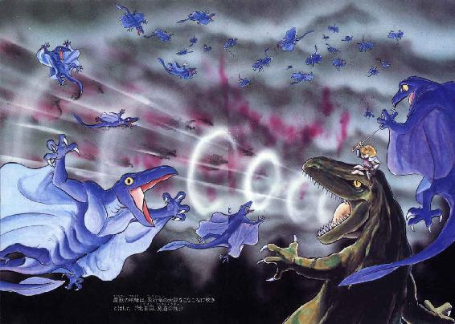

| 魔獣戦士ルナ・ヴァルガー＜１＞誕生 | |
| 秋津 透 | |
| (2014) | |

魔獣戦士ルナ・ヴァルガー
①誕生
秋津 透
本作品の全部または一部を無断で複製、転載、配信、送信したり、ホームページ上に転載することを禁止します。また、本作品の内容を無断で改変、改ざん等を行うことも禁止します。
本作品購入時にご承諾いただいた規約により、有償・無償にかかわらず本作品を第三者に譲渡することはできません。
本作品を示すサムネイルなどのイメージ画像は、再ダウンロード時に予告なく変更される場合があります。
本作品は縦書きでレイアウトされています。
また、ご覧になるリーディングシステムにより、表示の差が認められることがあります。
目 次
口絵・地図・本文イラスト あろひろし
登場人物
ルナ・ド・リムズベル リムズベル公国の第二公女。本篇の主人公。
ヴォルフ・ド・リムズベル リムズベル大公。ルナの祖父。
ゼナ・ド・リムズベル リムズベル公国の世継公女。ルナの姉。
ヴィーナ・ド・リムズベル リムズベル公国の第三公女。ルナの妹。
バト・ロビス ダンバス帝国の部隊長。ルナを宿敵と狙う。
魔獣ヴァルガー 伝説の大魔獣。無敵の威力を誇る。
テオドラ・ド・エリオン エリオン王国の王女。強力な魔道士。
ロ コ 有翼黒猫。テオドラ王女の使い魔。
ミル・ユード 貿易商兼帝国青年貴族。バト・ロビスの甥。
レイピア・ロナ ミル・ユードに忠誠を誓う女戦士。
アル・ギルス ミル・ユードの配下で働く髭面の大男。
ギルバート・エゼン 飛行竜を呼ぶ魔道士。帝国の味方をする。
リム（リム・リリス） プロの色事師娘。獣人に狙われている。
プロローグ
異世界、異時間、異空間。
あるところに一つの大陸があり、多くの人間が生活していた。あちこちに都市国家があり、互いに抗争したり、同盟したりしていたが、おーむね平和な世界であった。
ところがある時代、南方の都市国家のひとつ、ダンバス王国が精強な軍事力を背景に、急激に膨張をはじめた。近隣の南方諸国をことごとく従えたダンバス王は〝皇帝〟を称し、全世界征服の野望を明らかにする。
そしてダンバス皇帝は、残る北方諸国を制圧するため巨大軍団を二つ組織し、将軍を任じて進発させた。世に言う『大北征』である。
その軍団のひとつ、海岸沿いに北上する五万の大部隊が、小さな半島の小さな国......都市すら持たない小城にさしかかるところから物語ははじまる。その小国の名は、リムズベル公国という。
第一章 激闘！ リムズベル攻防戦
１
「あっきれたっ！ 酔っ払ってるじゃないの、あいつ！」
リムズベル公国第二公女ルナ・ド・リムズベルは小声で、しかし憤激をこめて呟いた。城の大広間に入ってきた帝国軍軍使は、まっ赤な顔にとろんとした目、酒臭い息をはあはあと吐き、足元もよろよろとおぼつかない。どー見ても大帝国の軍使と言うより、単なる酔っ払いの中年男である。
「なめられたもんね、あたしらも。一発、水でもぶっかけてやろうかな。酔いざましになっていいんじゃない？」
「ル、ルナ様っ！」
腹立たしげなルナの呟きを聞きつけ、年配の戦士長の一人が慌てて彼女の肩をおさえる。何しろ、十七歳の乙女のくせして近隣諸国に猛将の名を轟かせている〝跳ねっかえり公女〟だ。軍使に水ぶっかけるぐらい、冗談抜きでやりかねない。
だが、彼女の憤慨も知らぬが仏、軍使は千鳥足でリムズベルのヴォルフ老大公、ルナたちの祖父の前に進み出た。ゆるんだ口元がのべっと開き、酔っ払い特有の胴間声がとびだす。
「いやあ、大公殿下に公女殿下、それにリムズベルのお歴々には御機嫌うるわしく。このたびは我ら帝国の北征にあたり、お城を拝借申しあげることになった。ひとつ、この、よろしく、どーも」
半ば舌をもつれさせながら軍使は聞きぐるしいだみ声で喚いた。
「それにしても、いや、さすがは古き血統の名門リムズベル家。城をあけわたすにも、この、ちゃんと皆様そろってお立合いになる。まったく、うん、見上げたもんだ。沿海諸国の成りあがり者とは、一味ちがうねえ。まあったく大したもんですよ、大将！」
どなったとたんに軍使はよろっと大きくよろめいた。が、どーやら踏みとどまると、いきなりぎゃははははと馬鹿笑いを始める。老大公をはじめ、周囲からの視線が氷点下まで下がっているのに全然気付いていない。
と、老大公ヴォルフが王座からゆっくりと立ちあがった。馬鹿笑いを続ける軍使を冷たい目で見おろすと、皮肉っぽい口調で訊ねる。
「何の話をしておるのじゃ、おぬしは」
「へ？」
さすがに馬鹿笑いを止め、軍使はとろんとした酔眼で低い壇上の老大公を見上げた。その赤ら顔に叩きつけるように、リムズベルの統治者は目いっぱいきっぱりと言い放つ。
「我々は降伏などせん。帝国が北征とやらに行くのは勝手じゃが、この地を明け渡すことだけは相手が誰であろうがお断わりじゃ。戻って指揮官にそう伝えよ！」
「な......何だとぉ......？」
軍使は大きく目を見開いて絶句する。よほど意外だったのだろう、数回口をぱくぱくと開閉したあげくに、やっと言葉が絞り出された。
「しょ......正気か、あんた。俺たちの軍団は掛け値なしで五万はいるんだぞ。こんな、吹けば飛ぶよーな小城が戦える相手じゃない。悪いこたぁ言わん。さっさと城を明け渡した方が身のためだ、なっ」
「何と言われようと、この地は渡せんっ！」
老大公の口調は、身内のルナたちも驚くほど激しく、揺るぎがない。が、その瞬間、彼の体のほうがぐらりと揺らいだ。
「お祖父さまっ！」
「大公様っ！」
末姫のヴィーナ公女と、大公付き侍女のエルミが急いで老大公を左右から支える。
「いつもの頭痛じゃ......大事ない」
蒼白な顔で老大公は呻いた。そして、完全にあっけにとられている帝国軍軍使を見やると、口元をひきつらせるようにしてニヤリと笑う。
「とにかく、言うべきことは言った。まだ話すことがあるなら、世継公女と話すのじゃな。......むぐぐっ......」
老大公の白い眉がぎゅっとしかめられ、やせた体がくたっと崩れる。傍の侍女が素早く支え、末公女が後方の扉を開く。そこへ侍医が走り寄り、三人がかりで実に手際良く老大公を大広間から運び出す。あまりに事態がばたばたと進むので、軍使はぽかんと口をあけたまま言葉をはさむこともできない。と、その耳に甘ったるい声が話しかけてきた。
「あの、お気になさらないでくださいましね。お祖父様の発作は、それほど珍しいことではないのですの。決して、あの、あなたと話すのが嫌になってひっこんだわけではないのですわよ。それは確かに、お祖父様はお酒に酔った方とお話しになるのはあまりお好きではありませんし、わたくしもそれほど得意なわけではないのですけれど、今は好みに合うとか合わないとか、言っていられる場合ではありませんものね」
「あ......あんたが世継公女か」
「はい。ゼナ・ド・リムズベルと申します」
しとやかに一礼したゼナ公女の美しさに軍使は思わず目を見張った。見事な金髪をきれいに結いあげ、気品のある顔に花のような微笑をうかべている。いくら酔っているとはいえ、こんな美女に今まで気付かなかったとは不覚だった、と彼は本気で思った。
「公女殿下、俺は本気だぞ。あんたの大公は狂ってる。帝国軍と戦ったら、リムズベルは間違いなく滅亡だ。そんな目にあいたかないだろう」
「それはそうですけれども、でも、お祖父様の御意見も確かにもっともなのですよ」
そう言って、ゼナ公女は美しい眉をかすかにひそめた。
「わたくしも良くは知らないのですけれども、古くから伝わる秘伝承には、確かにわたくしたちリムズベル大公家の者は決してこの城を動いてはならないという戒めがあるのだそうですのよ。そもそも二百年ほど昔、当時の大公が沿海諸国を征服してザーネ市に移ろうとしたことがあったのだそうですわ。その時、城の地下から御先祖さまの御魂が現われて子孫たちをきつくお叱りになったという伝説がありますのよ。何でもその時の大公は二十代の若さだったのに、御魂に叱られて、一夜のうちに白髪の老人になってしまったという......」
「何を寝言みたいなこと言ってんだ！」
さすがに苛立った声を出し、軍使は手を伸ばしてゼナ公女の腕につかみかかった。
「伝説と心中しようっていうのか、馬鹿な！ 俺の言うことを聞くんだ。これは親切で言ってやって......ぶわっ！」
「いーかげんに、しなっ！」
いきなり、軍使の頭上から冷たい水が勢いよくぶっかけられた。驚いて見回すと、くせのある、ちょっとくすんだ金髪の娘が、碧がかった紺の瞳で軍使をにらみすえている。兜こそかぶっていないが、軽甲冑に身をかため、長剣を帯びた戦士姿だ。
「な、何だ、おまえは？」
「第二公女ルナ・ド・リムズベル」
昂然と言い放つと、ルナは小桶をとん、と後ろへ投げた。視線は軍使にすえたままである。と、ゼナ公女が間のびした調子で訊ねかけた。
「あのー、ルナァ、あなたにはあなたの考えあってのことと思いますけれども、そういう態度をとっては軍使さんに失礼にあたるのではありませんかしら？」
「いーのよ、酔っ払いなんだから」
姉の方を見ず、ルナはそっけない声で答えた。この姉とまともに話をしよーなんて気を起こしたらどういう羽目になるか、彼女はよく知っている。と、ゼナが勝手にうなずいた。
「ああ、そうですの。酔いをさましてあげようという親切心ですのね。それはよいことですわ」
そう言って彼女はにっこりと微笑った。その笑顔を見たとたん、軍使の表情がいきなり険悪になる。
「き......貴様らぁ......しめしあわせて俺を馬鹿者扱いしおったなあっ！」
冗談じゃない、だれが姉上としめしあわせるよーな酔狂な真似するもんか、とルナは苦笑した。だが、短絡している酔っ払いにそんな説明したってはじまらない。すでに軍使の手は剣の柄にかかっている。
「抜く気？ 抜いたら水ぶっかけるぐらいじゃ済まないわよ」
警告とも挑発ともつかない口調で言いながら、ルナは長剣に軽く手を添えわずかに身を沈めた。一分の隙もないその姿勢と、先刻浴びせられた冷水が急速に軍使の酔いを醒ましたらしい。
「......ふん、女と斬りあうわけにもいかんしな......」
やや赤味のあせた渋面で、軍使は横を向き剣から手を放した。それに応じてルナも構えを解く。二人の公女を横目で見ながら、軍使は腹立たしげに宣告した。
「よかろう。どのみち俺にリムズベルの命運を心配してやる義理はない。帝国軍に楯ついた報いをたっぷり思い知るんだな。その後で泣きついてきたって、手遅れだぞ」
言うだけ言うと、軍使は肩をいからせ、足音も荒く大広間から出ていった。扉が閉まると同時に、居並ぶ戦士長や侍臣たちがざわめきはじめる。一人の若い戦士長がすっとルナ公女の傍に寄り、小声で訊ねた。
「本当に戦うんですか？ 帝国と」
「大公殿下があれだけの啖呵きっちゃったんだもの。戦うしかないでしょ」
呟いて、ルナは肩をすくめた。敵軍は歴戦の精兵が約五万、味方は戦士とは言うものの日常は猟師やってるよーな兵士がせいぜい二千。普通に考えたら勝ち目はない。しかし、仮にも三十年以上大公位にあって〝リムズベルの老狼〟と呼ばれている男の決断だ。何か滅亡をまぬがれる秘策があるに違いない。
と、その時、奥の扉が細く開いて、小柄な少女が大広間に入ってきた。次姉と同じ、くすんだ金髪に紺の瞳、第三公女のヴィーナである。少女はすぐにルナを見つけて素早く走り寄った。表情に不安の色が濃い。
「ルナ姉さま、ちょっと、こっち！」
姉の手をつかみ、少女は奥の扉へと引っぱった。只事ならぬ気配を感じ、ルナも急いで従う。
「どうしたの？」
「お祖父さまの意識が戻らないの。どうも、いつもの頭痛じゃないみたい」
妹が切羽詰まった調子で囁く。ルナの表情が思わずひきつった。
「それって、危篤なのっ!?」
「かなりね。侍医は今夜が勝負だって言ってる。とにかく、しばらく意識は戻らないだろうって」
「そ、そんなあ......」
冗談じゃあない。こうしている間にも帝国の大軍団はこの小城へと進軍を開始しているはずだ。そこで大公が倒れたんじゃ、迎撃戦の指揮をとるのは自動的に公女ってことになる。しかも、あの調子っぱずれの姉上と協力しながら、何の作戦もなく......
「こ、これは......やばいよお......」
半ば無意識に、ルナ公女は呟いた。リムズベル攻防戦の幕は、こーしてプッツンと切って落とされたのである。
２
「けっこう、粘るのぉ......」
ダンバス帝国北征第二軍司令官、グラ・ゴルン将軍は、本陣からリムズベル城を見上げ、呟いた。あの小城に攻めかかってすでに五日、今日も大門を破れないまま日が暮れようとしている。兵にはほとんど損害はないとはいえ、予想をはるかに越える手こずりようだ。
「湖岸の山城......確かに攻めにくい地形ではあるが、それにしてもよく士気が続く......」
老将軍は自分でも意識しない程度の声で呟きを続けていた。普通、これだけの大軍を前にしたら、籠城側の士気は一気に吹っ飛んでしまう。実際に、これまで戦ってきた諸都市国家のほとんどは、帝国軍団を見ただけで震えあがって降伏してきた。
「よほどの将がおるのか......それとも、北王国の援軍でも期待しておるのか......」
どちらにしろ、これは少し仕掛けてみる必要があるかも知れんな、と将軍は思った。ここのところ楽な戦争が続いたので、無意識のうちに敵を見くびってしまったようだ。たとえば犠牲を覚悟で、湖の南岸の崖に兵をまわすなどの策を用いれば......。
突然、本陣の後方、西側の部隊から叫び声があがり、老将軍のもの思いを中断させた。続いて、大勢の喚き声とどよめき、荷役用の牛羚羊のけたたましい鳴き声が一斉にわきおこる。
「何事だっ！ 見てまいれっ！」
将軍は年齢を感じさせない大音声で怒鳴った。即座に将軍付きの直衛兵が数人、騒ぎの方へ走る。
「兵糧隊の方だな......」
まさか、奇襲を喰ったか、と将軍が唇をかみしめたその時、西の空にだしぬけに火の手があがった。急速に暗くなってゆく空の下に、我が物顔に金色の炎が舞う。もはや疑問の余地はない。兵糧隊が襲われ、焼き討ちをかけられたのだ。
「後方部隊に火を消させろ。前衛は予定通りに後退だ。兵を動揺させぬよう、各部隊長に厳命せよ！」
矢継ぎ早に指示をとばしながらも、将軍は内臓が煮えくりかえるような怒りを覚えていた。わしが、このグラ・ゴルンが、兵糧を焼き討ちされるとは何たる不覚！ 第一軍司令官や、他の将軍どもが聞いたら、腹を抱えて大笑いするだろうよ！
「それにしても......」
一応の指示を出し終えた将軍は、西の空に踊る炎を見上げて呟いた。
「リムズベルにこんな奇襲のできる将がいるとは......まさか、例の跳ねっかえり公女のしわざではあるまいな......」
実は、そのまさかだった。
グラ・ゴルン将軍が西の空を見上げて歯嚙みしている頃、ルナ・ド・リムズベル公女は帝国軍兵糧隊の陣地の中を、大急ぎで走り回っていた。紋章のない軽甲冑にマントを羽織り、帝国軍の兜をかぶっている。ちょっと見ると伝令兵のようだが、腰帯の右側に袋をさげているのが妙といえば妙だろう。しかし、突然の火の手に右往左往しているダンバス兵たちは、まるで彼女を見とがめない。
「......さすがに五万人の兵糧、燃やし甲斐がありすぎるわ......」
物騒なことを呟きながら、ルナは兵糧を満載した荷車の陰に走りこんだ。腰の袋から発火油の瓶を取り出し、荷車に叩きつける。割れたところに火口を投げてやると、たちまち炎が噴きあがる。
「あと瓶は二つか......そろそろ潮時かなぁ......」
いっしょに潜り込んだリムズベル戦士たちは、もう脱出したかな、と思いながらルナは荷車の列の反対側に抜けた。
と、その時、誰かがいきなり彼女の右肩をつかんだ。反射的に剣を抜こうとしたが、腕が動かない。
「こら、何をしている。さっさと火を消さんか」
頭上から野太い声が降ってきて、ルナはおそるおそる顔をあげた。鬚面の大男が、彼女をにらみつけている。彼女も女性にしては背のあるほうだが、それでも男の肩まで届かない。炎に照らされた顔が、まるで人喰鬼だ。
と、そのいかつい表情がルナの顔を見て、ちょっと柔らいだ。
「なんだ、子供じゃないか。初陣か？」
が、がきとは何よっ！ と危うく言いかかって、ルナは必死に自制した。声を出せば女とばれて面倒なことになるかもしれない。とにかく彼女はこっくりとうなずいた。大男はぐわっと笑う。笑うと、割に愛嬌のある顔だ。
「そうか。この程度のことでびびってんじゃないぞ。落ちついて、火を消す手伝いをするんだ。いいな、そら」
大男は彼女の肩を放しざま、どんと背を突いた。冗談のつもりだろうが、凄い力でルナは傍の荷車に叩きつけられ、同時に腰のあたりでガチャッ、びしゃっと音がする。瓶が割れ、袋の口から油がこぼれたらしい。彼女の顔から血の気がひく。
「何だ、今の音は？ 子供のくせに酒瓶でもぶらさげてたのか？」
大男の不審気な声もかまわず、ルナは大慌てで袋を放り出し、一目散にかけ出した。
「？？」
男はいぶかしそうに、走り去るルナと放り出された袋を等分に見やった。と、燃える荷車が噴きあげた火の粉が、ふわりと袋の上に落ちる。そして次の瞬間、袋は爆発的に燃えあがった。
「あわわっ！ こ、こいつはっ！」
意外と素早い身のこなしで跳びのきながら、大男は大声で叫んだ。
「発火油じゃないか！ て、ことはあの小僧......」
あまり頭の回転が早そうには見えない男だが、さすがに事態に気付いたらしい。持っていた水桶を置くと、ルナの消えた方向へ走りだした。しかし、もちろん、もはや彼女の姿はない。
「ふうっ...やばかったあ......」
それから間もなく、ルナは燃える兵糧隊陣地を後にして、リムズベル湖の北岸に出ていた。あたりはもうすっかり暗く、星明かりだけが頼りである。
「みんな、もう引きあげたろうな。あたしも早いとこおさらばしなくちゃ。......でも、その前に、と」
呟きながら、ルナは湖辺に降りた。崖がきりたつ南岸と違い、北岸はなだらかな砂地だ。湖辺で彼女はマントを脱ぎ、軽甲冑をはずす。そして、かすかに水音をたてて湖に入ると、腰帯を剣ごと解き、思いきりよく短衣を脱ぐ。
「あの中年のおかげで、腰から右脚、発火油でべたべただもんね。気持ち悪いったらありゃしない」
ぼやきながらルナは水を浴び、短衣を洗って絞った。焼き討ちの火照りが残る裸身に、冷たい水が心地良い。
と、その時、湖岸の上の方で繁みががさりと鳴った。誰か来る、と知って、ルナはあわてて湖中に身をかがめる。これでじっと音をたてなければ、星明りだけで彼女を見つけるのは大変に困難なはずだ。
間もなく、巨大な影が砂を踏んで湖辺に降りてきた。まっすぐ、ルナの脱いだマントと軽甲冑のところへやってくる。そして、それらをちょっと見て、湖の方へ向きなおった。
「小僧、湖の中か。発火油の匂いが命取りになると気付いたようだが、ちと手おくれだったな」
ありゃ、あの中年でないの、とルナは内心呟いた。てーことは、この男、あの状況から発火油の臭跡をたどってあたしを追ってきたわけ!? な、なんつー嗅覚してんのよ、こいつ！
「それにしても、帝国軍のどまん中にとびこんで兵糧を焼き討ちするとは、小僧のくせして見上げた度胸だな。このバト・ロビス、心底感服したぞ。もしお前が帝国に付く気ならよろこんで部下に迎えよう。こう見えても俺は部隊長だからな」
ほーほー、とルナは内心苦笑した。ったく部隊長たる者が、部下ほったらかしてこんな所で遊んでていいのかねー。......もっとも、その点に関しては彼女自身、他人のこと言えた義理ではないが。
「お前にも目があればわかるだろう。リムズベルは大公が倒れ、後は小娘ばかりだ。どう考えても長いことはないぞ」
「おっしゃいますわね、部隊長」
呼ばわって、ルナは立ち上がった。別にバト・ロビスに挑発されたわけではないが、そろそろ水の冷たさが身にこたえてきた。相手に立ち去る気がない以上、状況が悪くなる前にけりをつけちまった方がいい。短衣を着ているひまがないので、裸身の上に腰帯だけというとんでもねー格好だが、そんなこと気にしている場合じゃない。少なくとも剣があれば、後はどうだっていいのだ。
「き、貴様、女か!?」
星明かりにうかぶルナの見事な裸身に、さしものバト・ロビスも驚いたらしい。しかし、その影が剣をかまえているのを見てとると、即座に彼も腰の武器を抜いた。一見巨大な手斧のようだが、先端に刃がついている。南方独特の武器斧剣で、よほどの達人でないと使いこなせる代物ではない。
「女か、とはご挨拶ね。少なくとも、あんたが男なくらい、あたしは女よ」
へらず口を叩きながら、ルナはゆっくり前進した。用心しないと、湖底はいきなり深くなることがある。バト・ロビスは斧剣をかまえて、じっと相手の気配をうかがう。
「......そうか。わかったぞ。貴様が有名な、リムズベルの跳ねっかえり公女だな。......なるほど......」
「納得した？」
笑みを含んだ声をかけると同時に、ルナは猛然と突進した。バト・ロビスも咆哮をあげて間合いを詰める。と、その足がザブッと水の中に入ったかと思うと、軟泥の中にずぶりと沈む。
「おっ!?」
足元に気を取られた一瞬、斧剣がおくれた。頑強な斧ではなく、細い刃がルナの剣と衝突する。折られるのを避けるため、バト・ロビスは斧剣を引かなくてはならない。が、ルナもそれ以上踏みこまず、敵の脇を走り抜けて湖辺にあがった。そのまま素早くマントを拾い、身にまとう。
「ま、待てっ！」
吠えたてて、大男は湖辺にあがろうとした。が、何と足が膝近くまで軟泥に埋まってしまい、なかなか抜けない。リムズベル湖に踏みこむには、いささか彼は重すぎたらしい。
「このまま闘えばあたしが勝つでしょうけど」
裸身の上にマントを羽織ったルナは、腰帯に剣をおさめながら、バト・ロビスに笑いかけた。
「あんまりもたもたしてて、帝国兵が来てもやばいしね。今日のところは見逃がしたげる。じゃ、またね」
「こ、こらーっ！ 待たんかっ！ 勝負しろ、ルナ・ド・リムズベル！ 逃げる気か、えい、くそ、このっ！ このこの、このっ！」
足を引っこ抜こうと苦心サンタンしながら喚きたてるバト・ロビスを尻目に、ルナは一目散に走りだした。
３
焼き討ちのあった翌朝、バト・ロビス部隊長以下、四人の部隊長がグラ・ゴルン将軍のもとに呼び出された。彼らは、焼き討ちをくらった時の後方部隊指揮官で、言ってみりゃ昨日の一件の直接責任者たちである。
四人の前に出てきた将軍の表情は、当然ながらおそろしく厳しい。バト・ロビスを除く三人は、蒼白な顔を見合せあう。そのとたん、将軍が口を開いた。
「わかっているとは思うが、リムズベルはあと三日以内に陥とさねばならぬ。いかなる手段を用いても、だ」
部隊長たちはうなずいた。焼け残った兵糧では、あと三日しか戦陣を維持できない。かといって、陣を払って補給地に引きあげれば、将軍の面子が丸潰れになるのはもちろん、帝国軍敗れるの報が広まって、今まで征圧してきた地域が大騒ぎになる。そうなっては、北征どころか帰国もできなくなりかねない。
「そこで、わしは正面攻撃と同時に敵城の背後を衝くことにした。即ち、湖の南岸を抜け、山脈方向から攻める。これがうまくいけば、あの程度の小城、たちまち陥ちよう」
「しかし将軍、湖の南岸は切り立った崖です。とても兵を動かせる地形とは思えませんが」
首をかしげた部隊長を、将軍は凄い目付きでじろりとにらんだ。
「リムズベルの焼き討ち隊はやって来たぞ。奴らとて人間、まさか鳥でもあるまい」
「そ、それはそうですが......」
顔をひきつらせながらも、部隊長は何とか抗弁しようとする。が、その時、バト・ロビスの野太い声が、彼を無遠慮にさえぎった。
「わかりました、将軍閣下。確かにリムズベルの奴らが降りてきた以上、崖といえど路はあるはず。それを逆にたどれば進軍は可能ですな......少なくとも我が部隊なら」
「ふむ......やれると思うのか、お主は？」
こうもあっさり乗ってくるとは思わなかったらしく、将軍の口調はやや意外そうだった。それに対して、バト・ロビスは目いっぱいきっぱりと言いきる。
「はい。やれます。やって見せます」
何しろリムズベルの小娘がやってのけてるんだ、と彼は内心続けた。俺がやれないなんて言えるわけがない。崖だろうが山脈だろうが踏み越えて、今度はこっちから、あのとんでもねー小娘の所へ押しかけてやる。
「うむ......よく言った。それでこそ帝国の武人というものだ」
何だか原因不明の燃えあがり方をしている部下にやや戸惑いつつも、将軍はとにかく賞賛の言葉をかけた。続いて、残り三人の部隊長に冷たい視線を向ける。
「......で、他の者はどうなのだ？」
こうなってしまっては、仮にも帝国軍の部隊長たる者、無理ですだの不可能ですだのぬかすわけにはいかない。結局、彼らも内心はどうあれ、堂々と胸を張って「やって見せます！」と宣言するしかなかった。
こうしてこの朝、帝国軍五万のうち四部隊四千の兵が、リムズベル湖南岸の険路に向かった。決死の別動隊である。
「あちゃーっ......とーとー来たわね――」
城の塔の頂上にある物見台で敵軍の動きを見ていたルナ公女は、この別動隊に気付くと同時に、思わず舌打ちして呟いた。
「まいったな――、敵さん本気だよ――。屍山血河を築いてでも、リムズベルを撃滅する気だよ――。う――」
彼女は、くせのある金茶色の髪を苛立たしげにかき上げた。ここんとこ忙しくてろくに手入れしていないので、かなりぼさぼさになっている。
「まっ、昨晩の焼き討ちで、こーなっちゃったんだろーけど......できればお引き取り願いたかったんよね――......」
ま、今さら愚痴ってもはじまらないね、と彼女は物見台の手すりをぱんと叩いて呟いた。とにかく、敵は窮地に立たされ、死にもの狂いの攻撃をしてくる。しかし、それさえしのぎきれば、数日で帝国軍が陣を払わざるを得なくなるのも、また確実なことなんだ。
「......とにかく、山側から来る敵を城に近づけさせないこと......と言っても正面から兵を割くわけにはいかないし......また小人数で急襲かける他、ないわね――......」
その戦法だと指揮官を誰にするかは考えなくていいな、とルナは半ばうんざりしながら思った。また、あたしが出るしかない。
「そうと決まれば、また姉さまにしっかり留守を頼んどかなきゃ......あーあ」
姉上のことを考えたとたん、例によって、軽い頭痛がルナを襲った。最近ずっとこんな調子で、彼女の声を聞くと背筋に悪寒が走り、姿を見ると全身総毛立つ、という状態である。もう、ほとんど生理的拒絶反応に近い。
「十七年間、一つ城の下に住んできたわけだけど、あそこまで波調の合わない姉上だとは気がつかなかったな――......」
ぼやきながら、ルナは物見台から城内に戻ろうと振りかえった。と、ちょうどそこへ小柄な女の子が顔を出す。リムズベルの第三公女ヴィーナだ。
「ルナ姉さま、状況はどう？」
少女は姉に走りよりながら訊ねた。十二歳という年齢にしては利発で機敏なこの妹は、少なくとも姉上よりはよほど相談相手になる。
「あんまり良くないわ。昨日の焼き討ちは、帝国軍の闘争心にまで火をつけちゃったみたいね。見てよ、ヴィーナ」
そう言ってルナは、湖の南西岸を指さした。まるで蟻のように崖にとりついている帝国兵を見て、少女の目が丸くなる。
「うっそお、南岸から軍隊をまわす気!?」
「それだけ必死なのよ、敵さんも。放っておいても、南岸から兵をまわせば半分は脱落するでしょうね。でも、残り半分が山門に攻めかかったら、こりゃ大脅威になるわ」
「......じゃあ、どうするの？」
不安げな妹に、ルナはにこっと笑ってみせた。この子をおびえさせたって意味がない。
「南岸の連中はあたしが引き受ける。手勢は十五人ももらえれば充分ね。後はいつもと同じ、ゼナ姉さまとあんたで味方を指揮して、正面をささえてくれれば大丈夫よ」
「......ルナ姉さま、また出るの？ 誰かを代わりに出せない？」
「？」
妹の口調に真剣そのものの雰囲気を感じとり、ルナは表情をあらためた。
「どういうこと？ あたしが出ると、何かまずいの？」
「実は昨晩、ルナ姉さまが戻ってくるの、おそかったでしょ......」
そう言いながら少女は声をひそめ、姉にぴったり寄りそった。そして、囁くような声で続ける。
「......それで、城内に変な噂が広まったのよね。ルナ姉さまが重傷を負ったとか......戦死したとか」
「！」
何それ、とルナは心底、愕然とした。確かに危い作戦ではあったが、朝にもならないうちにそんな噂が飛ぶとは......少なくとも、ルナが無事でない方が有難いと思ってる奴が、城内にいるということになる。
「で、どうなったの？」
「ゼナ姉さまは例の調子で、『ルナが戦死なんて、そんなこと絶対にありえませんわ、ほほほ...』なんてやってたけど、説得力ないでしょ、全然。血の気の多い戦士たちは、確かめに出ようとするし......これも噂だけど、ルナ姉さまを失なってはもはやこれまでだから、帝国に降伏した方がいいって説得して回ってた連中がいるっていう話もあったし......それやこれやで大騒ぎだったのよね。もちろん、姉さまが無事に戻ってきたから、後は静かになったけど、あのままもっと時間が過ぎてたら、何がどうなってたか想像したくもないわ」
「......そうだったの......」
ルナは呟いた。道理で昨晩戻ったとき、戦士長たちが涙を流さんばかりに喜んだわけだ。あの時は、ずいぶん大袈裟な、と思っただけだったが......。
「だからルナ姉さま、今日また姉さまが城を出たら、それこそ何が起きるかわかんないと思うの。内応で城が陥ちちゃうかも知れない。そうなったら元も子もないでしょ？」
「確かにね......でも、山側の敵も放っておくわけにはいかないし......」
呟いて、ルナは崖の近くでもぞもぞしている敵を見やった。どうするにしても、急がなくては手遅れになる。その瞬間、彼女は決断した。
「ヴィーナ、やっぱり、あたし出撃する」
「えっ!?」
驚きと、幾分かの咎めだてを含めて姉を見上げる少女に、ルナは元気づけるような笑顔を見せた。
「あんたや姉上に戦闘指揮させるわけにもいかんしね。それに、少なくとも戦士長で用心しなくちゃいけない奴は見えたし。油断しなけりゃ、あたしがいなくったって大丈夫よ」
「へえ？......」
あっけにとられている妹に、彼女は小声で囁いた。
「昨晩あたしが戻ったとき、戦士長のうち五人が姿を見せなかったわ。それだけで危険と決めるわけにはいかないけど、それ以外の連中はまず大丈夫よ。......あんなとこでお芝居ができるよーな奴なら、あたしがいようがいまいが、とっくに裏切ってるでしょうからね」
「そっか......で、その五人って、誰？」
瞳を輝かせて訊ねるヴィーナに、ルナはひそひそと耳元で囁いた。少女は、真剣そのものの表情でうなずく。
「わかったわ。......でもやっぱり、ルナ姉さまがいないと心配だなー」
「もうそれは言わないの。ゼナ姉さまにもこの話はしとくから、二人でしっかり城を守って、ね」
昨夜の大男を真似たわけではないが、ルナは妹の背をとん、と軽く突いた。ヴィーナはちょっとよろけ、それから姉を見上げてにこっと笑う。
ルナも笑いかえしたが、その笑顔は急にひきつってしまった。甘やかな声が、彼女の背筋をぞわわわっと走りぬけたのである。
「ルナァ、ヴィーナァ、こんな所にいたのですか。探しましたのよ」
「ゼナ姉さま。......何かあったの？」
妹の問いに、ゼナ公女はにっこりと笑って答えた。
「とても良い知らせなのですよ。二人とも、早くいらっしゃいな」
「だから、良い知らせって、何？」
背を向けかかった姉に、ヴィーナがしつこく訊ねた。このへんの確認を怠ると、『良い知らせ』の一言で、縞兎の赤ちゃんだの、丹精こめた紅菊の花などを見せられることになる。平時ならとにかく、この忙しい時にそんなのは御免こうむりたい。
が、ゼナ公女はわずかに振りむき、またにっこり笑って答えた。
「お祖父様の意識が戻られたのですよ。まだお起きになることはできないのですけれど、少しの間、お話しするぐらいならよろしいということで。だから、みんなで御見舞に行きましょう、ね」
「それは......本当に朗報だわ」
ルナが、懸命にアレルギーを抑えながら言った。大公が回復してきたという情報を流せば、多少なりとも城内の動揺を静められるかもしれない。
「行こ、ヴィーナ！」
「はい！」
こうして、三人の公女は連れ立って物見台を離れた。この三人のうち二人だけは、この日のうちに、またここに立つことになるが、もちろんそんなことは、彼女たちの知ったことではない。
４
「誰かおるか？」
リムズベルの老大公ヴォルフは、息苦しげな、しかし意外にしっかりした声で人を呼んだ。その声に応じて、一人の若い侍女が寝台の傍に走りよる。
「エルミがおります、大公さま」
「うむ......侍医は大広間か？」
「はい。お呼びしましょうか」
「いや、よい。......戦いが始まっておるのだな。侍医も忙しくなろう」
今日こそがリムズベルの命運が決まる日となろう、と大公は妙に確信を持って思った。自分が不覚にも倒れ、我国は公女たちの指揮下で帝国と戦う羽目になってしまった。そして今朝、意識が戻ってみると、味方も、また意外なことに敵も、勝敗の瀬戸際に立っている。
「......今朝わしが目覚めたということは......やはり、わしにも成すべき事があるのじゃろうな......」
成すべきことが何か、それはわかっている。少なくとも、わかっているつもりだ。問題は、いつ、どうやって、ということだけだ。
「エルミよ。おぬしに頼みがある」
老大公は、寝台の脇にかしこまって控えている侍女に声をかけた。
「はい？」
「今日、もし城の大門か、山門が帝国に破られたら、即座にわしに知らせてくれ。そうなった時には、わしにはやらねばならぬことがあるのじゃ」
「は...はいっ......」
何を想像したのか、エルミの大人しそうな顔から一気に血の気がひいてしまった。黒目がちの目を伏せ気味にして、緊張した表情でうなずく。もし、わしが本当は何をやろうとしているのか知ったら、この娘、卒倒してしまうかもしれんな、と大公は内心思った。
「そして、もしそうなった時には、わしは誰にも邪魔されたくないのじゃ。すまぬが、その場合には、おぬしにその扉を守ってほしい」
「私が、ですか!?」
エルミの目が驚きで大きく見開かれた。彼女は戦士じゃないから、甲胄を着たことも、剣を手にしたこともない。もちろん、他人と戦ったことなど一度もない、優しい普通の娘である。どこぞの跳ねっかえりとは違うのだ。
「うむ......おぬしには酷な頼みとは思う。しかし、この事はうかつな相手には洩らせぬのじゃ。どうかわしの頼み、聞いてくれ」
「......わかりました。私の命に代えましても、大公さまの邪魔はさせません。た、たとえ、帝国の蛮兵が大挙してなだれこんで来ても、決してこの扉は開けさせませんわ」
可哀そうに、エルミは〝悲愴〟を主題に彫りあげた乙女の像みたいな表情になって、けなげに決意を表明した。もっとも声がぶるぶる震えてしまうのは、どうしようもない。
「すまぬな。そんなことにならなければ、それに越したことはないのじゃが......それから、ひとつ言っておくが、わしがこの扉を閉ざした後は、敵兵はもちろんじゃが、味方の者も入れてはならぬぞ。ゼナやルナが来ても、わしの命令を受けたと言って、阻むのじゃ」
「......姫さまたちでも、ですか？」
エルミの表情がけげんそうなものに変わった。彼女の想像していた、大公の〝しなくてはならないこと〟と、今の命令が一致しないらしい。だが、大公は説明はせず、重ねて念を押した。
「そうじゃ。とにかく、誰であろうと、例外なしに入れんでほしい。やってもらえるか？」
「はい......わかりました」
再び決意を瞳にこめて、エルミがうなずく。老大公はうなずきかえすと、まぶたを閉じて小声で呟いた。
「まったく、すまぬ。......しかしやらねばならぬのじゃ......」
さて、老大公がやらねばならぬとぶつぶつ呟いているちょうどその頃、ルナ公女の方はやらねばならぬことをやるために、リムズベル湖南岸の崖の上を走っていた。
「思ったより出発まで時間くっちゃった......敵はどの線まで来てるのかな」
呟きながら、ルナは岩から岩へ渡り、大枝につかまって跳ぶ。地表はすさまじい険路で、しかもあちこちに甲猪用の罠が仕掛けてある。宙を跳んでった方が、はるかに安全だ。
しかし、帝国兵たちはそんなことは知らない。必死の思いで崖を登り、ヤブを斬り払い岩にすがって進もうとしたとたん、縄罠につかまって宙吊りにされたり、落とし穴にひっかかって脚を折ったり、もうさんざんだ。
「サ、部隊長、少し速度をゆるめてやって下さい！ 兵たちが追いつけません！」
組隊長が悲鳴のような声をあげ、バト・ロビスは舌打ちして立ち止まる。振りむくと、確かにごく少人数しかついてきていない。
「なんだ、情ない。それでも貴様ら帝国の武人か。リムズベルの連中は平気でこの路を使っているんだぞ」
それも、二十歳にもならん小娘が指揮をとっているんだ、と彼は内心続ける。わかっとんのか、貴様ら、あ――？
しかし、バト・ロビスはそこまでは口に出さず、その代わり険しい目付で周囲をながめた。
北東から東の方向にリムズベル湖が広がり、朝の光を反射してきらめいている。その東の詰めにはリムズベル城がそびえ、北側の大門ではすでに戦闘が始まっている。
大門から湖の北岸に沿って、帝国の本軍が狭い地峡をびっしり埋め、そのまた北側は輝く海だ。はるか水平線のあたりには、北王国だろうか、ぼんやりと陸地が望まれる。天下の絶景と言ってもいい眺めだが、バト・ロビスにはそれを楽しむほどの余裕はなかった。
目を転じて南を見ると、ほぼ垂直に近い断崖が視界を阻む。この崖は彼らの目の前でずいっと湖側へ張り出し、人一人やっと通れるぐらいの道...というかへりを残して東へ続いている。
そして最後に西を振りかえった部隊長の目に、十名ほどの兵がヤブをかきわけ登ってくるのが入る。彼はむっつりとした表情のまま、部下たちに声をかけた。
「よし、もう良かろう。行くぞ」
返事を待たず、大男は崖っぷちの道を進みだした。足場はとても堅固とは言えず、一歩ごとに小石や土塊がぼろぼろと崩れ落ちる。こういう時には、重量級はつらい。バト・ロビスは慎重に足元を見ながら、ゆっくりと歩を進めた。その後から部下たちが、おっかなびっくりで従ってくる。
それでも一行は着実に前進し、やがて道が大きく山側に曲折する所にさしかかった。先頭の部隊長が一歩前進すると同時に、大きく視界が広がる。だが、彼の視線はその中のわずか一点、道の十数歩先に釘付けになった。
「で...出おったなぁ、小娘ッ！」
「出おったなぁ、はないでしょ。妖怪変化じゃあるまいし」
不敵な笑みを浮かべ、ルナはすらりと剣を抜いた。
「こんな所で顔見知りが出会うなんて、滅多にあるこっちゃないわよ。少しは愛想良くできないの？」
「黙れっ！」
怒鳴りながらもバト・ロビスは、こちらはずんばらりんといった感じで斧剣を抜き放った。同時に後ろの部下たちもそれぞれの武器を構えるが、部隊長の巨体が障壁になり、手を出すどころかろくに敵を見ることすらできない。
「どんな大軍が来ようと、崖道では一人ずつしか戦えない......でも、その一人がちょっと問題あるなあ、この場合......」
剣をまっすぐに構え、ルナは小さく呟いた。と同時に、バト・ロビスが凄い雄叫びをあげて突っこんでくる。斧剣が唸りをあげてルナの脳天に襲いかかった。
〝ぎん！〟
鈍い金属音があがり、剣と斧剣の刃か擦りあった。ルナはかろうじて敵の一撃を受け流し、剣をはねあげる。が、素早く反転した分厚い斧の側面が、剣の切っ先を阻んだ。
「うおおおっ！」
帝国戦士が猛然と吠え、強烈な踏みこみとともに斧剣を叩きつける。受けようものなら剣をへし折られかねない。ルナは素早く後ろへとびのいた。しかし、場所が場所だけに、あまり大きくは動けない。彼女の鼻先を刃がかすめ、さすがのルナも思わず瞳がよってしまった。
「よくかわしたな」
バト・ロビスが牙のような歯を見せる。本人は笑ったつもりなのかも知れない。そして即座に斧剣の猛撃が風を巻いて襲いかかる。
「くうっ！」
ルナの喉から呻くような気合が洩れた。体を沈め、横なぐりの斬撃を文字通り間一髪はずしながら、剣で敵の脚を払う。が、すぐに斧剣が突き出され、難なく受けられた。その間合を利用し、ルナはわずかに後退する。
「......やっばいなぁ......」
思わず彼女は声を出して呟いてしまった。狭い崖道という限定された戦場は、ルナのような身軽な戦士にはえらく不利で、バト・ロビスのような強力な戦士にこそ好適だ。そして、ルナの最初の認識より、この男、はるかに腕が立つ！
どうしよう、と考える間もなく重戦士の息もつかせぬ連続斬撃が繰り出される。必死の思いで受け流し、力をはずす。金属音があがり、剣と斧剣が閃光を散らすごとに、ルナの位置がじりじりと後退する。しかし、後方にはろくすっぽ地面がないのだ。
一歩、一歩、そして半歩。後退するルナの足の傍をざらっと小石がすべり落ちる。足が止まり、全身から冷汗が噴き出る。後ろを振りかえりたくなる衝動に耐え、彼女は正面の敵を見すえた。
「後がないぞ、小娘」
まじめな表情で大男が告げる。御親切にどうも、と言いかえそうと思ったが、口の中がカラカラで声がでない。
「可哀そうだが、これで終わりだ。だあっ！」
鋭い気合とともに、バト・ロビスは斧剣を叩きつけるように振りおろした。受けもかわしもできない文字通りの必殺の一撃の前に、相手はばっさり斬られるか、崖から転げ落ちるか、どちらにしても命はない...はずだった。
次の瞬間、帝国戦士の鼻先を疾風のような影がかすめ、敵の剣が彼の額から左頰を浅く裂く。即座に斧剣が剣を払いとばすが、剣の向こうにいるはずの敵の姿がない。
「!？」
転落したのかと男は一瞬思った。と、同時に何かかが彼の背を軽く突く。男は反射的に足を踏んばった。そのとたん、崖っぷちががらり、と崩れる。斬りかかってからここまで、一呼吸も経過していない。
「うわわっ！ わっ！」
バト・ロビスは慌てて後方にとびのいた。が、今度はとびのいた先が連鎖的に崩れだす。周囲じゅうの地面がすべり出し、足がかりがない。男はとっさに、斧剣を斧の半ばまで崖面にねじり込んだ。同時に足元が消えてなくなり、あっという間に彼は崖面に宙ぶらりんになる。体重で斧剣の、柄の部分が大きく傾き、男の全身から脂汗が噴きだす。
「サ・部隊長ッ！」
「おいっ、綱だっ！ 綱はないかっ！」
崖道の崩れ際の突端で部下たちが口々に叫んでいる。しかし彼らも騒ぐばかりで、なかなか有効方策が打てないようだ。斧剣を突き立てた周囲の土がぽろぽろと崩れ、さしものバト・ロビスも自然に顔がひきつってくる。
だが、次の瞬間、彼は自分の窮地を完全に忘れた。絶対に間違えようのない、笑みを含んだ小生意気な声が、部下たちとは反対側の突端から聞こえたのだ。
「墜ちるかなーと思ったけど、さすがにしぶといわねー」
「き、貴様ッ？」
貴様こそ転落したはずじゃないのか、と男は半ば愕然、半ば憤然として声のした側の突端をふりあおいだ。視線の先から、まぎれもないルナ公女が悪戯っぽく笑いかえす。
「ちょっかい出したいとこだけど、あたしも剣放り出しちゃったし。ま、早いとこ部下さんに引きあげてもらうのね、中年さん」
「おのれーっ、小娘！ どうやってあの窮地を逃れたっ!? 貴様、翼でも生えてるのか!?」
身動きのとれない分、バト・ロビスは大声で喚きまくった。ルナはにやにや笑うばかりで応じない。だが、内心では先刻の離れ技を回想して、正直なところ冷汗びっしょりだ。
タネを明かせば、彼女は剣を敵の顔面に向かって放り投げ、同時に、襲いかかってくる斧剣もろとも、相手の巨体を跳び越したのである。言葉にしてしまえば簡単だが、実際にはほとんど人間離れした動きが必要だった。
「......も一回やれと言われたって、できないわよね――、たぶん」
実感をこめて、彼女は呟いた。と、その視界の片隅に、何やら灰色のもやもやが映る。煙だ、と見てとった瞬間ルナの顔から血の気がひいた。
「まさかっ！」
一声叫んでルナは身をひるがえした。背後でバト・ロビスが何やら喚きたてているが、彼女の耳には入らない。
「まさか......城が陥ちた!?」
５
「炎上しているのは前庭の建物のようです」
ルナの傍に立った若い戦士長が、いやに冷静な口調で言った。
「味方は中門で防戦していますね。まだ落城というわけではなさそうですが、これを押し戻すのは無理でしょう」
「......そうね。でも、試してはみるわ」
借りた剣を腰帯に吊りながら、ルナは淡々と呟いた。
「とにかく、あたしは城に戻る。みんなは現在の戦線をできるだけ維持して。...山側から脱出るはめになるかも知れないから」
「わかりました」
戦士長は静かにうなずいた。そして、そのままの口調で続ける。
「ところでルナ様、ひとつうかがってよろしいですか？」
「何？」
「リムズベルも、これまでですか？」
この単刀直入な質問には、さすがのルナも一瞬絶句した。が、即座に彼女はきっぱりとした口調で断言する。
「あたしがいる限り、そうはさせない！」
そして、戦士長がかすかに微笑したのにうなずいてみせ、ルナは岩から大枝へ跳んだ。そのまま素早い身のこなしで、枝から枝へ渡ってゆく。その唇がかすかに動き、声にならない呟きを洩らす。
「......そう、あたしがいる限り、そうはさせない......でも、あたしがいなくなったら、どうなるかわかんないけどね......」
実際、今日中にあたしがこの世からいなくなっちゃう可能性はかなり高いぞ、とルナはまるで他人事のように思った。もちろん、そう簡単にくたばる気はないが、状況がまったく絶望的なのもよくわかっている。
自己最高記録間違いなしのスピードで、ルナは城の山門へ戻ってきた。あきれたことに門は開けっ放しで、警備兵の姿もない。正面の戦いに動員されたのか、それとも逃げ出したのか......。
「とにかく正常じゃなくなってるわね......」
呟きながらルナは門をくぐった。人気のない通路を抜け、内城に入る。大広間に向かう廊下を曲ったところで、小柄な女戦士が二人、階段をかけ上ってくるのに出会った。と、その一人が彼女を認め、甲高い声で叫ぶ。
「ルナ姉さま！」
表情を輝かせ、ヴィーナ公女は姉にかけより抱きついた。女戦士用の軽甲冑姿だが、よく見るとあまり体に合っていない。
「よかったあ、姉さまが無事で......あたし、もうやられちゃったんじゃないかって、心配で、心配で......」
「そう簡単にはやられないわよ」
ルナは笑って、妹の頭を軽く叩いた。が、すぐに真剣な表情に戻って訊ねる。
「戦況は？」
ルナの問いに、少女に付き添っていた女戦士が答える。
「敵は前庭まで入っています。中門で防戦中ですけれど、攻城弩砲が来たら支えきれません。もはや、脱出の準備をしなくてはならないとゼナ様に申し上げに行くところです」
「......わかった。山側の敵は一応くいとめてあるから、脱出の準備を整えて。あたしは防戦の指揮をとる」
「わかりました」
女戦士はこくりとうなずいた。まだ少女と言っていい年齢の娘だが、さすがに戦士、しっかりしたものだ。
「姉さま、気をつけてねっ！」
妹の声に送られ、ルナは再び走りだした。階段を飛ぶようにかけ降り、大広間へ出る。と彼女が姿を現わすが早いか、大広間じゅうが異様にどよめいた。
「ルナ様だ！ ルナ様が戻られたぞ！」
「もう大丈夫だ！ ルナ様が来られたからには、城は陥ちない！」
「反撃だ！ 帝国の奴らを叩きのめしてやるぞ！」
あまりの盛り上がりに、当のルナが一瞬あぜんとしてしまった。大広間にいるのは一部の予備兵と負傷兵ばかりで、無傷の戦士はほとんどいない。それが、ルナを見ただけでこれだけ意気高揚してしまうんだから、彼女に対する信頼......とゆーか信仰は、この窮地に至って恐ろしいまでに高まっている。
「ルナ様！ よくぞ御無事で！」
ちょっと戸惑っているところへ、年配の戦士長が数人かけ寄ってくる。さっそく彼女に陣頭指揮をとってもらう気のようだ。もちろんルナに否はない。即座に、最も気になっている事を訊ねる。
「敵の攻城弩砲は前庭に入ってるの？」
「いえ、まだです。前庭の火災に牛羚羊がおびえているようで。もっとも、奴ら、引綱をはずして、人力で弩砲を運びこむ気のようですが」
牛羚羊は荷役用の力の強い家畜だが、性質として火を大変に怖れる。帝国軍も、城の前までは牛羚羊に攻城弩砲を牽かせてきたのだが、そこで火災のため一時停止してしまったわけだ。
それを聞いて、ルナはにやっと笑った。バト・ロビスを目いっぱい苛立たせた、あの笑みだ。
「作戦が立ったわ。でも、急がないとね」
一方、こちらは攻撃側の帝国軍。
「攻城弩砲はまだか――っ！」
敵城の前庭に突入した帝国軍の部隊長は、腹立たしげに大声で喚いた。目の前には、リムズベル城の前城がでんとそびえ立っている。
だいたい城攻めなんてものは、と彼は憤慨しながら思った。大門をぶち破れば、たいてい勝負あったとなるはずだ。何より先に、兵の戦意が続かない。
ところがこの小城ときたら、大門を破られても、まだ前城にこもって帝国軍を阻んでいる。周囲が崖だらけの岩山と湖で、兵が散りにくいせいかも知れないが、攻める側から見ればまったくうんざりするしぶとさだ。
「......さっさと降伏すればよいものを......まあいい。攻城弩砲が来ればすぐにけりがつく」
部隊長が呟いたとき、背後からガラガラと重い音が響いてきた。振りかえると、ちょうど三台の攻城弩砲が牛羚羊ならぬ帝国兵たちに牽かれて、大門をくぐって前庭に入ってくるところだった。
「おお、来たか。よ――っ？ よよよっ!?」
よーし、と言いかかって、部隊長は目を丸くし、思わず意味不明の叫びをあげてしまった。
彼が驚くのも無理はない。この瞬間、大門をくぐりかかっていた三台の攻城弩砲が、いきなり一斉に炎を噴きあげたのである。車を牽いていた兵たちが大慌てで逃げ出し、帝国軍はたちまち大混乱になった。
「な...何がどうなっているんだ？......」
部隊長はぼーぜんとして、燃えあがる弩砲をながめていた。と、兵の誰かの叫びが彼の耳にとびこむ。
「敵だっ！ リムズベルの戦士が門の上にいるぞっ！」
「何っ!?」
帝国兵のほぼ全員が大門を見上げた。確かに数人の人影が、門の上にいる。
「ルナ様、見つかってしまったようです！」
「どのみち撤退よ。門上でもたもたしてたら、火炙りになっちゃう」
言いながら、ルナはありったけの発火油の瓶を次々と地上に放り投げた。たちまちそこらじゅうで炎があがり、帝国兵が右往左往する。
「よしっ、逃げようっ！」
公女の命令一下、リムズベル戦士たちは門から城壁の上部通路へと脱出する。最後にルナが出る頃には、炎は弩砲を中心に門の下いっぱいに広がっていた。これで当分、前庭に攻城弩砲を運びこむことはできまい。
「逃がすなっ！ 弓隊、奴らを射すくめろ！ 右翼隊、城壁にあがって退路を断て！ あとの者は火を消すんだ！」
部隊長が大声で喚きたてる。一時はうろたえたとはいえ、そこは帝国の精兵、即座に指示通り行動を起こす。たちまちルナたちの周囲に矢が放たれる。
しかし、下から射上げる矢は威力が弱い。ルナは剣を抜き、難なく叩きおとす。戦士の何人かが甲冑に矢を受けたが、ほとんど傷にならなかった。とはいえ、弓矢で足止めをくっているうちに、帝国兵が城壁通路にあがってくる。
「あたしが先頭に出る！」
通路の窪みでルナは戦士たちを止め、先頭に出た。猫路と言うだけあって、通路はごく狭く、すれ違うのも難しい。どうしても闘うのは先頭の一人だけになる。
「死ね！」
喚きながら帝国兵が斬りかかってくる。崖道でバト・ロビスと闘った時と似た状況だな、とルナはふと思った。ただし、今度の相手はあれほど難敵ではないようだ。
「はっ！」
ルナは低い体勢で敵の攻撃を受け止め、同時に脚で出足を払った。帝国兵はあっけなく体勢を崩し、城壁の湖側に転落する。数秒後大きな水音があがったが、もちろんルナはそんなもの聞いちゃいない。すでに次の敵兵と刃を交えている。
城壁通路から前城に戻るまでに、彼女は合計二十人近い敵兵を湖に叩き落とした。中には斬りかかった勢いで、そのまま湖に転げ落ちるよーなのもいたが、とにかく大変な労働には違いない。最後尾の戦士が追いすがる敵を退け、はね扉を閉めると、さすがの彼女も兜を脱いで大きく溜息をついた。
「ふ――っ、しんどかったぁ」
「さすがはルナ様、見事なお働きです」
年配の戦士長が近づいてきて、うやうやしく頭を下げる。
「攻城弩砲は、あれでは当分使えますまい。それまではこちらも、無事というもの」
「そう......それまではね」
額の汗をぬぐいながら、ルナは呟いた。確かに、これでしばらくは時間が稼げる。しかし、それも長くて半日程度のことだ。その間に何とか対策を考えないと、第二波の攻城弩砲が城を確実に陥とす。
「......逃げること考えた方がいいかも知れないな......」
傍の戦士長に聞こえないように、ルナは声にしないで呟いた。山門からの脱出となると、戦士以外の者にはかなりの難行苦行になるのは間違いない。おまけに山麓にはバト・ロビス以下の帝国軍別動隊四千が、多少は脱落したろうが頑張っている。そしてとどめに、そいつらを突破できたとしても、さらに帝国本軍四万以上の中を横断しない限り、唯一の脱出先の北王国に向かうこともできない。まったく芸術的なまでの八方塞がりになっている。
「とはいっても、城じゃ防御りきれないのは見えているし............」
さてどうしよう、と腕を組んだとき、誰かが彼女の甲冑のすそをつんつんと引っぱった。振りかえると、妹公女が途方に暮れたよーな表情で立っている。
「どしたの？」
「......ちょっと助けてほしいの。ゼナ姉さまのことで......」
うっ、となかば反射的にルナの喉から呻きが洩れた。
６
「あら、ルナァ。何かわたくしに御用かしら？」
妹とともに執務室に入ってきたルナを、ゼナ公女はいつも変わらぬ笑顔で迎えた。同時にルナの全身がぞわわわわと総毛立ち、脚が勝手に回れ右しそうになる。それを必死の思いで押え込み、彼女は姉に話しかけた。
「姉さま、ヴィーナから聞いた だけど、脱出の用意、何あにもしてないんですって？」
だけど、脱出の用意、何あにもしてないんですって？」
「ええ」
ゼナはへーぜんとうなずく。ルナは、思わず姉の執務机をぱん！ と叩いた。
「どうしてよ！ 姉さま、脱出する気、ないのっ!?」
「.........脱出しなくてはいけませんの？」
いかにも意外そうな表情で問い返され、ルナは内心頭を抱えてしまった。これはあかん。この姉、落城寸前の現状が全然わかってない。
「姉さま、よく聞いて。帝国軍は大門を突破して前庭に入ってるのよ。これは大変な危機でしょ？ 違う？」
「ええ、本当に困ったことですわね」
そならもー少し困ったよーな表情をせんかい、とルナは内心毒づいた。しかし、ゼナは他人事のよーな調子で続ける。
「大門を守りきれなかったのが、残念といえば残念なところでしたわ。皆さん、良くがんばってくれたのですけれども、バーリン隊とラエル隊が勝手に降参してしまって。そこから崩れてしまいましたの。困ったことですわ」
「バーリンとラエルか......」
とうとう内応者が出た、とルナは苦い思いで唇を嚙んだ。だが、バーリンとラエルなら、特に注意するよう指示した五人の戦士長の中に入っていたんじゃないか。
「......でも、確かにそいつらには気をつけろって言ったはずよ！」
「ええ、気をつけてはいましたのよ。だから、大門を破られたあと、さほど混乱せずに部隊を前城に収容することができましたわ。不幸中の幸い、というところですわね」
ものは言いよう考えようとは、まさしくこのことだわ、とルナはにこやかに微笑う姉を見て思った。しかし、どんなに楽天的になったところで、それだけで現状を変えられるわけじゃない。
「ま、済んでしまった事は仕方がないわ。とにかく帝国軍は前庭にあふれてるのよ。姉さま、これをどうするつもり？」
「どうするって......ルナ、あなたが全部、退治してくれるのでしょう？」
「？」
当然のよーな口調で言い切られ、さすがのルナも目を丸くして絶句してしまった。姉公女はそのまま、確信をこめて......というより他に何も考えてないとゆー調子で続ける。
「あなたさえ戻ってくれば、帝国軍なんかひとひねりだって、みんな言っていますのよ。ですからわたくしも、すっかり安心していたのですけれど......何か不都合でもありますの？」
「あ、あのね――......」
呟きながら、ルナは本当に頭を抱えてしゃがみこんでしまった。いったいあたし一人で、五万の帝国軍をどーせーちゅーんじゃっ！ と吠えたてたいところだが、相手がゼナではその気力も起こらない。
と、ルナが落ちこんだのを見て、今まで黙っていた妹公女が猛然と長姉に喰ってかかった。
「ゼナ姉さま！ いっくら剛勇無双のルナ姉さまだって、一人で五万の敵を退治するなんて、そんな奇跡か魔法みたいなこと、できるわけないじゃないっ！」
「あら......だめかしら？」
「あったり前でしょっ！ ルナ姉さまだってね、あんまりそうは見えないけど、一応生身の人間なのよ！ 鬼神でも魔物でも、怪獣でも妖怪でもない、飛行竜でも合成獣でも、砂鰐でも甲猪でもない...と思うけど...とにかく何にせよ、どちらかと言えば人間らしいものなんだからっ！」
「ちょっとヴィーナ、黙って聞いてりゃいったい何よ！ 姉を化物扱いしてっ！」
「あ、あれ？ 化物じゃないって言おうとしたはずだったんだけど......おかしーなー......」
一瞬、落ちこんだのも忘れて、血相変えて妹に詰め寄ったルナだが、すぐにまたきょとんとしている姉に向きなおる。とにかく、頭抱えて落ちこんだり、漫才もどきの姉妹喧嘩しているほど、事態に余裕があるとはとても思えない。
「とにかく、いくらあたしでも前庭まで押し込んできた敵を追い払うことはできないわ。せいぜい小細工して、中門が破られるのを先伸ばしにする程度ね。だから、時間を稼いでるうちに、山門から脱出する準備を整えてほしいのよ。さもないと、リムズベル一党、城を枕に総討死ってことになりかねないわ」
「......それは、できれば避けたいものですわね......」
あったり前でしょ、と言いかかって、ルナはぐっと言葉をおさえた。驚くべきことだが、やっと姉妹の認識が一致したらしい。が、次のゼナの言葉で、またまた彼女はずっこけかかった。
「......ですけれど、わたくし、山歩きはあまり得意ではありませんし......侍女たちも、すぐに脚が痛くなってしまうと言いますしね。山門を使うのも、できれば避けたいと思うのですけれど、どうかしら？」
「どうかしらって...それじゃ姉さま、他に方策があるとでも言うの？」
ルナはやや皮肉っぽい口調で訊ねた。が、最初っから皮肉が通じるよーな相手ではない。邪気のかけらもない微笑みをうかべ、ゼナ公女はあっさり首を振った。
「残念ですけれども、わたくしにはちょっと思いつきませんわ」
「でしょうね」
訊くだけ野暮だったね、とルナは素っ気なく応じた。しかし、姉公女はにっこり笑って後を続ける。
「ですけれども、わたくし、こう思いますの。こういった重要なことは、わたくしたちだけで考えているより、お祖父さまに申し上げたほうがよろしいのではありませんか？」
「あ.........」
ルナはちょっと虚を突かれた表情になった。この対帝国戦争の間にすっかり忘れてしまっていたが、本来、リムズベルの運命を決めるのは公女たちではなく大公殿下のはずだ。そして老大公の意識が戻っている以上、城を捨てるか否か相談もしないで決めることはできない。
「うーん......確かにゼナ姉さまの言うとおりみたいね......」
信じられない、といった表情でヴィーナが呟く。それを聞いて、ゼナは大きくうなずいた。
「ヴィーナ、あなたもそう思いますわよね。ねえ、ルナァ、どうかしら。やはりここは、お祖父さまのお考えをうかがわなくてはいけませんでしょう？」
「......わかったわ。お祖父様の判断を聞きましょう」
でも、おそらく結論は変わらないと思うけどね、とルナは内心続けた。大公殿下だってこの状況下じゃ、山側からの脱出以外の策はないだろう。
しかし、もし何かもっと良策がお祖父様にあれば、それこそめっけもんだ、と彼女は一方で思っていた。別に彼女だって、姉や侍女たち、そしてろくすっぽ体の動かない大公殿下を強いて山越えさせたいわけじゃない。
「さ、そうと決まれば急いで、急いで！」
大公殿下に会うならば着換えをした方がいいかしら、とか何とかぐずぐず言ってる姉をルナは引きずるようにして連れ出した。その後からヴィーナが小走りに続く。
７
足早に廊下を進んでいたルナが、つっ、と足を止めた。老大公の部屋の扉の前に、ほっそりとした人影が立っている。軽胸甲と細剣がいかにも重そうだ。
「エルミ!? どーしたの、そのかっこ!?」
いっくら落城寸前とはいえ、大公付きの侍女が武装したって始まるまいに、とルナはいささかあきれて思った。何の役にも立つはずもないし、第一、本人が今にもへたりこみそうになっている。
「ああ、ルナ様......ゼナ様に、ヴィーナ様も......」
エルミはか細い声で呟いた。が、三公女が近づいてくると、彼女は必死の思いで細剣をかまえ直し、まなじりを決してありったけの声で叫ぶ。
「これ以上来てはなりません！」
「へ？」
公女たちは顔を見合せた。どーにもわけがわからん、という表情でルナが訊ねる。
「エルミ、あんた、どーかしちゃったんじゃないでしょうね？ まさか、あたしたちと帝国兵が区別つかないわけじゃないでしょ？」
「大公さまの御命令です。たとえ姫さまといえども、ここを通してはならぬと。私の命にかえても扉を守れとおおせになりました」
極度の緊張で声を上ずらせながらも、エルミは真剣そのものの口調で答えた。公女たちはまた顔を見合わせる。
「......いったいお祖父さま、何考えてるんだろ？」
「さあ......わたくしには、わかりかねますけれど......」
ゼナ公女がこころもち首をかしげ、ゆっくりと呟く。姿だけ見れば、いかにも何か考えているよーな雰囲気だ。
「......でも、お祖父さまがお命じになったというなら、押し通るわけにもいきませんわね。出て来られるまで、待ったらどうかしら？」
「御冗談！」
ルナは憤然と叫んだ。
「そんな吞気なこと言ってたら、それこそこのまんま落城全滅になっちゃうわ。エルミ、お祖父さまに伝言してよ。リムズベルの存亡がかかった相談にまいりましたって、ね」
「......申し訳ありません。でも、私自身も扉を開けることは許されていないんです。一人の例外もなく、誰も扉を開けてはならぬという御命令ですから......」
エルミは震える声で、しかし、きっぱりと言った。ったくまー、何つー誠実な娘なんだろ、とルナは半ば感心、半ばあきれる。しかし、大公が何を邪魔されたくないのか知らないが、少なくともリムズベル自体の存亡と引きかえにはできまい。こうしているうちにも、貴重な時がどんどんと過ぎてゆく。
「仕方ない......」
低く呟いて、ルナは剣を抜き払った。エルミの顔からすうっと血の気が引き、ヴィーナが目を丸くして叫ぶ。
「ル、ルナ姉さま、ま、まさか......!?」
彼女は無言で剣をぴたりと侍女にすえる。敵兵に向かう時以上に、厳しい表情だ。エルミも蒼白になりながらも、細剣を相手に向けようとする。
だが、必死にふり絞ったエルミの気力もそこまでが限界だった。ルナと向きあうこと数瞬で、彼女の膝がくたっと折れ、そのままぺたんと坐りこんでしまう。
「ああ......」
嘆くような声が彼女の口から洩れ、細剣が手から離れる。そして上体が静かに倒れ、誠実な乙女は気を失った。
「ふぅ......やれやれ」
溜息まじりに呟いて、ルナは剣を収めた。ゼナが要領を得ない表情でヴィーナに訊ねる。
「今、ルナはエルミに何かしましたの？ わたくしには、ただ向かいあっていただけのように見えたのですけれど、エルミは倒れてしまうし、ルナもくたびれているようですわ。いったい、何があったのでしょう？」
「......要するに神経の問題ね」
ゼナ姉さまには絶対にわかんないだろうな、と思いながら少女は簡単に答えた。何せ、どこに神経がついてるのか時々疑わしくなるよーな姉上だから。
「だけどルナ姉さま、エルミは気絶しちゃったから済んだけど、もし本気で刃向かってきたらどうする気だったの？」
妹のシビアな質問に、ルナは肩をすくめてみせただけだった。〝それは訊かないで〟とも〝そんなことあるはずないわよ〟とも〝全然考えてなかった〟ともとれるしぐさに、少女は何となく納得してうなずいた。
「さて、とにかくもたもたしちゃいられないのよね」
呟くと、ルナはつかつかと前に進み、そして大声で喚きながら扉をどかどかと叩きはじめた。
「お祖父様！ ルナです。大事なお話があります！ 開けて下さい、お祖父様！ 急ぐんです、お願い、開けて！」
ひとしきり騒いだ後、彼女はぴたっと動きを止め、耳をすました。何も聞こえない。
「反応なし......それなら、実力行使ね」
呟いて、ルナは再び剣を構えた。すうっと呼吸を整えたかと思うと、
「てやあっ！」
と、強烈な気合とともに叩きつける。すさまじい太刀風に、傍にいたヴィーナは思わず首をすくめた。
「よしっ」
剣を鞘におさめ、ルナは扉を軽く蹴った。分厚い扉がきれいに割れて、ばたっと倒れる。
「さ、急ご」
ふりかえったルナに、妹が即座にうなずく。が、姉の方は困ったような表情で首をかしげる。またか、とルナは内心溜息をついた。
「......あの、わたくし思うのですけれど、やはりお祖父さまが入るなとおっしゃっているものを、無断で入って行くのはどんなものかしら......もちろん、事態がさし迫っているのはわかりますけれど、やっぱり、わたくし、ちょっとためらいが......」
「わかったわかった。姉さまはそこで、エルミのこと見てやってて。お祖父様の方は、あたしとヴィーナで話をするから」
姉上をいちいち説得している暇はない。邪魔さえしなけりゃ御の字だ。ゼナと、気絶しているエルミを廊下に残し、ルナとヴィーナは斬り割られた扉をくぐった。そして、室内をぐるりと見回したとたん、二人の公女の目がまん丸になる。
「ルナ姉さま......これ......」
「............脱出口に見えるな。あたしには」
ルナは半ば呆然、半ば憤然として呟いた。まさかとは思ったが、侍女を武装させ、孫公女も締め出して、老大公は一人でさっさと逃げ出したらしい。少なくとも、寝台はもぬけのカラで、床の一隅が開いて下り階段が見えている。この状況から、大公殿下脱出以外の推論はちょっと出そうにない。
「だけど、まだろくに体動かないはずなのに......何だってまた、単身で......」
「とにかく、追うよ！」
叫んで、ルナは下り階段をのぞきこんだ。やっと人一人通れるぐらいの狭い、急な階段だが、光苔が張ってあるらしく、壁面が淡い光を放っている。松明なしで降りられる、と判断してルナは通路に体をすべり込ませた。妹も彼女の後に続いて降りてくる。
「足元に気をつけて......滑るから」
「うん......」
降りてみると、案外天井は高い。二人はほとんど言葉をかわさず、足早に地下へ降りていった。
正直言って、老大公が単身逃げたとは信じられないし、信じたくもない、とルナは内心呟いた。別に、他人に教えたからって減るもんでもなし、逃げるなら、少なくともエルミぐらい連れてってもいいだろうに。仮にも四十年近く大公殿下として君臨した男が、あまりにせこいじゃありませんか。
「何か理由ありと思いたいな......理由なしだったらあまりに情ないわよ......」
「あたしも、そう思う」
なかば無意識に呟いたのが聞こえたらしい。背後の妹が、ぶっきら棒な口調で応じた。
「でも、理由わかんない」
「直接に訊くしかないわね」
そして、もし本当に理由なしだったら、リムズベル大公家なんて滅んじまえばいいんだ、とルナは本気で思った。
と、その時階段が急に広くなり、同時に彼女の視界に細い老人の背が入る。いかにも、よたよたという感じで危なっかしく階段を降りてゆく老人に、ルナは喉が裂けんばかりの叫びを叩きつけた。
「お祖父さまっ！」
「ルナかっ!?」
振りかえった老大公の顔に、まぎれもない恐怖の表情が浮かぶ。ルナの叫びにまさるとも劣らない絶叫が老人の喉からほとばしった。
「いかん！ 来てはいかんっ！............うわあっ！」
「お、お祖父さまっ！」
ルナの顔から血の気がひいた。振りむいて叫んだ瞬間、足を滑らせたのだろうか、突然老大公の体の平衡が崩れる。そして、あっと言う間もなく、老大公は階段を転げ墜ちて、彼女の視界から消えた。
「やばっ！」
ひとつ間違えれば続けて転落しかねない勢いで、ルナは階段を疾走り降りる。幸い、すでに階段は終点に近かったようで、間もなくゆるく曲折した通路と、その手前に倒れ伏す老大公が彼女の視界に入ってきた。その体の脇に転がるように膝をつくが早いか、彼女は老人の胸にぴたと耳を当てる。
「どう？ お祖父さま、大丈夫？」
「呼吸はしてるわ」
上体を起こし、ルナはほっと溜息をついた。その傍に、やっとヴィーナが降りてくる。
「完全に気は失なってるけど、死んじゃいない。......でも、頭打ってるから、早いとこ侍医に見せた方がいいかもね」
そう言いながら、ルナの視線は通路の先へ向いていた。曲折しているので見通すことはできないが、かなり長く伸びている雰囲気がある。
「やっぱり、脱出路かしら......」
ヴィーナが小声で呟いた。ルナはちょっと考えこむような表情になって、返事をしない。しかし、すぐに彼女は勢いよく立ちあがった。
「ヴィーナ、すまないけどお祖父さまをお願い。あたしはこの先を調べてみる」
もしこれが脱出路なら、侍女たちを逃がすのに使える。脱出路でないなら、いったい何なのか確認しないわけにはいかない。どっちにしても、急いで調べてみる必要がある。老大公の意識が戻るのを待ってなどいたら、それこそすべて手遅れになりかねない。
「調べがついたらすぐ戻ってくるから、ここで待っていて。いいわね？」
「ちょっと待って、ルナ姉さま」
走り出しかけたルナを妹が呼びとめた。ふりむくと、少女は意識のない老大公を肩にかつぎ上げている。
「お祖父さまは、早いとこ手当てしなくちゃまずいでしょ。あたし、地上まで運ぶわ」
「大丈夫？」
瘠身とはいえ、人一人かついでこの急な長い階段を登ってゆくのはかなりきつい。小柄で華奢な十二歳の少女が、はたして耐つだろうか。しかし、ヴィーナは笑ってうなずいた。
「大丈夫よ。あたしだって自分の程度はわかってるもん。それより、ルナ姉さまこそ気をつけて。............どうしてお祖父さまが、来るなって言ったのか、すっごく気になるの」
「大丈夫、気をつけるわ」
最後には真顔に戻って忠告する妹に、今度はルナの方が笑ってうなずいて見せた。そのまま、少女は意外にしっかりとした足取りで、老大公をかついで階段を登ってゆく。
「さて......」
呟いて、ルナは通路の方を振りかえった。
８
「また扉か......なんでこんなにいくつも扉を並べたのかしらね......」
呟きながら、ルナは扉を押した。これまでのものと同様、表面にわけのわからん紋様が彫られた扉は、何の抵抗もなく静かに開く。
この通路に足を踏み入れてから、彼女が押し開けた扉は、もはや十枚近い。最初のうちこそ、扉に仕掛けでもあるのかと慎重だった彼女も、どーもこれは只の仕切りかな、と思いはじめていた。何しろ、扉のこちらとあちらで何の変化もない、ただゆるく曲折した一本道の通路が続いているだけなのである。
もっとも、ルナの感覚は、この通路が少しずつ下がっていると告げていた。つまり、進めば進むほど、地の底深くもぐっていくわけだ。
「......脱出路なら、もういーかげん登りになっても良さそうなもんよね......湖の下くぐってるんなら、話は別だけど......」
もし脱出路が本当にべらぼーに長かったら、これはまずいな、とルナはいささかあせり気味に考えた。出口にたどりついて戻ってみたら、もうとっくに城は陥ちてました、じゃ笑い話にもならない。彼女は思わず、足を速めた。と、行く手に扉が見えてくる。
「あ、またか......」
なかばうんざりと呟いたルナは速度を落とさず、そのままの勢いで扉を押した。と、いきなり向う側から強烈な光があふれ出る。彼女は思わず一歩さがり、手を顔の前にかざす。光苔などでは絶対にない、灼きつけんばかりの輝きが、彼女の周囲にあふれかえっていた。
「なっ......？」
目を細めて周囲をうかがったルナは、一瞬、自分の視覚を疑った。今、押し開けたはずの扉がない。いや、まだ扉の向うには踏みこんでいないのだから、左右には通路の壁があるはずだが、それもない。そして、きわめつけには床がない。いったいどこでどーなったのか、彼女はあふれる光の中に浮いていた。
「狼狽しているな。秘伝承に『光の間』のことは述べておいたはずだが、まさか、もう失なわれてしまったのか？」
いきなり、皮肉っぽい男の声が耳に入り、ルナは仰天して、左右を見回した。しかし、見えるのは光ばかり、さえぎる物体は何もない。
「秘伝承に従って来たわけではないようだな。しかし、一応リムズベルの者のようだし、勘弁しておいてやろう。秘伝承でないとすれば、動機は何だ？」
「動機......？」
まるっきり状況がのみこめず、ルナはほとんど意識せずに訊ね返した。男の声が、わずかに苛立った調子になる。
「魔獣を解放しようと思い立った動機だ！ お前は力が欲しいんだろ？」
「は...はい......」
戸惑いながらも、ルナは男の問いを肯定した。れじぇんどだの、ぁるがあだの、何だか全然わからないが、少なくとも力は欲しい。兵たちが信じているような、一人で帝国を追い払える力があれば、脱出路なんか探す必要はまったくなくなる。
「よろしい。で、力を何に使う？」
「リムズベルを滅亡から救うために！」
今度はまったくためらいなく、ルナは叫んだ。彼女にとって、これほど明白なことはない。男の声が、軽い笑いを含んだ。
「ふぅむ......ならばよし。平凡だが正統的だ。本体の奴の条件にも合う。だいぶ変則だが、お前さんを魔獣の頭脳体として認めよう」
「？？」
何だかよくわからないが、とにかくルナは認められたらしい。ぽかんとしていると、男の声が、今度はごくかすかに聞こえた。
「これで私もお役御免だ。あとはすべてお前さん次第だぞ。性根をすえてかかるんだな」
「ちょ、ちょっと、あなたはいったい......？」
「私か？」
男の声はかろうじて聞こえる程度に小さくなっている。だが、ルナはそのかすかな響きの中に、明らかに笑いを感じた。嘲笑ではない。何となく同類的な激励を含んだものだ。
「私は只の残留念さ。レギオンの奴が次代の頭脳体のために自分のかけらを残したんだ。私のことなんかより、自分が誰だかしっかり把握しておくんだな。でないと、つらいぞ。......ま、健闘を祈る............」
ルナには理解できない言葉を囁くように耳に入れ、男...レギオンの残留念の声は消えていった。彼女は小さく溜息をつき、いったい声が何を伝えていったのか考えてみようとする。
だが、彼女にはそんな時間はまったく与えられていなかった。みるみるうちに、彼女を包みこんでいる輝きが光度を増し、次第に熱さえはらんでくる。まずい、と思うより早く、『光の間』全体が、そのまま巨大な熔鉱炉と化す。
「あ―――っ！」
ルナは絶叫した。あるいは、声にはならなかったかも知れない。そして次の瞬間、彼女の意識と肉体は、光と熱の渦の中に消えてなくなった。
そして、その光と熱を注ぎこまれ、眠っていたものがゆっくりと覚醒をむかえる。
第二章 魔獣戦士復活！
１
突然、リムズベル湖周辺の大地が凄まじい轟音とともに大きく揺らいだ。リムズベル戦士も、帝国兵も、一時戦闘を中断して、ある者は空を見上げ、ある者は地に伏せる。
「な、何だっ!?」
「ううむ、地震だなっ！」
後で考えれば目いっぱい間抜けな会話を、歴戦の勇士たちが真顔でかわす。
「これは......でかいな......」
「......ちっとも鎮静しないぞ......どうなってるんだ？」
比較的冷静な者たちからも、不安げな呟きが洩れだす。湖は大きく波立ち、崖のあちこちが崩れて岩が水しぶきをあげる。突然の天変地異に、敵味方のほとんどがなす術を失なった。
しかしもちろん、地震などものともせずに成すべきことをやっている者もいる。帝国軍総指揮官、グラ・ゴルン将軍は、間違いなくその筆頭にあげられるだろう。
「ええい、地震如きにうろたえるなっ！ 各指揮官に部下を掌握させるのだ！ 伝令を出して連絡を断やすな！」
地鳴りに劣らぬ大音声で怒鳴りながら、将軍は次々と各部隊に指示をとばす。さすが、帝国にその人ありと言われた剛将だけのことはある。
「先鋒隊の損害は、どうなった！ 弩砲の分だけでもよい、報告を急かせろっ！ 補充隊の用意は遅らせてはならん！ 地震なんぞは言い訳にならんぞっ！」
司令部の大天幕いっぱいに将軍のだみ声が響きわたる。揺れる大地を、伝令や直衛兵がすっとんで行く。
と、そのこったがえす司令部に、若い直衛兵がまっ青になってとび込んできた。
「しょ、将軍閣下ッ！ 湖に異変でありますっ！ 本陣脇の湖水が、いきなり沸きあがって来ましたあっ！」
「うろたえるな、馬鹿者」
将軍は苦い表情で若者を見すえた。
「地震の時には良く有ることだ。気にするな」
「しかし閣下、あれは只事ではありません！」
部隊長たちをひとにらみで沈黙させる将軍の目を正面から受け止め、直衛兵はなおも言いつのった。
「どうぞ、御自身で御覧下さい！ その上で気にせずともよい事なら、自分は安心して軍律に服します！」
「ふむ......よし、いい覚悟だ」
呟くと、老将軍は天幕から外へ歩み出る。そのとたん、異様な光景がその目の前につきつけられ、さしものグラ・ゴルンも一瞬、息を吞んだ。
「な...何だこれは......？」
「つい先刻、いきなり沸きあがったのです」
直衛兵が低い声で告げる。ううむ、と将軍は思わず唸って、水の塔を見上げた。
「ダンバス城の中庭で噴水とかいう飾りものを見たことがあるが......こいつはそれの化物だな」
というより、滝が逆立ちしたようなものか、と将軍は内心呟いた。とにかく、空中のかなりの高さまで大量の湖水が噴きあがり、勢いを失なってなだれ落ちている。壮観といえば壮観だが、不気味といえばひどく不気味な代物だ。
だが、不気味だからといって水の塔をどうできるわけもない。ま、一見の価値はあったが、しょせん地震と同じく自然現象だろう。自分自身にそう言いきかせ、老将軍は湖に背を向けかかった。
が、その瞬間、将軍の鍛え抜かれた武人の勘に、何かがぴっと触れる。再び水の塔に目をやったとたん、彼のいかつい形相が変わった。
「何か......おる......」
一瞬錯覚か、と思ったが、しかしこれは間違いない。あの水の塔の中に、何か深緑色の物体が沸きあがって来ている。そして、ほぼ直観的に老将軍は悟った。あれは、敵だ。
「中軍を湖に向かって陣立てせいっ！ 水の塔の中に、何かおるぞっ！」
「は...はいっ！」
直衛兵たちが大慌てですっ飛んでゆく。だいぶ揺れは小さくなったが、まだ地震はおさまりきっていない。しかし、帝国の精兵はその中で素早く動いた。陣列が湖岸に敷かれ、弓兵隊が水の塔に狙いをつける。
と、帝国軍が陣列を敷き終えるのを、まるで待ちかまえていたかのように、水の塔が動きだした。盛大に湖水を巻きあげながら、かなりの速度で帝国陣営のある北岸へ接近してくる。
「弓兵隊！ 射かけいっ！」
命令一下、陣列から一斉に矢が放たれる。しかし、水の膜にさえぎられ、その中におぼろ気に見える深緑色の何かには届かない。攻城弩砲なら何とかなろうが、これはすべて前軍に回してある。
「もっと引きつければ、何とか......」
老将軍は苦い表情で呟いた。それにしても、あれはいったい何なのだろう。将軍は、若い頃南方に遠征した時、化物のように大きな砂鰐を見たのを思いだしていた。その大きさはだいたい兵糧用の荷車ぐらいで、牛羚羊を一撃で真ッ二つに裂く力がある。いま、リムズベル湖からあがって来ようとしている代物も、ちょうどそのくらいの大きさだ。
「厄介なものが、現われおったな......」
今の地震で泡をくって出てきたのだろうが、せっかく敵城が陥ちそうだというのに、畜生に邪魔されてはかなわない。多少の犠牲は覚悟の上で早いところ退治しないと......
と、その瞬間、グラ・ゴルン将軍の思考がぷつっ、と切れた。他の帝国兵たちの思考も一斉に停止する。そして全員、恐怖と驚愕の表情を顔面に貼りつけたまま、身動きひとつできずにそいつを見上げていた。
水の塔の中にぼんやり見えていた深緑色の物体は、そいつの頭部だけだった。それが、湖岸近くの浅いところまで来て、いきなりぬっと立ちあがったのである。
頭部だけで荷車ぐらいあるのだから、その全長は推して知るべし。南岸にいた連中の証言ではおおむねリムズベル城の塔ぐらいの高さということになるが、ほぼ真下から仰ぎ見る羽目になった北岸の帝国兵には、それこそ山が動いてるとしか見えなかった。彼らの目に入るものといったら、湖水に半分つかった巨大な後脚と尻尾、圧倒的な胴体と、せいぜい前脚ぐらいで、とても全体像などつかみようがない。
と、そのとき、巨獣が何のつもりか、いきなり咆哮をあげはじめる。遠雷のような、山の崩れるような、しかし、間違いなく生物の意志を示すその轟音を耳にして、呪縛されたように硬直していた帝国兵たちは、はっと我にかえった。悪夢のような非現実感は消えたが、しかし、悪夢の産物としか思えない怪物は、しっかり目の前にそびえ立っている。期せずして、数千人単位の兵たちが一斉に叫んだ。
「ば、化物だあ――っ！」
こうなっては帝国の精兵も何もあったもんじゃない。陣営全体が大恐慌をおこして、一斉に巨獣に背を向けて走りだす。グラ・ゴルン将軍や部隊長が制止しようとするが、もうこーなってはどーしよーもない。彼らも人波に巻きこまれ、否応なしに西の森の方へと運ばれてゆく。たちまちのうちに、帝国軍本陣には人っ子ひとりいなくなる。
一声咆哮えた後、じっと動きを見せなかった巨獣は、帝国兵がほとんど逃げ散ったあと、ゆうゆうと湖岸に上陸してきた。そのまま、のっそりのっそりと、東に針路をとる。
２
意識が戻ると同時に額に鈍い痛みを覚え、リムズベル大公ヴォルフは顔をしかめた。
「つつ......ここは、どこじゃ？......」
「お気が付かれましたか、大公さま！」
声と同時にエルミがとんでくる。ということは、ここは城内なのだろうか。確か、『光の間』へ降りる階段の途中で転倒して......
その瞬間、彼は気を失なう寸前の状況を思いだした。同時に、がばっと上体を起こして叫ぶ。
「ルナはどうしたっ！ どこにおる！」
「ルナ姫さまですか？」
事情を知らないエルミは、ごくあっさりと首をかしげた。
「さあ......ゼナ姫さまは隣の部屋にいらっしゃいますけれど............」
侍女がそう言ったとき、ゼナが部屋に入ってきた。老大公が起きあがっているのを見て、例によってにこにこと微笑む。
「お祖父さま、御気分はいかがですか？ お気がつかれてよろしゅうございましたね」
「うむ、心配かけたの......ところで、ルナはどうした？ どこにおる？」
大公の問いに、ゼナもゆったりと首をかしげる。
「さあ、どこにいるのでしょうね......わたくしは、ずっと城にいましたから......ヴィーナに訊いてみましょうかしら。あの子は途中までルナといっしょでしたし、何か聞いているかもしれませんわ」
「......途中までルナといっしょ、じゃと？」
大公は眉をしかめて呟いた。
「......つまり、ルナとヴィーナがわしの部屋から地下通路に降りたのじゃな？」
「申し訳ありません。私が至りませんでしたばっかりに、大公さまの御命令を守れなくて......姫さまたちをお部屋に入れてしまいました」
エルミが絶え入りそうな声で詫びる。大公は軽く首を振った。
「いや、もともと無理な頼みじゃった。気にせんで良い。......それで、ルナとヴィーナは戻ってきたのか？」
「いえ、ヴィーナだけがお祖父さまをしょって、上ってまいりましたのよ。かわいそうにすっかり息を切らしていましたけれど......そういえば、そのときルナは戻ってきませんでしたわね。どうしたのかしら」
ゼナはまた、ごく優雅に首をかしげた。
「そのあと地震が起こったりしましたので、すっかり訊くのを忘れていましたわ。ヴィーナはすぐに物見台にあがってしまうし。......あの子があんなに頑張り屋さんだなんて、わたくし、ちっとも知りませんでしたわ」
「ヴィーナは物見台か......よし、エルミ、すまぬが手を貸してくれ」
そう言いながら、老大公は寝台から降りようとする。エルミが急いでその体を支えた。
「お体は......大丈夫なのですか？」
「案ずるな。今は一刻をも争う状況なのじゃ。体がどうのこうの、言ってはおれん」
とはいえ、もはや手遅れかも知れぬ、と老大公は内心呟いた。と、そのとき、湖の方から凄まじい咆哮が轟く。三人は、思わず顔を見合わせる。
「な......何でしょう？」
「......見当はつく」
大公は小さく呟き、エルミの肩を借りて寝台から降りた。どうやら、怖れていた事態になってしまったらしい。
「......とにかく物見台にあがるとしよう。......何ができるか、わからぬがな」
「大公さま......」
エルミが心配そうに老大公の顔をのぞきこむ。彼の表情は、彼女が思わず息をのむほど沈痛だった。
「それでは、参りましょうか。足元によく気をつけてくださいませね」
ゼナ公女がにっこり笑って声をかける。こちらはあくまで屈託がない。
三人が塔を登りつめて物見台に出ると、ヴィーナ公女が手すりぎわに立って湖の方を見ていた。
「ヴィーナ、何か見えまして？」
ゼナが太平楽な声をかけると少女はちらっと振りかえったが、すぐまた前方へ視線を戻す。大公たちは少女の傍へ出、そして驚愕で目を見開いた。
「あ......あれは......？」
震え声でエルミが呟く。ヴィーナはほっと小さな溜息をついた。
「よかった。エルミにもあれ、見えるのね。あたし、自分の目か頭がどうかしちゃったんじゃないかと思った」
そう言って、ヴィーナは湖の北岸に視線を戻す。巨獣はすでに完全に湖からあがり、ゆっくりと東に進んでくる。彼女ならずとも、見ている方が自分の正気を疑いたくなってくる光景だ。
と、そのとき不審げな声が、彼女の脇からあがる。
「ヴィーナ......あれっていったい何ですの？ 何か変わったものが見えるのですか？」
「ゼナ姉さま、あれが見えないのっ!?」
こ、この節穴があっ、とヴィーナは内心あきれはてた。見ると、ゼナはまるっきり見当違いの方向をきょろきょろ見回している。
「湖の北側よ！ 帝国が陣を張ってる附近！ いるでしょ、馬鹿でっかい直立竜が！」
「え？......まあ、ほんとう。これはすごいですわね。驚きましたわ」
まったくもー、と少女は小声で呟く。毎度のことながら緊張感のカケラもない女性だ。
と、姉のむこうから、これは緊張感にあふれた低い呟きが洩れる。老大公の声だ。
「あれが......魔獣ヴァルガーか............」
「お祖父さま！ あれを知ってるの!?」
ヴィーナが思わず甲高い声を出す。エルミも蒼ざめた顔で大公さまを見やる。老大公は沈痛そのものの表情でゆっくりとうなずいた。
「こうなっては話さねばならぬようじゃな。......本来、代々の大公にのみ伝えられてきた秘伝承に属することなのじゃが、やむを得ん」
そう言って老人はいったん口をつぐみ、巨獣......伝説の魔獣ヴァルガーを見やった。
「太古、魔王がこの世界を支配しようとしたことがある。その時、わしらの先祖は魔王の味方につくと見せかけ、無敵の魔獣ヴァルガーを手に入れた。当時の大公、レギオン・ド・リムズベルは魔獣と合体し、その力で魔王を討ったのじゃ」
「......魔王をぺてんにかけて、戦力を手中にしたとたんに裏切ったわけ？......たち悪いなー、そりゃ......」
「...、ーん、そう言ってしまっては身もフタもないが......」
孫娘の辛辣な横槍に、老大公はちょっと口ごもった。が、すぐ気をとりなおして話を続ける。
「とにかく、魔王は討たれ世に平和が戻った。しかし、魔獣と合体した大公レギオンは二度と人間の姿に戻ることができなかったのじゃ。そしてある日、彼は民の前より姿を消した。秘伝承によれば、彼は自分の意識が魔獣に吞みこまれるのを感じとり、先手を打って自身を魔獣もろとも城の地下に封じこめたのじゃ。彼の遺言とされる言葉にこうある。〝我、力を得るとともに災いを得たり。力、巨大なれば災いまた巨大なり。汝ゆめ忘るることなかれ〟とな」
「まあ、そうですか。教訓的なお話ですわね」
ゼナ公女が、感心したような声を出す。が、彼女はわずかに首をかしげ、続けた。
「ですけれど、そのお話と、あそこにいる怪獣と、何か関係があるのですか？」
「ゼナ姉さま、いったい何聞いてるのよ！」
老大公より早く、妹公女があきれて叫んだ。
「あの怪獣が、今の話に出てきた太古の魔獣ヴァルガーなんでしょ、お祖父さま？」
「......そういうことになるのう......」
呟くように言って、老大公は巨獣......伝説の魔獣ヴァルガーを見やった。湖の北岸に上陸した魔獣は、帝国軍陣営を背後から襲う形で東に移動いている。襲う、といっても魔獣は単にのったのったと歩いているだけなのだが、帝国兵たちは全員、恐慌を起こして逃げ散ってゆく。
まあ無理ないよね、と少女は帝国軍崩壊の状況を見ながら呟いた。こうして離れた塔の上から眺めていても魔獣ヴァルガーの威圧感ときたら、まさしく悪夢の産物としか思えない。ましてこれを地上から間近に見あげようもんなら、気の弱い奴なんぞそのまま失神してしまうだろう。腰もぬかさず逃げられるだけ、さすが帝国兵鍛え方がちがう、と少女は皮肉ではなしに思った。
「帝国の蛮兵どもも、もはや戦さどころではなくなったようじゃな。最初に本陣を崩されたのでは、どうにもなるまいが......しかし、本陣直撃はルナの意図なのじゃろうか......」
「ルナ姉さまの意図？？」
老大公の言葉の意味がつかめず、ヴィーナ公女は不審げに訊ねかえした。そういえば、魔獣出現に気をとられてすっかり忘れていたが、ルナ姉さまはどうしたのだろう？
「ヴィーナよ。今のわしの話を聞いて、気付かなかったのかの？ 魔獣は人間が合体してはじめて、覚醒め、動きだすものなのじゃよ。......本当は、わしが奴と合体するつもりじゃったのだが、これも運命かのう......」
「...そ...そ...それ......それじゃあ......」
少女の顔から血の気がすうっと退く。舌がもつれて、言葉がうまく出ない。
「あの...あ...あれ......怪獣が......ル...ルナ姉さまなの!?」
「......そういうことになるのう......もし、ルナが魔獣に吞まれてしまっていれば、話は別じゃが............」
沈痛な老大公の言葉に、また不審なものを感じ、少女はふるえ声で訊ねてみる。
「...ヴァ...魔獣に...の...吞まれるって...どういうこと？」
「......太古のレギオン大公が最も怖れた現象じゃ。魔獣の破壊本能が人間の意志で抑えきれなくなり、ついには人間の意識が消えて知力を持つ魔獣ができあがることになる。御先祖が倒した〝魔王〟とは、そもそもそうやって出現したものだ、とも言われるのじゃ」
「ひ......ひえ～～～～」
説明を聞けば聞くほど、事態は絶望的になっていくじゃないの、と少女は戦慄しながら思った。
「じゃ......じゃあ、もし......もしルナ姉さまが魔獣に吞まれてたら......魔王が解放されちゃったってことになるわけ!?」
「......そういうことになるのう......」
あ、あかん。あたし、限界だ、とヴィーナは物見台の手すりにしがみつきながら呟いた。よりにもよって、暗黒魔王の復活に立会うはめになろうとは。もはや神経が耐えられない。失神させていただきます。
が、その時、エルミが小さな、しかし息の詰まるような叫びをあげ、ヴィーナの意識を現実にひき戻した。
「ああっ！ ルナ姫さまっ!?」
「えっ!? ど、どこっ!?」
訊ねながら、少女はエルミの視線を追う。彼女が見つめているのは魔獣ヴァルガー。湖の北岸沿いに東進を続け、かなり城に近づいている。塔からは、その巨大な姿が斜め正面から見えるが、彼女が見ているのはその頭部......。
「あ―――っ！」
それに気付いたとたん、ヴィーナは思わず絶叫した。
「ル、ルナ姉さまっ!!」
「ルナがおるのか!? どこじゃ!?」
今度は老大公が血相変えて訊ねる。
「......頭部よ。魔獣の額のところ............半分めりこんでるみたいだけど......」
少女はふるえる声で答えた。深緑色の魔獣の額に、ちょうど船首像のような形で女性の裸の上半身が、鮮明に白く突き出している。遠いのと、横に顔を伏せているので目鼻立ちははっきりしないが、金茶色のくせのある短髪は、まず間違いなくルナだろう。
「む......」
視力が届かないらしく、老大公は目を細めて顔をしかめた。と、ゼナ公女が何だか嬉しそうな声をだす。
「まあ、本当ですわ。わたくしにも見えましてよ。あれは確かにルナですわね。ですけれど、あの子、あんな所で何をやっているのかしら？」
「何やってるって......つまり、ルナ姉さまは魔獣と合体しちゃったのよ」
ヴィーナの言葉に、ゼナは眉をひそめて首をかしげた。まるっきり、わかっていない。
「合体、ですの？......よくわかりませんけれど、それにしてもルナったら、どういうつもりであんな姿でいるのでしょうね。公女たる者が衣服も着ないで、はしたないではありませんか」
「あ、あのね――...」
毎度のこととは言え、姉上の感覚は根本的にずれている。ヴィーナはそれ以上ゼナの相手をする愚を避け、老大公に話しかけた。
「見える？ お祖父さま」
「うむ......ぼんやりとはな。......とにかく、体が残っておる以上、ルナは吞まれてはおらんということじゃ。最悪の事態だけは避けられたの」
ああ、そうか、と少女も内心、安堵の息をついた。しかしそうなると、今度はルナに自分が魔獣と化した......少なくとも半人半魔獣と化したことを説明しなくてはなるまい。これは考えただけでも気が滅入る。恐慌でも起こされたら、それこそ只じゃすまない。
いや、待て、と少女は、のったのったと、しかし確実に接近してくる魔獣の巨体を見ながら思った。その前にひとつ、やらねばならないことがある。
「お祖父さま。ルナ姉さま、意識ないみたいに見えるけど？」
「うむ。合体の衝撃で失神したのじゃろう」
目をしばたきながら老太公は答える。
「ということは、魔獣は今、勝手に動いているわけよね。操縦抜きで」
「......そういうことになるのう......」
老大公は呟き、それからはっとしたような表情になる。どうやら目の前の事態に気付いたらしい。
「...こ、これはいかん。急いでルナを目覚めさせなくては......」
「リムズベル城が暴走...じゃないわね、暴歩魔獣に潰されちゃうわ」
それじゃ帝国に城を陥とされたのと、結果的にはあまり変わらないわね、とヴィーナは呟いた。魔獣は、すでに帝国軍のほとんど全軍を追い散らし、湖岸に沿って南に向きを変えようとしている。
３
「音では......目覚めんじゃろうな」
老大公が、いささか頼りなげな口調で呟いた。すでに魔獣はほぼ完全に南を向いている。
「地上では帝国軍が大恐慌、魔獣自体も雷も顔負けの咆哮をあげておる。ちょっとやそっとの音で目覚めるくらいなら、もうとっくに気が付いとるじゃろうの」
「ごもっとも」
ヴィーナは素っ気なくうなずいた。つい先刻まで失神寸前だったくせに、目の前にさし迫った問題があると見るや、現金なくらいさっさと立直っている。
「音がだめとなると、他に策は？」
「......ゆり起こすか、叩き起こすか、ということになるのう......かなり危険じゃが......」
「かなりなんてもんじゃないわね――」
ヴィーナは魔獣の額に半分埋まってぐったりしている姉を見ながら、呟いた。ゆり起こすにしろ、叩き起こすにしろ、起こし手は魔獣の頭部へ行かなくてはならない。彼女の知る限り、そんな離れ技のできそうな人間はひとりしかいないが、その当人が目を回している姉上なのだから、もはや何をか言わんやだ。
「......矢の先を丸くして、射かけてみようかしら......下手したら、目覚めるものも目覚めなくなっちゃいそうだけど......」
「うむ......危険性も高いのう。魔獣を矢の届く距離までひきつけねばならぬし、射そこなって魔獣を怒らせでもしようものなら......」
もっともらしい表情でうなずく老大公を、ヴィーナは思わず横目でにらんだ。
「そうね。確かに危険よ。だけど、他にルナ姉さまを起こす手段、あるのっ!?」
「あら、ルナを起こす相談なのですの？」
事態の緊張感とはまったく無縁の優雅な口調でゼナが口をはさむ。ヴィーナが殺気立った目を向けるが、もちろん気にするような姉上ではない。
「何か策があるのか、ゼナ？」
溺れる者はワラをも把む、といった雰囲気で老大公が訊ねる。ゼナ公女は例によってにっこり笑って話しはじめた。
「ええ、まだ子供のころの事なのですけれども、ルナがなかなか起きてこなかったことがあったのですわ。わたくしが七つで、あの子が五つだったかしら。ずいぶん昔の話ですけれども、あの頃のことは、わたくしよーく憶えておりますのよ。特にお母さまのことは、今でもはっきりと思い出すことができますわ」
「ちょ...ちょっとゼナ姉さま、頼むから早いとこ本題に入ってくれない？」
なにしろ魔獣は一歩、また一歩と城に迫ってきている。姉上のくどくどしー話にまともに付きあっていた日には、話が終わる頃には城は廃墟と化していること間違いない。
しかしゼナ公女はまったく動じる様子もなく、妹にむかって笑みをうかべる。
「あら、もう本題に入っていますのよ。わたくし、急ぐときには話の要点しか話しませんから、あなたもよく聞いていてくださいね」
「――...」
「ええと、どこまで話したかしら......そうそう、お母さまがどうやってルナを起こしたかというお話でしたわね。わたくし、今でも憶えておりますけれど、お母さまはルナを起こしに行こうとする乳母さんを笑ってとめましたの。そして、お魚をお料理しはじめられたのですわ。お母さまは『あの子はお魚が大好きだから、お魚を焼く匂いがすれば、すぐに起きてきますよ』とおっしゃいましたの。幼ないわたくしは、そうかしらーと思っておりましたが、お魚がまだ焼きあがらないうちにルナは寝床からとびだしてきましたの。本当に、お母さまは何でもわかっていらっしゃったのですね......」
そう言ってゼナ公女はハンカチを取り出し、目頭にあてた。亡き母を思い出して悲しくなってしまったらしいが、一歳にならないうちに母を喪い、ほとんど記憶をもたないヴィーナは姉の感傷につきあっている気はなかった。老大公にひとつ大きくうなずいて、身をひるがえして物見台から塔の中へ降りる。
「しっかし、食べ物で釣るとはねえ......」
塔の階段をかけ降りながら少女は小声で呟いた。彼女とて姉が魚好きなのを知らないわけではないが、普通、この危急の場合にこういう発想はうかばない。
前城へ降りると、すでに帝国兵の姿はなく、数人のリムズベル戦士がぽかんとした表情でつっ立っている。ヴィーナは彼らに声をかけ、食糧庫からありったけの魚......といっても、保存のきく銀鱈の味噌漬ばかりだったが、とにかく大急ぎで前庭に運び出した。
「急いで！ その小屋崩して、火をかけて！」
少女は有無を言わさない口調で命じた。平時だったら誰か反問したかもしれないが、何しろ信じ難いことが矢継早に起こるので、戦士たちも半分虚脱している。素直に小屋を崩して火を付け、持ってきた銀鱈のタルを放りこむ。そして、銀鱈が焼けてきて、もうもうと煙があがりだした時、だしぬけに魔獣が城壁の上からぬっと顔を出した。
「ぎゃあ――っ！」
「で、出たあ――っ！」
戦士たちが一斉にわめき、こけつまろびつ城の方へ逃げる。少女もあわてて彼らの後に続いた。背後で、ガラガラと城壁の崩れる音がする。
「と......と、とにかく、反応は、あった......」
前城へとびこんだヴィーナは、息せききって呟いた。見ると、戦士たちはそのまま奥へ逃げこんでしまったらしく、姿が見えない。
「無理ないわよね.........」
城壁の上から顔を出した魔獣の、まさしくとんでもねー迫力を思いかえし、少女はぶるぶるっと身震いした。しかし、ここで逃げてしまったら、大公家の一員やってる意味がない。彼女は出かかった溜息をのみこみ、塔に登る階段に向かった。もし、魔獣が歩を早めたら、物見台に出る前に塔が崩されてしまう可能性もかなりあるな、と思ったとたん、彼女の全身からどっと冷汗が流れる。
さいわい、塔も前城も崩されないうちに、ヴィーナは物見台に出ることができた。が、出たとたん、思わず脚がすくんでしまう。すでに魔獣は、塔の目の前、物見台から手を伸ばせば届きそうなところまで来ていた。
老大公とエルミ、そしてゼナ公女は物見台のふちに立って魔獣をじっと見ている。というか、ここまできて魔獣を見ないですませるのはゼナ姉さまといえど不可能だろう、とヴィーナは思った。とにかくここでつっ立っていてもどーにもならない。すくむ足を無理やり前に進め、少女は老大公の傍に身を入れた。
「......どうなった？」
「魔獣は焼魚の煙に興味を持ったようじゃ。が、人間の方はまだ動かぬ」
老大公がそう呟いたとたん、横向きに伏せていたルナの顔が、くっと反対側へ動いた。
「動いたわ！」
「......目覚めたかの？......」
一同が息をつめて見守る中、ルナの右手がゆっくりと上がる。手の甲が顔のところに来て、二、三度右目をこする。と、今度は左手が口の前に素早くあがったかと思うと、彼女は顎がはずれんばかりに大きく欠伸をした。
「ふあ～～～～ぁ、お腹すいたなぁ～～～～」
「ルナ姉さまっ！」
ヴィーナは思わず絶叫した。ルナの視線があがり、妹のほうを向く。多少ねぼけ顔だが、平常と何のかわりもない。
「あ、ヴィーナ、おはよ......」
「ルナ姉さま！ 大丈夫!? 気分はどう!?」
「ん？.........」
ルナは、どーも事態がのみこめないという表情で妹を見返し、それからゆっくりと周囲を見回した。
「いったい、何がどうしたって......っ!?」
左右を見て、それから視線を下方におろしたとたん、彼女のねぼけ眼がまん丸くなる。
「なな...な......何これ――っ!?」
叫びながら腰ぎわに両腕を突き、満身の力を込めて下半身を引き抜こうと体を伸ばす。しかしもちろん、びくともしない。
「ヴィーナ、手を貸してっ！ これ、抜けないわっ！」
「ルナ姉さまっ、落ちついて！」
物見台の手すりから身を乗り出し、少女は声を限りに叫んだ。と、その傍からどーにも場違いな、優雅にたしなめるような調子の声が続く。
「そうですよ、ルナ。まず、その姿を何とかしなくてはいけませんわ」
「えっ？......あれっ!?」
そう言われてはじめて、ルナは自分が裸なのに気がついた。顔をまっかにして、慌てて胸を隠す。
「きゃっ！ やだあ、どーなってんの!?」
「とにかく、何か着るものを持ってきますわ」
そう言って、しずしずと城の中へ戻ろうとするゼナ公女を、妹が急いでとめた。
「だめよ！ ゼナ姉さまに衣装選ばせたら、日が暮れるまで迷ったあげくに、キンキラキンのドレスかなんか持ってくるんだから！」
「あら、そんなことはいたしませんわよ」
ゼナは、いかにも心外といった口調で応じる。が、その後がやっぱり彼女だった。
「キンキラキンというのは、金糸織りのロングドレスのことを言っているのでしょう？ あれは正餐用ですし、だいたい色調がヴァルガーの深緑と合いませんわ。わたくしは、むしろもっと地味目に、白かクリーム色を基調にした衣装を選ぼうと思っていますのよ。ほら、昨年の秋に仕立てさせたアフタヌーンドレス、あれがよろしいんじゃないかしら。わたくしに合わせて仕立てたものですけれども、首回りと肩がゆったり作ってありますから、たぶん.........」
「わかった！ わかったから、とにかくルナ姉さまの服はあたしが取ってきます！」
そう叫ぶが早いか、少女は身をひるがえして塔の中へ姿を消した。一同、ちょっとあっけにとられた表情で彼女を見送ったが、ややあってルナが小さく呟く。
「しまった......逃げられた......」
ルナとしては、とにかく一番話の合う妹に事態を説明してほしかったのだが、ヴィーナは素早くこの場を離れた。
「......ってことは、あたしはかなり悲惨な状態になってるんだな......」
表情をひきしめて、ルナは呟いた。もう一度まわりを見て、下をながめる。彼女が目覚めて以降、魔獣はぴくりとも動いていないので、彼女には自分がめり込んでるのがどーゆー代物かは、よくわからない。とにかく深緑色で、ばかでかい、という程度だ。実際、額から見おろす構図で、巨大二足直立竜の全体像が把握できるわけがない。
「ーん、わからん......見当もつかない......」
ただの岩山じゃないとは思うけど......とルナは内心呟いた。だけどいったい、何だってこんなものに下半身めりこむはめになったんだろう......？
と、そこまで考えて彼女はやっと気を失なう前の記憶......光の中での奇妙な問答を思い出した。どうも相手の話がよく理解できなかったが、とにかく力が欲しいか、と問われたことは憶えている。そしてルナは、故郷を滅亡から救うため、力が欲しいと答えた。
「すると......これが力なのかなあ......？」
ルナは眉を寄せ、首をかしげた。下半身を埋めこまれて自由の効かない状態が、力を得たことになるのだろうか。
と、そのとき、今まで動きを止めていた魔獣が、いきなり頭と上体をぐいっと起こして伸びあがった。ルナの体の角度が変わり、ほとんど横倒しになる。
「わっ！ わっ！ わわわっ!?」
回転と上昇が同時に、しかもだしぬけに起こり、さしものルナも泡をくって叫ぶ。
「な、何これっ！ 動くのっ!?」
「動クサ。頭脳体が指示スレバナ」
「へっ？」
ルナは一瞬目をむいた。彼女の叫びに応じて、誰かが頭の中に呼びかけてきたのである。
「だ......誰よ、あんた......」
「誰ト言ワレテモ、肉体ト頭脳体ヲ合ワセテ魔獣戦士ダガ。.........ソレヨリ、指示ヲクレナイカ。肉体ハ腹ガ減ッテイルノデ、喰イモノガ欲シイノダ」
「ちょ...ちょっと待って......」
状況がわからず、ルナは思わず口走った。すると相手は、意外におとなしく同意する。
「頭脳体が待テト言ウナラ、待トウ」
同時に、魔獣の動きが再びぴたりと止まり、ルナはほっと溜息をついた。
「やっぱり今の、こいつの声なんだろうなあ............」
呟きながら、ルナは上体を起こして下方を見おろした。この超巨大な何かが動く。しかもあたしの指示を待っている。そう思ったとたん、彼女の背すじを複雑な戦慄が走りぬけた。
「こいつは......力だわ......」
胸を隠すのも忘れ、ルナは半ば意識せずに呟く。と、即座に返答が頭の中に響いた。
「イカニモ。ソノ通リ」
４
服を抱えて塔の階段を登ってゆく途中で、ヴィーナ公女はふと足をとめた。階段が、さほど大きくではないが、震動している。
「......また地震かな？」
呟いて、少女は再び塔を登りはじめた。そして頂上の物見台に出たとたん、彼女はどうして階段が揺れていたのか悟った。なんと、魔獣が前庭で、どすんどすんとステップを踏みながら踊っている......少なくとも彼女には踊っているように見えた。とても信じられない、冗談のような光景に我が目を疑い、少女はその場に立ちすくむ。
「な......な......何なのよ.........」
と、ぼーぜんとしているヴィーナの耳に、明るい笑い声がとびこんでくる。今度は彼女は我が耳を疑った。この声は......ルナだ。
「あははっ！ 動く、動くわっ！」
子供のようにはしゃぎながら、ルナは魔獣の体を動かしていた。もちろん城を壊さないように気をつけてはいるが、かなり激しく後脚や尻尾を動かすので、地面が細かく揺れる。
「オイ、頭脳体、遊ンデナイデ何カ喰ワセテクレヨ。肉体ハ腹ガ減ッテルッテ言ッタロ」
「まあまあ、そう言わないで......だけどそうね、あたしもお腹空いてるのよね」
思い出したように呟き、ルナは魔獣の踊りを止めた。そのとたん、お腹がぐうっと鳴る。
と、物見台から甲高い声が聞こえた。
「ルナ姉さまっ！ な、何やってるのっ!?」
「あ、ヴィーナ、服持ってきてくれた？」
屈託なく笑いながら、ルナは魔獣を塔に寄せる。彼女の位置が物見台とほぼ同じ高さになったところで、魔獣はぴたっと動きを止めた。
「すまないけど、服、こっち持ってきてくれない？ あたしの方からは行けないから」
あっけらかんと言う姉を、少女は信じられない思いで見つめた。恐慌でも起こして暴れだしやしないかと案じていたのに、何なんだ、この明るさは!?
ぼーぜんとしまくっている妹を見て、ルナが声をはりあげた。平常とまったく同じ調子である。
「大丈夫、大丈夫！ 魔獣はあたしの言うこと、よく聴くんだ。ちゃんと、大人しくさせとくからね！」
「う......うん」
戸惑いながらも、少女は前に出ようとした。と、ゼナ公女がにっこり笑って妹の方へ両手をさし出す。
「わたくしが行きますわ、ヴィーナ。あの様子ですと、誰かがルナの着付けを手伝ってあげなくてはなりませんでしょう。それならば、あなたよりわたくしの方がよろしいと思いますのよ」
いつもなら何かいいかえすところだが、ルナに気を取られている少女は、黙ってゼナに持ってきた服......麻の短衣と軽甲冑の上半身分を渡した。一瞬ゼナは、何ですのこれは？ と言いそうな表情になったが、とにかく受け取ると、案外身軽に魔獣の頭に跳び移った。そして、明らかに迷惑そうな妹を尻目に、あーだこーだと着付けの世話をやき始ある。
それを横目で見ながら、ヴィーナは小声で老大公に囁いた。
「......お祖父さま、ルナ姉さまはどうしてあんなに平然としてられるのかしら？......こんな状況で普通でいるなんて......尋常じゃないわ」
「うーむ......断言はできぬが、魔獣の影響かも知れぬな」
老大公が沈痛な声で呟く。
「ルナの姿が残っているとはいえ、合体は合体、魔獣の血がルナの体をめぐっておる。その影響が出とるのかも知れぬの......」
「じ、じゃあ、このまま放っといたら魔獣に吞まれて魔王になっちゃう......？」
〝最悪の事態〟を考えて、少女はぶるっと身震いした。老大公は、白い眉をぎゅっと寄せる。
「その可能性がないとは言えぬが......まあ、今のところは大丈夫じゃろう。もともとルナには尋常ならざる所があったし、必ずしも魔獣の悪しき影響とも言えまい。邪悪な残忍さや、盲目的な破壊衝動が現われてきたら、要注意じゃがな」
「要注意ったって、注意してどーなるもんでもないでしょ？」
「む......それは、そうじゃがの......」
孫娘に鋭くつっこまれ、老大公はもごもごと口ごもった。ヴィーナは軽く溜息をつく。
「とにかく、ルナ姉さまを魔獣から分離さなくちゃ、最終的な解決にはならないのよね。お祖父さま、何か方法ないの？」
「通常の手段では効かぬ。それは間違いない。魔道の力を借りる他はないが、それとてよほどの魔力の持ち主でなくば、とても歯が立つまいの」
老大公は、やたら確信をこめて言った。ちっとも建設的じゃないなーと思いながら、少女は押して訊ねる。
「でも、誰か一人ぐらいはいるでしょ？ 可能そうな魔道士が？」
「うーむ......はるか北方、幻の聖山キュロスに住むと言われる、伝説の大魔道士ザシャム師ぐらいのものじゃろうな。......もっとも、彼が実在していれば、の話じゃが」
なんつー頼りない話なのよ、と少女は思わず溜息をついた。そのとたん、やたら明るい声が彼女の名を呼ぶ。
「ね、ヴィーナ、何か食べるものないかしら。さっき、おいしそうな匂いがしてたけど、銀鱈かなんか焼いてたんじゃない？」
「あ、銀鱈？......あれは...そーだ、全部タルごと黒焼きにしちゃったんだ......」
こいつはヤバいかな、と思いながらヴィーナは呟くように言った。物見台に戻ってきたゼナがけげんそうな表情をする。
「タルごと黒焼きにしましたの？ ずいぶん変わったお料理ですのね。やっぱり沿海地方風の調理法なのかしら？ 銀鱈の黒焼き海蛮風とか？」
「......そーゆーわけじゃないんだけどね......」
呟いて、ヴィーナは上目づかいにルナを見た。彼女は明らかに残念そうな表情だ。もし怒りだしたらどうしよう、と少女は思った。以前だって怒らせたら怖い姉だったが、今は魔獣がついている。これが激怒ったら......考えただけでも怖ろしい。と、ルナがわずかに眉を寄せる。
「......ほんとに残らず黒焦げにしちゃったの？ まいったなー、あたしも魔獣も腹ペコなんだけどな――」
「ごめんなさい......ルナ姉さまを起こそうと思って、盛大に煙をたてたから......」
お願い、怒らないで、とヴィーナは祈るような気持ちで思った。と、その思いが通じたのか、ルナは意外とあっさりうなずく。
「仕方ないわね。湖で魚獲ることにするわ。満腹とはいかないまでも、腹の足しにはなるでしょう」
そう言って、ルナはまた明るく笑った。
「帝国の連中が陣を立てなおすにはまだだいぶかかるだろうし、ちょっと腹ごしらえしてくるわ。みんなも何か食べといたほうがいいわよ」
「うん、そうする......」
とりあえず危機は去った、とヴィーナは内心胸をなでおろした。が、次の瞬間、彼女はど肝をぬかれた表情で目を見張る。巨大な魔獣が、ほとんど予備動作をつけずに、ぽーんと跳躍したのである。
「あ...あ...あ......」
一同がぼーぜんと見守る中、魔獣は軽々と城壁を跳び越え、盛大に水しぶきをあげてリムズベル湖にとびこんだ。しばらくは頭部が見えていたが、そのうちにざぶりと潜る。
「ルナ姫さま、湖水の中で呼吸は大丈夫なのでしょうか？」
「魔獣とつながっている限り、心配はないじゃろう。だいたい最初も湖の中から出てきたようじゃし。そうなのじゃろう、ヴィーナ？」
「うん、まあね......」
ヴィーナは半ばうわの空で答えた。ルナの呼吸問題より先に、彼女には心配しなくてはならない問題がある。
「......冗談じゃないわよ。これから毎日ルナ姉さまが暗黒魔王になっちゃいやしないか、びくびくしながら過ごすなんて。何が何でも魔獣と分離してもらわなくちゃ。......だけどルナ姉さま、どっちかっつーと力を得て喜んじゃってるみたいだし......まず分離する気になってもらわなくちゃならないわね......まったく、どーしよう......」
「ヴィーナ、どうかしたのですか？」
ゼナのとろんとした優雅な声に、少女ははっと我にかえった。見ると、ゼナも老大公もエルミも、物見台から塔の中に入りかかっている。
「ルナもああ言ってることですし、城に入って何か食事しましょうと思うのですけれど。まだ物見台に居たいのなら、侍女に食べ物を運んでもらっても良いのですのよ」
「いや、あたしも城に入る......」
少女がそう言うと、姉はにっこり笑って背を向ける。その後を追いながら、ヴィーナはぶつぶつ呟いた。
「まあったく、全員なーんにも考えてないんだからあ......真剣に心配してるのが馬鹿みたいな気がしてくるじゃないの......もうっ！」
だからと言って放ってもおけないけど、と少女はちょっといまいましげにつけ加えた。
５
「だいぶ集まってきたわね......」
夜にはいって、すでに周辺は闇につつまれている。その中で、湖の北岸に揺れるかがり火の群れを見つめながら、ルナ公女は小さく呟いた。あの付近で、昼の騒動で総崩れになった帝国軍が再集結を行なっている。
「三万は確実か......攻城弩砲もずいぶんある......こりゃ、思ったより苦戦かな――......」
敵陣を見すえ、ルナは呟く。いっくら彼女の視力が良くたって、本来そんなところまで察知できるわけがない。彼女は今、魔獣の視覚を使っている。闇の中でも関係なく、はるかな敵陣を手に取るように見通せる......視力だけだってすっごい戦力よねーと、つくづく思うルナであった。
「......夜襲かけよーかなー......でも反攻かけられたら目いっぱい危いし、敵が夜襲してこないとも限らないし......やっぱ、動けないよねー、城からは......」
予定通り決戦は明日だな、とルナは自分自身に確認した。そのつもりで味方の戦士を全員休ませ、彼女ひとり...とゆーか魔獣戦士ひとりが歩哨に立っているのだから今さら迷うことはないはずなのだが、やはり、予想以上に帝国軍が再集結しているのを目前にすると、どーも攻撃を出したくなる。
「......あせるな、あせるな。魔獣の力は未知数だもの。下手にあせると、墓穴だぞ」
呪文を唱えるように、ルナは呟く。と、その時、誰かが物見台に出てきて彼女を呼んだ。
「ルナ姉さま」
「ヴィーナ？」
ルナは肩越しにふりかえる。これ以上後方を向こうとすると、魔獣の頭全体を動かさなくてはならない。
「どしたの？ 寝とかないと、明日がつらいわよ」
ルナは当惑気味に訊ねた。昼間、妹は意外なぐらい精力的に動きまわっている。だから当然、誰より先に眠りについたろうと思っていたのだが。
しかし、妹は姉の当惑にかまわず、ひどく生真面目な表情で訊ねる。
「ルナ姉さま、そっち行っていい？」
「ええ......いいけど......」
「ありがと」
ルナが物見台に魔獣の頭を寄せると、少女は身軽にぴょんと跳び移った。そのまま姉の傍にすわると、ぴったりと体を寄せる。
この子、決戦を前に不安になったのかしら、とルナは内心思った。しかし、仮にもあたしやゼナ姉さまの妹、そんなか弱い神経してるはずないが......。
「ね、姉さま」
不意にヴィーナが囁くような声で話しかけてくる。
「魔獣と一体って......どういう気持？」
「え？」
まるで予期していなかった質問に、ルナは一瞬とまどった。ヴィーナは、姉の瞳をじっとのぞきこんで続ける。
「もしもあたしがルナ姉さまの立場だったら、気が狂うまではいかなくても、かなり恐慌したと思うんだ。何しろ、いきなり自分の下半身がとんでもない怪獣とくっついちゃったんだもの、普通おかしくなって当然よね。だけど姉さまは、まるっきり平気、むしろ喜んでるみたいに見えるわ。もともと少し尋常じゃない分を割引したって、これは凄いことよ」
「......もともと少し、なんですって？」
「え？ いえ、それはとにかく、ルナ姉さま、どうしてそんなに平気でいられるの？」
「まるっきり平気ってわけじゃないんだけどね」
ルナは苦笑まじりに答えた。
「恐慌したり、嘆いててもしょーもないし。帝国軍も目の前にいらっしゃるしねー。とにかく今のところは魔獣の力が頼りなんだから、せいぜい積極的に活用するっきゃないじゃないの。見かけはどうあれ、少なくとも力としては魔獣はすごく使えるんだから、嫌だのみっともないだのゼータク言ったらバチが当たるわよ」
「それはそうだけど......」
「それに、魔獣はあたしの言うこと、とてもよく聴くのよね。みんなは怖いとか凄いとか、とんでもないとか言うけど、あたしにしてみりゃ可愛いものよ。......もっとも、あたしは魔獣の姿っていうの、額からしか見たことないんだけどね」
そう言って、ルナはにこっと笑った。
「目がさめた時に、あたし、自分の下半身が岩になっちゃったかと思ったんだ。単独じゃ動けない、闘えない、食事さえできない、目いっぱいの役立たずになったかと思って、実際、狼狽したのよ。そしたら、尋常とはいかないけど、不自由なく動いてくれる魔獣が下にいてくれたんだもの、こりゃ有難いわね。あたしが喜んでるよーに見えるとしたら、多分そのせいだと思うわ」
「そっかあ......なるほどね」
少女は納得したような表情でうなずいた。が、すぐに真剣な顔に戻って訊ねる。
「だけどルナ姉さま。今はそれでいいにしても、姉さまこれからどうするつもり？」
「どうするって......」
そんなこと全然考えてなかったなあ、とルナは内心呟いた。とにかく目前の帝国軍を何とかすることで、頭の中いっぱいだもの。
だが、ヴィーナはなおもたたみかけるような口調で続ける。
「帝国との戦いだって永久に続くわけじゃないでしょう？ そのうちに何にせよ決着がつくわ。そうなったら、そのあと姉さまはどうするつもり？ あたしやお祖父さま、ゼナ姉さまなんて身内はとにかく、他人から見たらルナ姉さまは正真正銘の怪獣なのよ！」
一瞬ルナが傷ついたよーな表情をしたが、ヴィーナはひるまず言葉を継いだ。
「どー考えたって、その体でまともな社会生活に戻れるわけないわ。少なくとも、結婚は絶対に無理よ！ わかるでしょ、姉さま。魔獣と合体してる限り、嫁かず後家は確実よ！」
「い......嫁かず後家......」
さすがのルナにも、これは衝撃だったらしい。顔面がひきつり、瞳がほとんど点になる。擬音で表現すれば、頭に〝ぐゎん〟、胸に〝ぐっさぁ――〟というところだろう。
「そ...そこまでは考えてなかった......」
「でしょ？ だから魔獣のこと可愛いだの何だの、寝呆けたこと言ってちゃだめなのよ。この戦争がおさまり次第、何とかはずすこと考えなくっちゃ！」
ここぞ、とヴィーナは力説する。ルナは軽く溜息をついて妹を見返した。
「はずすって言ってもね――。何か方策があるの？」
「お祖父さまの話だと、北方の聖山キュロスとかいう所にいるザシャムって魔道士が、そーゆー技術に通じてるそうよ。とにかく、そこへ行ってみたら？」
「ーん......」
ルナは腕を組んで考えこんだ。が、やがて顔をあげると、きっぱりと言う。
「何にしても、まず帝国軍を何とかしなくちゃ。それからのことは、それからよ。だからヴィーナ、もう寝みなさい。明日にさしつかえるわ」
「はい」
うなずいて少女は姉の傍から立ちあがった。だが、すぐには立ち去らず、ためらうような表情で姉の顔を見やる。
「なあに？」
「......これは言わないでおこうかと思ったんだけど、やっぱり話しておくわ」
ヴィーナは真剣な表情で囁いた。
「お祖父さまの話だと、太古、この魔獣と合体していたあたしたちの御先祖様は、自分が魔獣に吞まれちゃうのを怖れて、お城の地下に自分もろとも魔獣を封じこめたそうよ」
「魔獣に......吞まれる？」
ルナがけげんそうな表情になる。少女は周囲をはばかるように、小さくうなずいた。
「そう。人間の理性が魔獣の本能に圧倒されて、消えちゃうんだって。そうなったときの魔獣は、暗黒魔王そのものだそうよ」
「ひえ――......」
そ、そうかもしれないなあ、とルナは顔が蒼くなるのを感じながら、思った。魔獣の力が巨大なだけに、ひとつ間違えりゃ破滅的なことになるだろう。しかし......。
「......だからルナ姉さま、くれぐれも気をつけて。そして、一刻も早く魔獣をはずすことよ。ね」
「わかったわ......」
ルナはうなずき、そして妹に向かって微笑んだ。
「ありがと、ヴィーナ。心配してくれて」
少女は姉に微笑をかえし、物見台に戻る。その背中を見ながら、ルナは心の中で呟いた。
「そういや、言われたよね。自分自身が誰なのかしっかり把握しておけって......このことだったんだ......」
さて、どうするか、と彼女は自問した。嫁かず後家はまっぴらだし、魔獣に吞まれちまうってのもぞっとしない。やはり、ザシャムとかいう魔道士に魔獣をはずしてもらいに行く他なさそうだ。
だけど、そう簡単に旅立っちゃうわけにもいかないのよね、とルナは呟いた。理由は明白、帝国軍だ。明日の戦いで遠征軍を完全に叩きのめしたとしても、帝国本国は北征をあきらめはしない、と彼女は見ている。必ず逆襲があるに決っている。そしてその時、ルナが......というより魔獣がいなかったら、リムズベルに勝ち目はない。妹は、この戦争も永久に続くわけじゃない、と言ったが、もしかすると帝国があきらめない限り、永久に続くかもしれないのだ。
「......魔獣戦士がいなくても、リムズベルが難攻不落になってなきゃいけないってことよね......うーん......」
ルナは、湖の北の敵陣を見、南の崖を見た。北は海に続く平坦な地峡、南は天険の山岳である。北側も南と同じぐらい通りにくい地形ならいいのに......と考えたとたん、彼女の頭の中にひとつの案がうかんだ。
「こりゃ、とんでもないね――」
闇を見すえて、ルナは呟く。
「でも、やれない事もないんじゃないかな............魔獣なら」
６
「夜が明けたか」
帝国軍部隊長バト・ロビスは、東の空をながめて面白くもなさそうに呟いた。元来、間違っても愛想がいいとは言えない巨漢だが、今朝は特に不機嫌している。
「好機は去ったな。去ったところで、作戦開始か。ゴルン閣下も、どうかしておるわい」
昨夜、南岸から壊滅状態の本陣に呼びかえされた彼は、グラ・ゴルン将軍に夜襲を進言して却下された。この大混乱の中で夜襲を警戒するならわかるが、こちらから討って出られるわけがなかろう、と言うのだ。
「出られるわけがない時に出るから、奇襲になるんじゃないか......老将軍、怪獣見ておじけづいたな」
最後のところはさすがに言葉に出しはしなかったが、これが彼の本音である。確かに彼も湖を隔ててだが、怪獣を見て驚愕した。あんな怪物が実在するとは、目のあたりにしても信じられない。
しかし、戦術的に見れば、あんなもの巨大いだけの獣だ。動きもさほど早くない。精鋭の軽装兵で攪乱しながら攻撃すれば怖るるに足らん、とバト・ロビスは考え、夜襲を進言したのである。しかし将軍は首をたてに振らず、かえって全軍の統制を乱さないよう釘をさした上で、彼の部隊を前衛にまわした。それも、彼の感覚からすると余計な荷物でしかない攻城弩砲隊をつけて、である。
「部隊長、本陣から進軍命令です」
「うむ」
バト・ロビスは物憂げにうなずくと、即座に割れ鐘のような声で叫んだ。
「攻城弩砲隊、前進！」
彼の声に応じて牛羚羊に鞭が入れられ、攻城弩砲ががらがらとやかましく進み出す。怪獣対抗用に持たされたのだがまったくお荷物だ、とバト・ロビスは内心呟いた。こんなものを引きずっていたんじゃ、敵と遭遇するまでに日が暮れてしまう。
それでも前衛部隊は森を抜け、昨日魔獣が上陸してきた付近に出てきた。このあたりからは敵城を見上げることができる。バト・ロビスは城を見上げ、そして不審げな表情になった。
「怪獣がいないじゃないか......夜明けまでは城の周囲をうろうろしてたはずだが？」
「どこかへ去っていったのではありませんか」
部下が希望的観測を述べる。帝国軍は怪獣がルナ公女を頭脳体としているとは、夢にも知らない。
「うむ......とにかく本軍に伝令しておけ」
いやな予感がしないでもないが、ここで何ができるわけでもない。とりあえず今は、行軍を急ぐことだ、と部隊長は呟いた。
怪獣の姿なし、との報告はすぐに本隊のグラ・ゴルン将軍のもとに届く。部下同様、老将軍もこの情報に不安なものを感じとったらしい。太い眉がぐっとしかめられる。
「見失うような図体でもあるまいに......物見の者は何をやっとったんだ......」
苛立たしげに呟いたものの、今さらどーなるものでもない。とにかく警戒を厳重にして、特に湖、または海からの横撃に備えつつ進軍せよ、となかば気休めのような命令を発する以外、手のうちようがなかった。
「怪獣がただの巨大な獣なら、これでよし」
将軍は自分を納得させるような口調で呟く。各部隊に攻城弩砲を配置し、どこから怪獣が来ようが斉射を喰わせる体勢を整えてある。何しろ堅固な城門をぶち破るための弩砲だ。まともに命中すれば、いくら怪獣が巨大くとも、死なないまでも相当痛撃だろう。
「......野獣なら、逃げるはず。そうなれば城を陥とすなど造作もない」
一晩かけて十分に考えた方策だ、と老将軍は呟いた。欠陥はない。だが、その確信とは別に、いやな予感が時とともにつのってくる。
そして、本軍が湖のきわまで出た瞬間、将軍の不安は現実になった。昨日同様、湖水がいきなり高々と噴きあがったのである。
「出おったな！ 弩砲用意！」
将軍が吠えるより早く、各部隊の攻城弩砲から牛羚羊がはずされ、弩砲兵がとりつく。が、魔獣は敵の準備が整うのを、待ってなどいなかった。水の塔が昨日とは比較にならない速度で湖岸に殺到した、と見るが早いか、魔獣の巨体が湖水を割って上陸する。まさに躍りあがるような勢いだ。
「は......速いっ......」
老将軍がほとんど意識せず口走った時には、すでに上陸点付近の部隊は、弩砲を使う暇もなく総崩れになっていた。しかし、前衛と後衛の各部隊が、魔獣を挟みこむように弩砲の狙いをつける。もちろん、バト・ロビスの部隊もだ。
「撃てえっ！」
バト・ロビスが、そして十人以上の部隊長たちが、それぞれの弩砲兵へ喚く。次の瞬間、五十基近い攻城弩砲が、魔獣をめがけて一斉に巨大な矢を放つ。と、そのとたん魔獣が跳んだ。
「な......何いィ!?」
グラ・ゴルン、バト・ロビスほか三万余人の帝国兵が信じられないという表情で宙をあおぐ。魔獣は自分の身長に匹敵する高さを軽々と跳び、目標を失った矢が空しく落ちた後から勢いよく降りてきた。着地と同時に大地が轟々と揺れ、帝国兵たちはひっくりこけて地面に這う。第二射を用意にかかった弩砲兵たちも投げ出されてころころと転がり、中には転覆した弩砲すらある。
魔獣の額からこの大混乱を見回し、ルナはにまっと会心の笑みをうかべた。
「やったね！ 魔獣跳躍、効果てきめん！」
叫ぶと同時に、ルナは再度魔獣を跳ばした。今度は一回目ほど高くなく、しかし、着地点を手近の弩砲隊に定めている。頭上から魔獣が降ってくる、と気付くが早いか弩砲兵たちは蜘蛛の子を散らすように逃走した。
「そおれ、行けえっ！」
ルナが威勢よく叫び、魔獣が無人になった弩砲の上に轟然と着地する。一撃で三基の弩砲を文字通り叩き潰し、続いて尻尾のひとふりで隣にあった二基をぶちこわす。着地の衝撃で地面はまた大揺れに揺れ、帝国兵たちは反撃するどころか、立っていることさえできない。それでも数基の弩砲が矢を放ったが、まるで見当違いの方向へ飛ばしてしまう。震動で狙いが狂ったらしい。ルナの口元に自然に笑みがうかぶ。作戦は大成功だ。
昨夜ひとばん、彼女は攻城弩砲とどう戦うか考えていた。並の矢なんぞ全然受けつけない魔獣の外皮だが、弩砲の直撃を受けても大丈夫かどうかは試してでもみなけりゃ保証の限りではない。そして本人としては、試してなんかみる気は毛頭なかった。
そして考えついたのが、この〝魔獣跳躍作戦〟である。跳躍で弩砲を潰していけば、着地の震動で敵の動きを止められるし、もしも矢が撃たれても、宙を跳ぶ標的に当てるのは難しいはずだ、と彼女は考えた。そして、その考えはどうやら正しかったらしい。
「よおし、肉体、次いくよっ！」
「オウッ！」
高揚気分でルナは魔獣に命じ、気合よく応じると同時にヴァルガーが跳ぶ。妹公女が見たら蒼くなるところだろうが、人と魔獣はもはや完全にいきが合っていた。まるで楽しい遊戯のように、ぽんぽん跳んでは帝国軍の弩砲を潰してゆく。
帝国兵の方も、もはや戦うどころではない。特に弩砲兵が完全に恐慌を起こし、魔獣が跳ねるたびに弩砲からすっ飛んで逃げてしまう。まあ、どんな勇猛な兵士でも、魔獣が頭上から降ってくるところに居あわせたいとは思うまい。陣営そのものもかなり崩れてしまい、魔獣戦士はほとんど抵抗を受けずに、次々と跳躍しては弩砲を潰していった。
「よーし、もうすぐ弩砲は全滅よ。次の標的は、と......」
「チョット待ッテクレ、頭脳体。後脚ガ地面ニ埋リコンダ」
地質が柔らかかったのか、勢いが強すぎたのか、着地のはずみで魔獣の後脚が地面にめりこんでしまった。魔獣は尻尾を支点にして器用に後脚を引き抜いたが、その間一呼吸ぐらい間隔ができる。震動の連続で地面に這いつくばっていた帝国兵の何人かが、この間隔に身を起こした。ほとんどの者は、そのまま敵に背を向けて逃走するが、ひとり、手近の弩砲に走った戦士がいる。部隊長バト・ロビスだ。
「怪物め、調子に乗りおって......帝国にも戦士がいることを思い知らせてくれる」
呟きながら、バト・ロビスは弩砲を調べた。うまい具合に矢は装顚 済みで、狙いさえつけば撃てるようになっている。帝国戦士は照準輪をつかむと、射角をいっぱいまで上に向けた。これで怪獣が跳んでくれば......
「むっ!?」
不意に周囲が暗くなり、男は反射的に天をふりあおいだ。その視界いっぱいに、陽光をもさえぎって魔獣の巨体が落下してくるのがうつる。常人なら慌てて逃げるか、腰を抜かして潰されるところだが、戦士はこの瞬間を待っていた。
「くたばれーっ！」
絶叫とともに、弩砲の留め綱に斧剣を叩きつける。弦を止めている太い留め綱が一撃で切断され、弩砲からとびだした矢が完璧なカウンターとなって魔獣の顎下に命中した。
「ぐぉん！」
「な、何っ!?」
矢は刺さりこそしなかったが、強烈無比なアッパーカットとなって魔獣の顎を突きあげた。頭部がのけぞりかえり、ルナの体も縦に回転する。何がどうしたんだ、と思うより先に、空中で平衡を崩した魔獣は後頭部からあお向けに、地面に墜落した。すさまじい轟音と震動が起こり、もうもうと土煙があがる。かろうじて潰されるのをまぬがれたバト・ロビスも、この衝撃で弩砲もろとも空中に放り出され、したたかに地面に叩きつけられた。
「つつっ......」
さすがに顔をしかめ、しかし、それだけで男はのそりと立ちあがる。斧剣もしっかり握ったままだ。とんでもねー頑健さではある。彼の目の前には、巨大な魔獣が半分埋まってひっくりがえっていた。
「......少しはこたえたか、怪物め」
呟いて、男は頭部の方へ足早に向かった。仕止めたとは思えないが、気絶しているなら目玉のひとつもえぐってやる。
と、そのとき、いきなり素ッ頓狂な叫びがあがった。
「あ――っ！ 中年！」
「こ......小娘かあっ！」
バト・ロビスの目がくわわっと見開かれた。怪物の額に、小娘がいる。信じられない、わけがわからない。しかし、どこかひどく納得できる状況だ。
「......そうか。貴様のしわざだったのか。なるほど、なるほど。さんざん帝国軍を馬鹿にしおって............生かしちゃおか――ん！」
喚きながら巨漢は魔獣の体によじのぼりはじめた。ルナもあわてて抜刀する。しかし、下半身固定であの重戦士と闘っては勝ち目がうすい。彼女は思わず叫んだ。
「ヴァルガ――ッ！」
「オウッ！」
肉体の声が、たとえようもなく頼もしくルナの頭の中に響く。同時に魔獣は勢いよく上体を起こした。さしものバト・ロビスもたまらず振りおとされる。
「こらーっ！ 待て――っ！ 逃げるなっ、降りてこいっ、叩っ斬ってやる――っ！」
「降りられるもんなら、とっくに降りてるわよ」
ちょっと後ろめたい気分で、ルナは呟いた。魔獣のほうは少しもかまわず、上体に続いて腰をたてる。バト・ロビスの怒声が、下方に遠くなった。
が、尻尾と後脚を踏んばって一気に立ちあがろうとした瞬間、魔獣の下半身がいきなりずぶずぶと地面に沈む。そして、あっと言う間もなく魔獣の周囲が一気に崩れ、彼らは多量の土塊もろとも下へ落ち、姿を消す。
続いて盛大に水しぶきがあがった。
７
「ど......どうなってるの、これ？」
リムズベル城の物見台から戦況を注視ていたヴィーナ公女が、甲高い叫びをあげる。ルナ姉さまと魔獣の活躍で帝国軍の弩砲隊は壊滅し、敵は総崩れ......と思ったのに、いきなり魔獣が空中でもんどりうって墜落し、起きあがりかかったとたんに地中に消えてしまう。そしてその後の穴が、唐突に沼になっている......となれば、彼女じゃなくたってわけがわからなくなって当然だ。
「どうなっているのでしょうね。急に大きな水溜りができるなんて。あの場所にだけ大雨が降ったのかしら？」
ゼナ公女も不思議そうに首をかしげる。と、老大公がぼそっと呟いた。
「地底湖じゃな」
「地底湖？」
ヴィーナが訊ねかえす。老大公はゆっくりうなずいた。
「地下水溜り、と言ってもよい。湖と海にはさまれて、北岸地峡の地下には水の溜った穴がいくらでもあるのじゃろう。その一つが、魔獣が落ちてきた拍子に、天井を崩されたわけじゃな」
「ふうん......それなら心配はいらないわね」
ヴィーナはほっとした表情で呟いた。怖るべき魔獣ではあるが、少なくとも現在はリムズベルの頼みの綱に違いない。
「もちろんじゃよ。地底湖にはまりこんだ程度で、どうにかなるような魔獣ではない。すぐに浮上してくるじゃろう」
だが、老大公の予想に反し、魔獣はなかなか姿を現わさない。やがて何かがぽかっと浮いてきて一同は目をこらしたが、それは魔獣といっしょに沼に落ちた弩砲の一部だった。ずぶ濡れのバト・ロビスがこれにしがみついていたが、塔の上からはそこまでは判別できない。
「ルナ姉さま、どうしちゃったのかしら......」
ヴィーナが不安げに呟く。攻城弩砲を失ったとはいえ、三万強の帝国軍はまだ総崩れというところまでは行っていない。あれが統制をとり戻し進軍してきたら、リムズベルは一巻の終わりだ。
「お昼寝でもしているのでしょうかしら、ルナったら......また銀鱈か何か焼いてみたらどうでしょうね。目を覚まして出てくるかも知れませんわよ」
「......目を回している可能性は、なくはないがのう......」
老大公が呟いたとき、また大地が小刻みに震えだした。湖と、今できたばかりの沼の表面にさあっと小波がはしる。
「横揺れ......？」
物見台まで伝わってくる震動を感じ、ヴィーナは小さく呟いた。たいした揺れではないが、ちょっと奇妙な感じがする。
が、次の瞬間、彼女はそんな感じはきれいに忘れてしまった。目を奪うような大騒ぎが、湖の北岸、魔獣が消えた沼の周囲で起こったのである。
いきなり腹の底に響くような轟音とともに突き上げるような衝撃がきたかと思うと、たちまち無数の地割れが縦横に走った。続いてもう一発、轟音と衝撃、そして地割れ。そしてまた一発。地割れの数も範囲も大きく広がり、足元に迫られた帝国兵が慌てて後退する。
「ルナの行動か？......」
老大公が低く呟く。
「しかし、何の意図じゃ？......」
と、その呟きに応じるように、湖岸の地盤がばらばらと崩れ、大きくしぶきをあげて水中に落ちる。沼のほうにもいくつかの水しぶきがあがり、水面が少し大きくなった。そこへまた一発、轟音と衝撃。草地のまん中で地割れが集中しているあたりがぼこりと陥没し、水柱が立って新しい沼ができる。その表面に魔獣の尻尾らしいものがちらりと見えた。
「やっぱり、ルナ姉さま？」
「そのようじゃな。......だが、あの地峡、あそこまで地盤が薄かったとは知らなかった。...これはルナめ、もしかすると地峡を崩してなくしてしまう気かもしれんぞ」
「......まさか......」
地面を崩してなくしてしまう......とても信じられないような話だが、しかし、少女の目の前で行なわれていることは、まさしくそれだった。がつん、と衝撃が走るたびに、大地が陥没してぼこんと沼ができ、ぐわんと轟音が響くごとに、地盤が崩れてざばんと水に落ちる。水面が広がるごとに地盤は不安定になり、やがて一回の衝撃で数か所が崩れ落ちるようになった。
あれよあれよと言う間に沼と沼、湖と沼がつながって、一つの大きな水面となってゆく。そしてその水面は、北側のより巨大な水面...海へとまとまる。敵味方ともになかばあぜんとして見守る中、さほどの時間もかからないうちに、湖北岸の平坦な地峡はかけらも残さず水中に消えた。後に残ったのは鉤型の入り江と、南岸の険しい山々ばかりである。
「ううむむ............」
と、この新しい地形をぼーぜんとながめていた帝国軍の中で、グラ・ゴルン将軍が低い呻きを洩らした。
「何たることだ......これでは攻められん......」
今や敵城に通じる道は、ほとんど道とも言えない山側の険路のみ。大軍を展開することも、攻城弩砲を押し出すこともできない。こうなってしまっては、たとえ怪獣がいなくても敵城を陥とすのは至難の技......たぶん不可能だ、と将軍は判断した。少なくとも、現在将軍が率いている、兵糧も弩砲も士気もない、ないないづくしの烏合の衆と化した帝国軍では、三万が十万だって戦闘にならない。
「してやられた......してやられたというわけか......あの怪獣に......」
呟く老将軍の胸に、これまで感じたことのないほどの挫折感が広がる。と、新しくできあがった入り江のほぼ中央から、水面を割って巨体が浮きあがる。言わずと知れた魔獣戦士だ。上体と頭部をわずかに反らし、魔獣は高々と咆哮 をあげた。腹の底から揺さぶられるような轟きが、崖と水面に反射して、大きく響きわたる。期せずして、リムズベル城からもどっと歓声があがった。聞きまちがいようのない、勝利の雄叫びである。
この一声が、グラ・ゴルン将軍と帝国兵たちの気力にとどめを刺した。老将軍は一瞬がっくりと肩をおとしたが、すぐに傍の直衛兵たちに命じる。
「全軍に通達。ザーネ市まで戻る。陣をまとめ、追撃を警戒しながら退却だ」
「はっ......」
無念そうな表情で走り去る直衛兵たちから目をそらし、老将軍は再び入り江の魔獣を見やった。咆哮をあげた後、その巨体は彫像のように動かない。
「負けたよ......大魔獣め......」
老将軍は一言呟くと、魔獣と敵城にくるりと背を向けた。やがて、帝国軍全軍が重い足どりで陰々滅々と西南へ去ってゆく。
「やった......勝った......」
物見台から退却してゆく帝国軍を見詰め、ヴィーナ公女は呟いた。早急には実感がわかないが、とにかくとりあえずは滅亡の心配をしなくてすむ。
「うむ......まさか地面を砕き沈めるとは、魔獣の威力あっての戦法じゃのう。多少出入りが不便になったが、まあ、滅亡することを思えば何ということもないか」
老大公も感服つかまつったという表情で、うむうむとうなずく。が、そのとたん少女はもうひとつの心配事を思いだした。
「......そうだ。......帝国に勝ったからって、それで終わりじゃなかったのよね......」
目のあたりに見せられた魔獣の力が、いつまで姉の支配下におさまっていられるか。実感としては、非常に危い気がする。そして、一度人間の支配を離れたら、誰も魔獣を止められないのは明確だ。陸を崩し海をつなぐ力に対し、いったい人間がどーせいっちゅーんじゃ、とヴィーナは心底から思った。
「......ルナ姉さま、どうするの？......これから、どうするのよ......」
入り江から上体だけ出している魔獣戦士に向かって、少女は小さく呟いた。その巨体はあい変わらず、静止したまま動かない。まるで迷っているみたい、と彼女は思った。
「どうしたのでしょうね。ちっとも動かなくなってしまって。もしかしたら、お腹でも痛くなったのかも知れませんわ」
いきなり、妹の気も知らないでゼナがのどかな口調で言いはじめる。
「きっと水につかっていたので、冷えこんでしまったのでしょうね。すぐに上陸して、よく暖めてお薬をのまないと、お腹をこわしてしまいますわ。早くあがってくればいいのに、ルナったら......あ、でも魔獣にのませてあげられるほど大量のお薬、あったかしら？」
「さあ......」
エルミが当惑した表情で首をかしげる。ヴィーナは軽く溜息をついて、視線を入り江の魔獣に戻した。と、そのとたん、魔獣の上体がざぶりと水に沈む。彼女は目を見張った。
「見て！ 魔獣が！」
少女の叫びで、一同の視線が入り江に向く。魔獣は水面から頭部だけを出し、大きく波をたてながら、かなりの速度で入り江の出口へ進んでゆく。言うまでもなく、そちらは城から遠ざかり、北へ向かう進路になる。
「まあ、水遊びもいいかげんにしておかないと、本当に身体をこわしてしまいますわ。ルナ、戻っていらっしゃい！」
「待ってよ、ゼナ姉さま！」
ヴィーナが強い調子で、まるで事態をわかってない姉を制した。
「ルナ姉さまは、北へ行くのよ。魔獣をはずして元の姿に戻るために」
「？...北へ行くと、魔獣がはずれるのですの？......やっぱり寒いせいかしら？」
「違う！ 北にあるキュロスって聖山に、魔獣をはずせそうな魔力のある魔道士がいるのっ！」
少女がそう言ったとたん、老大公が目をむいた。
「ヴィーナ、おぬし、それをルナに告げたのか？」
「ええ、昨夜ね」
「うーむ......しかし、キュロスがどこにあるのか、おぬしら知らんのじゃろう？」
「北、でしょ？」
孫娘の返事に、老大公の表情が目立って苦くなる。
「ただ北というだけで行きつけると思っとるのか？ キュロスは伝説の聖山、その正確な位置は誰も知らぬのじゃぞ。それに、大魔道士ザシャムが本当にそこに住んでおるのか、そもそも彼が実在するか否かもさだかではないのじゃ。それを、何のあてもなく......」
「じゃあ、お祖父さまはどーしろっておっしゃるんですか！」
軽はずみな、と言わんばかりの老大公に、少女は猛然と喰ってかかった。
「このまんまルナ姉さまが魔獣に吞まれるのを、びくびくしながら待ってろとおっしゃるんですかっ！ それとも、何か他に名案がお有りなんでしょうか？」
「うむ......」
そう言われては、老大公とて妙案があるわけでもない。もごもごと口ごもるのをきっとにらんで、ヴィーナは身をひるがえした。そのまま物見台の手すりをつかみ、精いっぱい身をのりだして、北へ進む魔獣戦士へ声を限りに叫ぶ。
「ルナ姉さま――っ！ きっと元の姿で戻ってきてね――っ！ あたし、信じて待ってるから――っ！」
「ルナァ―― 身体に気をつけるのですよー。ご飯はきちんと食べなさいねー。でも、食べすぎはいけませんわよー。好き嫌いもよろしくないですわよー。お魚ばかりでなく、ちゃんとお野菜も食べるのですよー」
「頑張ってねーっ！ 無茶はしないでねーっ！......でも、少々の無茶ならどーってことないって気もするけど......」
「忘れなかったらお土産をお願いしますわねー。高価なものでなくて良いですからー」
姉妹たちが口々に叫ぶのが耳に入ったのか、魔獣戦士は入り江から外海に出たところで少し止まった。しかし、すぐにまた波をけたてて北へと進んでゆく。その姿を見送りながら、老大公が呟いた。
「ひと思いに旅立って、かえって良かったかも知れぬな......つらい旅になろうが、もはや後戻りはできぬ......幸運を祈るぞ、ルナ」
一方、リムズベルの一族以外にも魔獣戦士を見送っている男が一人いた。ずぶ濡れになって、しかし闘志だけは熱く燃やしている、帝国戦士バト・ロビスその人である。
「帝国軍は退いた。しかし俺は退かん。ここまで馬鹿にされて退いてたまるか。何としてでも決着をつけてやる」
彼に敗北の挫折はない。あるのは、おちょくられた怒りだけだ。そうだ。怪獣に合体してよーが何だろーが、俺は小娘に負けはしない。どこまででも追っていって、それを明確に立証してやる。
「待っていろ、ルナ・ド・リムズベル。すぐにでも追いついて、今度こそ間違いなく貴様を倒してくれる......ファックション！」
巨漢は大きなくしゃみをした。どうやら水に長くつかりすぎたらしい。俺でもカゼをひくのか、と自分で意外に思いながら、バト・ロビスは帝国軍と反対の方向へ歩きだした。
８
「ったくもう、まいったなー」
大海原の中、ルナは天をあおいで溜息をついた。肉体の方は二匹目の有翼鯨をほとんど骨にして、まだ喰らいついている。まったく大変な喰いっぷりだ。
「肉体が腹ヘッタ、鯨ヲ喰ウゾって騒ぐから外海へ出てっただけなのに、ヴィーナったら早とちりしちゃって、まったく......」
入り江から出たところで、城の方から何か聞こえたかな、と思ったのが失敗だった。彼女が見たいとか聞きたいとか考えると、肉体は即座にその超視力・超聴力を提供してくれる。気がつかなけりゃどーってことなかったのだが、おやっと思ったとたん彼女の耳は超聴力を備えてしまった。そしてその結果、ヴィーナやゼナの声、はては老大公の呟きまで、細大洩らさず知覚してしまったのである。
「あーゆーふーに感動的に見送られちゃって、今さら鯨食べてきましたって戻れるほど、鈍い神経してないのよね、あたし......」
あんまりそーは見えないかも知れないけど、姉上に比べりゃあたしの方がはるかに繊細なんですからね、とルナは内心で呟いた。もっとも、姉上に比べりゃ魔獣だって繊細かも知れないが。
しかし、旅立つにしてももう少し準備するなり、情報集めたりするつもりだったんだけどな、と彼女はまた溜息をついた。と、そのとたん魔獣ががぼっと潜る。
「ど、どうしたのよっ！」
「デカイ鯨ヲ見ツケタ。逃ガス手ハナイヨ」
「あっきれた。まだ食べる気!?」
頭脳体があきれ果てているのもかまわず、肉体は海中を矢のように突き進み、有翼鯨に襲いかかった。あっという間に爪と牙が獲物をとらえ、血と羽毛が水中にもわっと散る。まったくこの体形で、どーやればこんなに素早く泳ぎまわれるのよ、とルナは思った。
「しっかし良く食べるわね。いくら肉体がでかくたって、鯨三匹一気喰いなんて、いったいどーゆー胃袋してるの？」
「仕方ナイダロ。封眠カラ覚メテ、イキナリ大仕事ダモンナ。腹モ減ルサ」
魔獣はみるみるうちに有翼鯨を骨にしながら返事をする。
「マア、コイツヲ喰イ終ワレバ一年グライハ保ツト思ウヨ。ソノ間ハ頭脳体モ空腹知ラズナンダカラ、細カイコト言イナサンナ」
「......まあね」
ルナはちょっと肩をすくめた。魔獣、確かに頭脳体の命令は聴くけれど、けっこう勝手に行動もするし、理屈もこねる。もしこれで主導権が魔獣に行っちゃったら、それが魔獣に吞まれるということかも知れない。妹のことばを思いだし、彼女はちょっと不安になった。
「もたもたしていなくて、良かったのかも知れないわね......」
故郷に戻れなくなったのは、むしろ天の与えた好機かも知れない。魔獣の食事が終ったらすぐ北へ行こう、とルナは決意した。
「とにかく、やってみなけりゃ始まらないんだから！」
いかにも彼女らしい一言をルナが強い調子で呟いたとき、魔獣は残骸と化した有翼鯨を放して喉の奥から水泡の固まりを吐きだした。どうやら満腹したらしい。
第三章 北王国・魔道合戦
１
「すっかり遅くなってしまったなあ......」
とっぷりと暮れた空を見上げ、農夫は心細そうに呟いた。平常ならもっと早く家に帰っているところだが、ここのところ南蛮軍が押しかけて来て世間が騒々しくなっている。せっかく実った作物も、早く収穫しないとどーなるかわからない。というわけで、彼もつい遅くまで農作業をしていたのである。
しかし王城に近いとはいえ、この付近でも夜になると物騒な野獣が出る。農夫は山あいの道を足早に、家に向かって歩いて行く。
と、いきなり右手の山から、ガサガサッと木立ちの揺れる音がした。何かを折って踏みしだくような音がそれに混じり、続いて大地が軽く震動する。農夫の表情が、恐怖でひきつりまくった。何だかわからないが、途方もないものがそこにいる。
すぐにでも疾走して逃げたいのだが、足が思うように動かない。それでも農夫はそろそろよたよたと、十数歩前に進んだ。そのとたん、すぐ背後でべきっと木の折れる音がして、ずん、と地面が揺れる。見ちゃあいかん、と思いながらも、抵抗できない力に引かれるように、農夫は怖る怖る背後を振りむいた。
「ひ、ひえ～～～～～～～」
瞬間、農夫は腰をぬかして後ずさる。絶叫したつもりだが、実際はか細いかすれ声しか出なかった。続いて、口が勝手にことばを口走る。
「や......山が...山が歩いとるう......」
確かにそれは山だった。夜の闇のなかをなお黒々と、山としか見えない巨大な影が動いている。と、次の瞬間、農夫の恐怖は頂点に達した。巨大な影の頂上近くで血走った目がぎらりと光り、間違いなく彼をにらんだのである。
「や...山がにらんだ......うわ――っ！」
あまりの衝撃が逆に硬直状態を破ったらしい。今度は大声で喚くと、農夫はころがるような勢いで、一目散に逃げだした。その背を見送って、ルナが小さく溜息をつく。
「あーあ、驚かしちゃった。だから海から行こうって言ったのよね、あたしは」
「泳グノハ苦手ナンダヨ。魔力ヲ使ワナクチャナラナイカラ、消耗スルッテ言ッタロ」
言い訳がましく魔獣が呟く。確かに魔獣の体形と体重を考えりゃ、魔力でも使わなきゃ泳げないだろうけどさ、とルナは思った。でも魔獣でも消耗するってこと、あるの？ 単に楽したいだけとちゃう？
しかし頭脳体と肉体でもめてたって始まらない。ルナは改めて魔獣に命じた。
「とにかく移動しよう。あの農夫が戻ってくるとは思えないけど、人目につくのは御免だわ」
「了解シタ」
魔獣はゆっくりと、しかしその巨体にしては驚くほど静かに移動を始める。魔獣の言うには魔力で体重を一部消しているらしい。それでも森の中を進んでいるので、木の枝や幹のへし折れる音が、ときどき耳障りに大きく響く。
と、その時ルナは何かの気配を感じた。もしかしたら肉体のほうが感じたのかも知れない。とにかく即座にルナの知覚は魔獣の超感覚に切り換わり、同時に魔獣戦士はぴたっと動きを止めた。
「羽音がする......あれか？」
闇の中、魔獣の視力が中空を飛ぶ濃灰色の奇怪な姿をとらえる。旗のようにも、巨大なエイのようにも見えるそれが、前後の肢の間に幅広の皮膜を持った大トカゲだ、とルナが認識するまで少し時間がかかった。
「飛行竜......現実にいたんだ......」
彼女は思わず呟く。天空を自由に飛びまわる伝説の幻獣ワイバーンは、噂話にはよく聞くが、実際に見た者は故郷にはほとんどいない。もちろん、ルナもこれが初めてだ。しかし今は珍しがってる場合じゃない。
「何かを追ってるようだけど......」
呟いて、魔獣戦士は視線を動かす。飛行竜の狙いはすぐに視界にはいった。漆黒の翼を持つ大型......といっても飛行竜より三回りほど小さい鳥が、怖るべき追跡者から逃れようと必死にはばたいている。と、その鳥に長い尻尾があるのに、ルナは気付いた。あれは鳥じゃない。翼を持った大きな黒猫、有翼猫だ。
「......飛行竜と有翼猫の追っかけっこかあ......さすがは謎の北王国、いきなりずいぶん珍しいものを見せてくれるじゃない」
ルナはなかば感心、なかばあきれて呟いた。しかし、これはいったいどうしたものだろう。
もし、あの二頭がともに野生動物だとしたら魔獣戦士が介入する余地はない。弱肉強食が野生の鉄則だ。しかし、ルナには明確ではないが聞いた憶えがある。北王国の世継王女は凄い魔道士で、有翼猫を何頭も使い魔にしている、というのだ。もしあの有翼黒猫が王女の使い魔なら、助けてやる価値があるかもしれないが......。
「あらっ？」
ルナは魔獣眼をこらした。飛行竜の大きくあいた口から、橙 色の火炎弾がいくつも吐き出される。有翼猫は必死に身をひねってかわし直撃こそ受けなかったが、翼をかすめられかなり痛手を喰ったらしい。たちまち速度がおち、高度がさがる。ここぞとばかり、飛行竜が火炎弾を吐きながら間隔を詰めてゆく。
と、地表近くまで降りてきた有翼猫が、不意に翼をたたんで体を丸めた。そのままくるくるくるっと二、三回転して、二本足で着地する。その姿はもはや有翼猫ではない。浅黒い肌に黒い髪、黒い短衣に半ズボン姿の、機敏そうな十二、三歳ぐらいの少年に変身している。
少年は着地するが早いか、一目散に森へと走った。飛行竜は一瞬戸惑ったように空中停止していたが、すぐさま少年を追って火炎弾を吐き散らす。その瞬間、ルナは決断した。
「肉体、あの少年を助けるわよ！」
「オウッ！」
感情的と言われるかもしれないが、人間の姿をしたものが、人間でないものに襲われているのを放ってはおけない。ルナは急いで魔獣を前進させた。樹木がまとめてへし折れ、大地がこまかく震動する。
突如出現した巨大な影に、猫少年は目を見張って立ちすくんだ。が、飛行竜のほうはもっと激しく反応する。
「ケ――ッ！」
甲高い啼き声をあげながら、飛行竜は魔獣の正面からまともに突っこんできた。火炎弾が叩きつけられるが、魔獣の外皮にはまるで効かない。が、このちょこざいな態度に、魔獣戦士はわずかながら立腹した。飛行竜が突っこんでくる瞬間を見はからって、前肢で横なぐりになぎ払う。一撃で飛行竜は原形を留めないほどぐちゃぐちゃに潰れ、地面に叩きつけられた。
「......さて」
あらためて、ルナは猫少年に視線を移す。当然ながら彼は腰を抜かさんばかりにひきつりまくっていたが、飛行竜を片付けた魔獣が彼の方を向くや、あわてて後ろにとんぼ返りをうった。同時にその姿は有翼猫に戻り、翼を広げて逃げ出そうとする。
「あっ、待ってっ！」
ルナは思わず叫んだ。と、魔獣の声帯が彼女の声に同調し、まったく同じ声、同じ調子で、音量だけは数十倍にしてくりかえす。
「あっ、待ってっ！」
「えっ!?」
翼を広げかかった状態で、有翼猫は振りかえった。明らかにけげんそうな様子である。と、その口から人間の言葉が出てきた。
「い、今の声.........あなたですか？」
「そうよ。逃げなくても大丈夫。魔獣はあたしが統御してるからね」
ルナはできるだけ穏やかな口調で呼びかける。有翼猫はおそるおそる、といった調子で向きを変えた。その体や翼のあちこちに火炎弾にやられた傷が見える。
「ケガしてるじゃないの。その体で飛べる？」
「ええ......なんとか......」
「無理しないほうがいいわ。こっちへおいでよ」
そう言いながら、ルナは魔獣に上体をかがませた。先刻一撃で飛行竜を屠った前肢を、ゆっくりと有翼猫の方へさし出す。
「乗って。大丈夫、こわくないから」
とはいっても、やっぱ怖いかなと思いながら、ルナは相手の反応を見た。と、猫は多少びくつきながらも、意外と素直に魔獣の前肢に乗る。これは誰かに命令され慣れてるな、と彼女は判断した。人間に変身し、言葉もしゃべるのだから、これはどう見てもエリオンの魔道士王女テオドラの使い魔に違いない。
有翼猫を乗せた前肢を、魔獣はゆっくりと持ちあげた。猫は不安げにきょときょとと周囲を見回していたが、ルナが視界に入ったとたん、耳をぴんと立てて彼女の顔をじっと見つめる。そして、ややあって猫はためらいがちに訊ねた。
「もしや、あなたは......リムズベル公国のルナ公女殿下ではありませんか？」
「あら、御名答よ。あたしも案外、有名人なのかな？」
ルナはにこっと笑った。有翼猫も目を細め、笑ったような表情になる。
「はい。御主人の使う魔法鏡越しですけれど、何度かお姿を拝見したことがあります」
「ふーん......あんたの御主人って、エリオンのテオドラ殿下でしょう？」
ルナが訊ねると、猫は予想どおり大きくうなずいた。
「そうです。で、僕はテオドラ殿下の使い魔、烏猫のロコと申します。先程は危ういところを助けていただきまして、本当に有難うございました」
猫はそう言って深々と一礼する。丁寧な口調と仕種がどーにも猫の姿と不調和で何だか滑稽ね、とルナはくすっと笑いながら思った。
「ところでルナ殿下、この巨獣はいったい何なのでしょうか。こんなもの凄いもの、僕は初めて見ましたけど」
「これは魔獣。リムズベルの地下に封じられてたのを、あたしが解放しちゃったのよね。その結果が、これよ」
ルナはちょっと肩をすくめた。ロコの瞳がまん丸くなる。
「これ......はずれないんですか？」
「通常のことじゃね。実はあたし、これをはずしてくれるっていう人を訪ねるために故郷を出てきたの」
そう言ってルナはまたくすっと笑った。屈託なげな笑みだが、見ようによっては自嘲的と見えないこともない。
「とは言っても、大したあてじゃないのよね。何しろ伝説の聖山に住む、実在するかどうかわかんない魔道士だっていうんだから。頼りない話でしょう？」
「伝説の聖山に住む？......もしかすると、それはキュロスの大ザシャム師のことでしょうか？」
烏猫がずばりと言い当てたので、今度はルナの瞳がまん丸くなった。
「知ってんの!?」
「僕は話に聞いているだけですが、御主人はザシャム師から直接魔道の教えを受けた、いわば直弟子ですよ」
ロコは誇らしげにそう言った。
「へー......本当......」
ルナは感心したような、気抜けしたような妙な声で呟く。まったくあてのない旅のつもりが、故郷の隣国とも言うべきエリオンで、いきなり有力な手がかりに行きあたったようだ。
「それじゃ、あんたの御主人、テオドラ殿下に会わせてもらえる？」
「ええ、喜んで。でも、魔獣を王城に入れることはできませんから......あっ、そうだ、忘れてたっ！」
不意に、烏猫が慌てた声を出す。
「どうかしたの？」
「急いで御主人に報告しなくちゃならないことがあったんです！ 早く王城に戻らなくっちゃ......」
早口でそう言いながら、彼は大きく翼を広げた。が、右側の翼が広がりきらず、だらんと垂れる。見ると、翼のつけ根がかなり酷いやけどになっているようだ。
「つつっ......！」
「だめよ、無理しちゃ。連れてってあげるから、こっちにいらっしゃい」
魔獣戦士は、烏猫の乗っている前肢を頭部にぴたりと付けた。すいませんとか申し訳ありませんとか呟々言いながらも、ロコは翼をたたんでルナの傍に跳び移る。同時に魔獣が前肢をおろし、ずんずんと歩きだす。
「ところで至急の報告っていったい何なの？ さしつかえなかったら、教えてくれない？」
「実は今、エリオンに南方の蛮兵が攻めてきているんです」
烏猫は傷をなめなめ答える。それを聞いてルナの目付きが鋭くなった。
「南方の蛮兵って、ダンバス帝国の連中のこと？」
「そう自称しているようですね」
体をひねって背中をなめながら、ロコはけろっとした調子で言った。
「四万だか五万だかの兵力で騒々しく押しかけてきましたけど、しょせんは魔道を心得ない蛮族ですから。御主人の魔力で簡単に追い払ったのが、そう二十日ぐらい前になります。それ以来、奴らは西の山沿いに陣地を張って、じいっと息をひそめているんですけどね」
「へえ......」
これは真にうけていいものかな、とルナは内心首をかしげた。何んのかんの言いつつ、帝国軍が強力な精鋭であることは彼女が一番よく知っている。それを、いくら優秀な魔道士だって、簡単に追い払って息をひそめさせとくなんてできるだろうか。まあ、話半分としてもたいしたもんだけどね、とルナは思った。
「で、どーしてそれが至急の報告になるの？」
「それがですね、魔道都市アルタイオで御主人とともに魔道を学んだ男が、蛮族の陣営に向かっているんです。この男は御主人に恨みがあるんだそうで、僕は詳しくは知りませんけれど、とにかく彼と蛮族が手を結んでしまうと御主人としては放ってはおけないんです」
何だか論旨が乱れはじめたね、と思いながらもルナは一応うなずいた。とにかく、エリオン王国は帝国軍と戦っているらしいし、奴等に一泡吹かせるためなら、ルナは協力を惜しまないつもりだ。魔道というのはよく理解できないし、理解したいとも思わないが、少なくとも魔獣の力があれば助っ人としては充分以上だろう。
「ま、とにかくテオドラ殿下に会ってみることね」
話はそれからだ、とルナは呟いた。
２
「飛行竜がやられた......？」
魔道士ギルバート・エゼンは整った顔をわずかにゆがめ、呟いた。彼を先導している若い女戦士が、耳ざとく聞きつけ振りかえる。
「おわかりになるのですか？」
「うむ......しかし、有翼猫が飛行竜を倒すとはな。あいつら、魔力は持っていないはずだが......」
「すると、あなたの行動はテオドラ王女に知られてしまったわけですね」
帝国の女戦士レイピアは、細い眉をきゅっと寄せて考えこむ表情になる。が、魔道士は平然とした顔に戻り、言った。
「なあに、彼女に知られてもどうということはないさ。私に手を出すことは、どのみち不可能だからな」
「ならば良いですけれど」
心配そうな女戦士をギルバートは横目でにらんだ。この女、私を信用しないのかと言わんばかりの表情になる。
「それより、本当に帝国軍の将軍に会わせてくれるんだろうな。南方の人間は滅多に他国人を信用しない、と聞いているが」
「そんなことはないですよ。御安心下さい」
疑い深いのは自分の方じゃないの、と内心思いながらも、レイピアはそんな気配は毛ほども見せずににっこりと笑う。そして背を向けて歩きだすと、魔道士はのこのこと彼女の後からついてきた。もっとも彼にしてみれば、初めての土地でしかも夜、案内者の後にくっついて行く以外どーしよーもない。
「この女を信用しているわけじゃないぞ」
闇の中を歩きながら、ギルバートは内心呟いた。信用しているわけじゃないが、あの憎っくきテオドラ王女を破滅に追いやるためにはこの女と南蛮軍を利用する必要がある。
願わくば南蛮軍の将軍とやらが素直に俺を信用して、エリオン攻略に踏みきってくれればよいのだがな、とギルバートは内心呟いた。
「そうなれば、あの高慢な小娘も思い知るだろう......楽しみなことだ」
ふっふっふっと魔道士は思わず低い笑いを洩らす。が、レイピアが不審気な表情で振りかえったので、あわてて彼はまじめな顔に戻った。
「......女に笑顔を見せると、ろくなことはないからな......」
テオドラ王女にこっぴどく振られて以来の信念を内心嚙みしめながら、ギルバートはわざとらしく空を仰いでみたりなんかする。時刻は間もなく日が昇ろうという頃で、東の空が白々と明るくなってきたところだ。
そして、ちょうどその刻限、エリナン城下の市街に一人の旅人がやって来た。魔獣におくれること、わずか半日。何が何でも小娘と決着をつけん、との意気に燃える元帝国軍部隊長、バト・ロビスその人である。
早朝のほとんど通行人のいない街路を、彼はのっしのっしと進んでいった。リムズベルからほとんど不眠不休で歩いてきたはずだが、そのごつい横顔から疲労の色はほとんどうかがえない。
と、巨漢の足がぴたっと止まった。目の前の扉から人の話し声が聞こえてくる。扉の上に『御宿』の文字と黒い#鳩の絵を描いた看板を認め、彼はためらわず扉を押した。
「へい、いらっしゃいま......あ......」
亭主の声が途中でかすれ気味に消え、炉端で話しこんでいた男たちも一斉に驚愕の表情で新来の客を見やる。仮にも帝国と交戦中の都市に、帝国風重甲胄に部隊長の記章付きマント、とどめが巨大な斧剣とゆー、帝国戦士丸出しの巨漢が現われたのだから、これは驚かない方がおかしい。
が、バト・ロビスは周囲の当惑などまるっきり気にもせず、ずかずかと亭主のいる帳場に歩みよると野太い声で訊ねた。
「このあたりで、化物を見なかったか？」
「ば...化物ですか？」
化物はあんたでしょうが、と言いたくなるのをかろうじておさえ、亭主は反問した。
「いったいどんな？」
「巨大二足直立竜だ。知らんか？」
見当もつかない、という表情で亭主が首を振る。巨漢は炉端の男たちを振りかえった。
「おぬしらはどうだ？ 化物のこと、見るなり聞くなりした者はおらんか？」
男たちは顔を見合わせ、返事をしない。いったい何が起きたんだという表情になっている。巨漢の声が大きくなった。
「どうなんだ！ おるのかおらんのか、返答せんかっ！」
「......そんな話は聞いたこともねえよ」
男たちの中で一番がっちりした体格をした髭面の男が低い声を出した。
「それより、あんたがいったい何者か聞きてえなあ。いきなりずかずか入ってきやがって、ここを黒鳩亭と知ってのことかい？」
「そういえば、そんな看板が出ておったな。俺が知ってのことは、それだけだ」
そう言ってバト・ロビスは髭男をじろりとにらみつけた。
「それから俺が何者か訊ねるなら、まずおぬしらが何者か聞かせてもらおう。それが礼儀というものだろうが」
「な、何い～～～っ！」
髭男の、わずかに見える顔の地肌が憤りでまっ赤に染まる。勢いよく炉端から立ちあがると、男は喚きながら巨漢に突進した。
「南蛮野郎に礼儀を教えられるほど落ちぶれちゃいねえぞっ！」
「そうか。なら礼儀ではなく、闘い方を教えてやろう。そりゃあっ！」
バト・ロビスが余裕たっぷりに腕を振りあげると同時に、髭男の体が勢いよく宙を飛ぶ。
「なななっ......ぐあっ！」
「わかったか。相手の勢いを利用するのだ」
壁に叩きつけられて半分目を回している髭男に、巨漢は教えさとすよーな口調で言った。そのとたん、炉端にいる他の連中が我に返ったかのように一斉に立ちあがる。
「こ畜生っ！ よくもギルスを！」
「なめた真似しやがって！ 只で済むと思ってんのかっ！」
「南蛮野郎を畳んじまえっ！ それっ！」
「掛け声だけは威勢がいいな」
バト・ロビスは苦笑じみた表情を浮かべ、一歩前に出た。男たちがざわっと二歩さがる。と、その時、扉の方から屈託のない声がかかった。
「みんなやめろ。その戦士には十人や二十人で闘っても、叩きのめされるだけだよ」
「あ、若旦那あ......」
男の一人が救われたよーな声を出した。同時に、帝国戦士が目を丸くして叫ぶ。
「おぬしは、カルバドク卿か!?」
「お久しぶりです。ロビスの叔父上」
扉を後ろ手に閉めながら、長身の青年、カルバドク卿ミル・ユードはにこりと笑った。
「えっ!? てぇと、こいつ、じゃねえ、このお方は若旦那の......」
壁ぎわにへたり込んでいた髭男が狼狽した声をだす。青年は軽くうなずいた。
「実の叔父貴だよ。それより、大丈夫か、ギルス？」
「大丈夫だ。手加減しておいたからな」
髭男より先にバト・ロビスが応じた。
「それにしても、妙な都市で会うのう、カルバドク卿よ」
「別に妙じゃないですよ。ユード家の本業は御存知の通り貿易商ですからね。商売のためならどこにだって行きます。それより叔父上こそ、どうして単身なんです？」
そう言って、青年は真顔になった。笑うとやや少年っぽい感じがするが、真剣な表情になるとなかなか知性的な印象に変わる。
「僕はてっきり、グラ・ゴルン将軍の軍団とともに進軍してくるものだと思っていたんですが、密命でも受けたんですか？」
「いや。俺は自分の意地を通すために北王国に来た。軍とは関係ない」
そう言って、巨漢は凄愴な表情で甥を見やった。只事ならぬ気配を感じ、青年も思わず眉を寄せる。
「いったい、何があったんです？ 叔父上が軍を離れるなんて......」
「つまりだな、帝国五万の精兵はリムズベルに敗れたのだ。完全にな」
「？」
一瞬、ミル・ユードは我が耳を疑った。
「ゴルン将軍の軍団が、あの小城に敗けたんですか？ いったい、どうして？」
「怪獣が出たのだ」
「？？」
青年は思わず叔父の顔を見直した。帝国きっての武人の表情は沈痛そのものである。その口から、低く、重々しい言葉が流れ出す。
「リムズベルにはな、公女ルナという小娘がおるのだ。怪獣は、実はその小娘でな。帝国五万の精兵は、すべて小娘ひとりにおちょくられ、敗退してしまったのだ」
「ちょ、ちょっと、叔父上......」
まさか気が狂っちゃったんじゃねーだろーなー、とミル・ユードは内心呟いた。確かに以前から多少常軌を逸してた叔父だったが、これはどうも......
「とにかく、二階でゆっくり話を聞きましょう。亭主、部屋をひとつ開けてくれ」
「へいっ」
鍵を持った亭主の後に続いて、巨漢の戦士と長身の青年は黒鳩亭の二階に上っていった。その姿が見えなくなると同時に、髭男がふうっと深い吐息をつく。と、男の一人が不安気な声をかけた。
「おい、いったい何なんだ、ありゃ」
「俺が知るかよ」
髭男はいまいましげに呟いた。
３
「申し訳ありませんが、ルナ殿下。しばらく丘陵でお待ちいただけませんか。何しろ、もう太陽も昇りましたし、殿下が姿を見せたら大混乱は間違いないですから......」
「わ――ってるわよ、それくらい」
ルナはいささか素っ気ない口調で応じた。理性では重々わかっていることだが、やはり自分がまともに他人前に出られないことを再認識るとゆーのは気分のいいものではない。
「それでは、すぐに御主人に返事をもらってきますから」
そう言い置いて烏猫は慌しく魔獣の頭部から飛び立った。もう、翼の傷はある程度治ったらしい。なかなかの回復力じゃないの、とルナは思った。
「さて......と」
丘陵の上に密生する木々の間から、ルナはゆっくり、慎重に魔獣の頭部を出した。エリオン城と城下の市街が一望のもと、見渡せる。ルナにとっては、生まれてはじめて見る大きな都市だ。これに比べたら、リムズベル城はほとんど掘っ立て小屋だな、とルナは苦笑しながら思った。
だが、純戦術的に見るとエリオンは故郷よりはるかに攻めやすく、もろそうだ、とルナは冷静に分析する。城壁も低いし、門もやたらに大きい。通商の要地である以上仕方なかろうが、馬鹿正直に攻めても一万も兵がいれば陥とせそうに見える。
「で、こちらは......」
ルナは視線を、城市から川をへだてた西側の丘陵に移した。かなりの数の天幕が並び、おなじみの攻城弩砲や兵糧用荷車が配置してある。帝国軍の野営地に間違いない。彼女は注意深く観察をはじめた。
「一万五千......いや、二万はいるな。......だけど、こいつら本当に帝国軍かしら？」
兵にまるっきり覇気がないじゃないの、とルナは内心あきれかえって呟いた。魔獣の視力を使うまでもなく、陣営全体の雰囲気が完全に沈んでいるのがはっきり察知できる。歩哨もろくに立ててないし、たまに出てる奴も病気持ちかと思うほど目に生気がない。荷役用の牛羚羊までが物憂げにへたりこんでいる始末だ。とても元気がとりえの帝国軍とは思えない。
「......こりゃ、本気でひどい目に会ったな」
これで負傷兵でもごろごろしてりゃ、完全な敗残部隊ができあがってしまう。そして、烏猫の言うことを真に受ければ、帝国軍をここまで圧倒したのは王女殿下の魔力ということになるが......。
と、そのとき彼女の目の前の空間......すなわち魔獣の鼻先に、一人の女性が不意に出現した。光沢のある濃赤の素直な髪を長くおろし、濃紺の長衣をゆったりとまとった、ルナとほぼ同年配の娘である。朱色の瞳が魔的な雰囲気を宿している、というのは先入観まじりのルナの印象だ。
「ルナ・ド・リムズベル公女殿下、北王国にようこそ。私がエリオンの王女テオドラです」
「あ、どーも。ルナです。で、こいつが魔獣ヴァルガー。ロコくんから話、きいてますよね？」
作法を知らないわけではないが、ルナは半ば意図的に軽く挨拶した。が、相手はまったく格調を崩さず、優雅に微笑する。
「ええ。五万の南蛮軍をおひとりで撃退なさったそうですね。感服いたしましたわ」
「はぁ......」
こーゆーのはどうも苦手だなー、とルナは内心呟いた。どうしてもゼナ姉さまを連想してしまう。もちろん、そんなのは相手の責任じゃないんだけど。
ルナの当惑にかまわず...というより気がつかず、テオドラは熱心に言葉を継いだ。
「それで、殿下の実力を見込んでお願いがあるのですが、どうか王城を南蛮軍から守る手助けをしていただけないでしょうか。そのかわりと言っては何ですが、私の知ること、できることなら何でもお教えしますし、いたしますわ。どうか......」
「ちょっと待ってよ、テオドラ殿下」
ルナはいったん相手のことばを遮った。帝国と戦うのにはもちろん否はないが、どうもいまいち状況が納得できない。何しろ相手は魔道士王女の異名を持つ謎の女だ。あんまりほこほこと話に乗っては、後がこわい。
「今、帝国の陣営を観たんだけど、どーゆーわけかまるで戦意ないのよね。あれならあたしが助太刀なんかしなくても、充分都市守れそうな気がするんだけど」
「それは......」
王女は一瞬口ごもった。ルナは即座にたたみかけて訊ねる。
「訳ありみたいね？ 話してもらえる？」
「......そうですね。隠しだてしたところで仕方ありませんし。少々みっともない話ですが、聞いてもらいましょうか」
テオドラは呟くように言った。瞳が少しかげって、暗紅色に変わる。
「この話を理解してもらうには、私が北方の魔道都市、アルタイオに留学した頃から話をはじめたほうがいいでしょう。もう十年以上昔のことになります」
王女はしみじみと話をはじめ、ルナは一瞬、これは失敗したかなーと顔をひきつらせてしまった。もし、この人がゼナ姉並みにくだくだしー話をするとすれば、十年分の思い出話だ。一日や二日じゃ終わらないかもしれない。
が、さすがにテオドラ王女は姉上よりは常識を心得ているよーで、比較的あっさりと話をすすめる。
五歳の時から本格的に魔道都市で魔道を修業した彼女は、父王の急逝で故郷に呼びかえされるまでに導師のほとんどをしのぐ実力を備えていたと言う。
「自慢するわけではないですけれど、私の魔道士としての素質にはずば抜けたものがあるのだそうです。何といっても、伝説の大ザシャム師が百年ぶりにキュロスから姿を見せて、手をとって私に魔道を教えて下さったのですからね。これは大変な事なのですよ」
王女はかなり自慢げにそう語り、ルナは思わず苦笑してしまった。
「で、こっちに戻ってきて即位したわけね」
「ええ、即位式は成年になってからの予定ですけれど。とにかく私が王国を統治しはじめたとたん、蛮族が侵入してきたわけです」
そう言って、テオドラはおかしそうに笑った。
「マセクス・イザ将軍指揮下とかで四万ほどの蛮人がやって来ましたけどね。降伏しなければ皆殺し、とか言って。笑わせてくれるわ」
「で...あなた、それどーしたのよ？」
普通、笑ってられるよーな状況じゃないと思うんだけどなー、とルナは内心思いながら訊ねた。少なくとも彼女の故郷では笑いごとではなかったが。
「簡単ですよ。蛮兵には何の魔道防御法もないのですもの。麻痺の呪文が見事なくらいに効きました。一言で蛮兵全員が三日三晩麻痺しっぱなしになったのは、なかなか壮観でしたよ」
「へー......そりゃ凄いわ」
一言の呪文で四万の軍勢を無力化できるとは、これは只者じゃない、とルナは内心舌を巻いた。魔獣戦士より戦力的には上だろう。
「さっさと帰らないと今度は麻痺じゃ済みませんよ、と言いわたして呪文を解いてやったんですけどね。川向うまでは退却したんですけど、そこで野営張ってしまって。後でわかったんですけれど、援軍を待っていたんですね。でも、その援軍も予想外の敵に撃退されて来られなくなるし」
「予想外の敵？」
不審げなルナに、テオドラはにこっと笑いかけた。
「あなたのことですよ、ルナ殿下。頼みの綱の五万の援軍がリムズベルで為すすべもなく敗退したと聞いて、こちらの蛮族兵たちもずいぶん意気消沈したようですね。彼らがこの情報を知ったのは昨夜ですが、それ以来敵陣はほとんどお通夜みたいな雰囲気ですわ」
「なるほどね。だけど、それじゃますます助太刀なんか要らないでしょう？ 一発派手な呪文でも吹っかけてやれば、総員雪崩をうって逃げ出してくに違いないわ」
「それが、......そうはいかないのです」
王女は一瞬口ごもり、ルナをじっと見つめた。が、すぐに意を決したような表情に変わる。瞳の色も暗紅色から真紅に変わった、とルナが気づいたとき、テオドラは少し早口で話しはじめた。
「どちらにしろ、言わずに済ませるわけにもいきませんしね。言ってしまいましょう。これはごく一部の者しか知らないことですけれど、私の魔力は月に一回しか使える時期が来ないんです。つまり......月の障りですけれど」
「へぇ......」
ルナは目を丸くした。女性の魔道士が月の障りの間魔力が使えなくなる、という話は聞いたことがある。しかし、その期間だけ魔力を持つなんてのは、まるで初耳だ。
「だけどあなた、今あたしの前に瞬間移動したじゃない。話してる間も宙に浮揚してるし。これは魔道じゃないの？」
「あなたが見ている私は虚体なんです。魔力を使える時に製作しておいた魔法鏡の働きですわ」
テオドラは自嘲的に笑った。彼女の気分を正確に映し、瞳が暗紅色に戻っている。
「鏡の他にも、私は魔力をこめた品物をいくつか製作しました。そういった魔道具を使えば、誰でもちょっとした魔道もどきの現象を起こせるのです。周囲を誤魔化すには便利ですけれど、それ以上のものではありません」
「ふーん......でも、敵軍はあなたの秘密知らないんでしょう？ それなら時期が来るまで今の状況にしておけばいいじゃない。......それとも、秘密バレちゃったの？ 帝国軍に？」
「ばれた......と言うべきでしょうね。この秘密を知っていて、しかも私を怨んでいる男が蛮族の陣営に入ったようですから」
そう言ったとき、彼女の笑みはかなり辛辣なものになった。
「こんなことになるなら、あの馬鹿、適当にあしらっとけば良かったかしら」
「あの馬鹿？」
この王女、見かけによらず性格えぐいぞと思いながらルナは訊ねた。テオドラは皮肉っぽい笑みをうかべたままうなずく。
「ギルバート・エゼン。自称ザシャム師以来最高の天才魔道士という男です。もっともそれは大噓ですけれどもね。だいたい私が魔力を得ている時期なら、あんな奴問題にもならないんだから。ザシャム師と比べるなんて、百年は早いわね」
「......で、その自信過剰の魔道士が、どうしてあなたを恨むわけ？」
「彼と私は魔道都市の学院で同門だったんです。ほとんど起居をともにしていたと言っていいでしょう。だから彼は私の秘密を知っているんです」
返答になっとらんな、とルナは思った。しかし半分返答したよーなものか。ただの学友にこんな重大な秘密を握られるほど無用心な女ではなかろうし、これはカンだが、その男とテオドラはかなり親密な関係だったような気がする。そこへさっきの〝あの馬鹿〟ってのを考えあわせると......。
「......それであなた、彼を袖にしたんでしょう？ 違う？」
「ええ、そうです」
王女は当然と言わんばかりにあっさりとうなずいた。瞳の色が半透明の炎紅色になっている。ちょっと人間離れした印象だ。
「私が故郷に呼び戻される時に求婚されたんですけれど、そんな気は全然なかったし。だいたい私の婿はエリオンの王になるんですもの。軽率な真似はできませんわ」
そりゃま、確かにわからんでもないけど、とルナは苦笑した。振られた男には絶対わからんだろうな。さほど経験豊富ではない彼女だって恋愛というのがそーゆーもんでないことぐらい、わかる。
しかしテオドラの次の一言 で、ルナは決定的にあきれかえった。皮肉っぽい笑みをうかべたまま、王女はこう言ったのである。
「何しろ彼って、ちょっと顔が良くて、ちょっと魔道が使える以外にはなーんにも能がないんですから。魔道都市でならとにかく、このエリオンで君主が相手にするような男では全然ありませんわ」
「......なるほど。で、あなた彼に今のセリフみたいなこと、はっきりと言ったの？」
「ええ。へんに誤解されても困りますから」
「......わかった」
こりゃたいてい怨みたくもなるよねーと、ルナはむしろ男に同情したくなった。
「それで、彼が帝国側についたわけね」
「烏猫の報告では、まず間違いなさそうです。ギルバートは彼を見るなり、飛行竜を呼びだして襲わせたそうですから」
テオドラはそう言って眉を寄せる。ルナは昨夜の、飛行竜と烏猫の追っかけっこを思い出した。
「へえ、あの飛行竜は魔道で呼びだした代物だったの。それはなかなか大した能力じゃない」
「馬鹿の一つ覚えですわ。ギルバートが使える魔力で、有効なのはそれだけですもの」
あまりに冷ややかな王女の口調に、ルナは危うく、それだけでも月いちに比べりゃ役に立つわよ、と言い返しそうになった。しかし、どのみち帝国軍とは戦うつもりなのだから、ここで彼女と喧嘩してしまっては話にならない。理性というより、戦いを有利に運ぼうとする戦士の本能で、ルナはテオドラへの反感をおさえこんだ。
「まあ、いいわ。とにかく帝国軍を阻止するのは引きうけましょ。魔道士のことは、あたしには関係ないし」
かなり素っ気ない口調でルナは王女に告げた。と、そのとたんテオドラの表情が現金なくらいぱっと明るくなる。瞳の色も、一気に鮮明な明紅色の輝きに変わった。
「わあっ嬉しいっ！ おかげでエリオンは救われますわ。何と言って感謝してよいものか......ルナ殿下のためなら、私、できることなら何でもいたします！」
「ん、まあ、そのことは敵を追っ払ってから考えましょう。......それより、今度あなたが魔力使えるようになるまで、どのくらいかかりそうかしら？」
ルナの問いに、テオドラは真剣に考えこんだ。
「えーと......早くて三日ぐらいかしら。もしかすると五日、どんなに長くても七日ということはないと思います」
「わかったわ。とにかくそれまで何とか持ちこたえればいいわけね......」
ルナの口元に軽い笑みがうかんだ。これは故郷での戦いよりは余裕がある。
「それじゃ作戦立てようか。案あるんだけど聞いてくれる？」
「ええ、もちろん喜んで」
王女が大きくうなずく。心底相手を信頼しきっている表情だ。ルナは内心首をかしげた。
「冷血女かと思ったけど、案外素直なところもあるのね......そーすると、やっぱり破局の原因は男の方なのかな......本当に思いっきりしょーもない奴だったりしてね......」
まあ、それこそどーでもいーけど、とルナは思った。
４
「あの女め......いつまで待たせる気だ......」
魔道士ギルバート・エゼンは苛立たしげに呟いた。蛮族の将軍に話をつけてくると言って女戦士が姿を消して、もうだいぶ時間が過ぎている。彼女は男に決して動かず待っていてくれと念押しして行ったのだが、何もしないでいると苛々が増す一方だ。
「ちょっと様子を見ておいた方がいいな......」
あの女に詐された可能性だってなくはない、と勝手に理屈をつけて、魔道士は林の中から進み出た。本人だけは慎重に動いているつもりだが、隠密行動の経験など皆無なのでまるっきりさまになっていない。きょろきょろ、うろうろといった調子でろくすっぽ進まないうちに、いきなり鋭い声がかかった。
「止まれっ！ 何者だっ！」
驚いて見回すと、いつの間にか殺気立った表情の兵士が数人、彼をとりかこむように立っている。すでに剣を抜いている者もいるのに気付き、ギルバートは慌てて訊ねた。
「き......君たちは帝国の兵士か？」
「とぼけたことを言う奴だ。だが、質問しているのはこっちだぞ。貴様、何者だ？」
隊長らしい男が彼を詰問する。口調は険悪そのものだ。ルナなら帝国兵が不安感で苛立っていると見抜いたろうが、ギルバートにはわかるわけがない。思わず相手の権幕に押されて、口をすべらせる。
「わ...私はギルバート・エゼン...魔道士だ」
「魔道士だとっ！」
兵士たちの表情に、一瞬恐怖の色が走る。だが、それは即座に狂気じみた凶暴さに変化した。
「魔女の手先だ！ 殺せっ！」
隊長が怒鳴るより早く、抜刀した兵士がギルバートに斬りかかる。自慢の顔をひきつらせまくりながら、魔道士はひっくりころげて刃をかわした。
「ち、違う！ 誤解だ！」
思わず叫んだものの、聞いてくれるわけがないのは彼にもわかる。立木の周囲を必死にめぐって攻撃をよけながら、彼は大急ぎで呪文を唱えた。即座に空間にぴっと裂け目がはいり、奇怪な姿の飛行竜が一匹飛び出してくる。
「クエエエエッ！」
怪物が甲高い咆哮をあげ、帝国兵たちの顔面が一斉に蒼白になった。そして彼らはそのままじりじりと後退し、魔道士はほっと一息ついて立ちあがる。
「さて......」
私は君たちの敵ではない、と彼が言いかかったとき、飛行竜がばさりと皮膜を動かした。と、それが合図だったかのように、帝国兵たちは一斉にくるりと背を向けたかと思うと、あっと言う間に蜘蛛の子を散らすように逃げてゆく。
「あれま......」
気の抜けた表情でギルバートは兵士たちの背中を見送った。が、すぐに気を取りなおし、かっこをつけて笑みをうかべる。
「ふっ......飛行竜一匹で恐慌とは...蛮族兵などと言っても他愛もないものだ......」
この調子ならあの女の手など借りなくても、飛行竜を護衛につれていけば易々と蛮族の本陣に乗りこめそうだ。
「よし行くぞ......ところで本陣はどっちなんだ？」
間の抜けた話ではあるが、ここまでレイピアの後にくっついてきただけなので方向の見当さえ全然つかない。
「まあいい。今度蛮族兵にでくわしたら、とっつかまえて聞き出せば済むことだ」
うむ、我ながら名案、などと呟きながら魔道士はとりあえず適当な方向へ進みだした。その少し上方の空中を、飛行竜がゆっくりと旋回する。と、その目の前に、彼の感覚としてはだしぬけに一人の女戦士がとび出してきた。
「ギルバート様、どちらへ行かれるおつもりですか！」
言葉遣いこそ丁寧だが、レイピアの表情は明らかに険しい。しかしギルバートは余裕ありげに薄く笑ってみせた。
「遅かったな、レイピア。待ちくたびれたので、もう本陣へ行ってしまおうと思っていたところだ」
「マセクス・イザ将軍の本陣なら方向が逆ですよ」
「え？......そうか。それなら戻ろう。どうも道がわからなくてな。あははは......と、とにかく将軍のところへ案内してもらおうか」
「案内するのはよろしいですけれど」
と、女戦士はきつーいまなざしで相手をにらんだ。
「まず、あの飛行竜を何とかしていただきます。あんな代物を将軍の本陣に連れてゆくわけにはいきません」
「そうはいかん。あれは私の護衛だからな。このまま連れていくつもりだ」
少なくとも俺は女などよりも自分の飛行竜の方を信用しているのだ、と彼は内心続けた。この態度に、女戦士は一瞬嚙みつきそうな形相を見せ、魔道士は思わず一歩たじっとさがる。だが、すぐに彼女の表情は、ちょっと皮肉っぽい笑みに変わった。
「そうですか。それなら御勝手に。でも、言っておきますけれど、十人以上の弓兵が、今、あなた一人に狙いをつけていますよ」
「っ!?」
狼狽してギルバートは周囲を見回した。兵士がいるかどうかはわからないが、言われてみれば何やら殺気のようなものが感じられる。
「私があなたから離れれば、彼らは一斉に矢を放ちます。どうします？ 飛行竜で防ぎますか？」
「ちょ、ちょっと待ってくれっ！」
わずかに身をひきかかったレイピアの腕を、ギルバートは慌ててつかんだ。
「わかった！ わかった、飛行竜は戻す！ そっちの指示を聴くよ！ だから将軍のところまで案内してくれ！」
「よろしいですわ。では、まず飛行竜を...」
女戦士がにこっと笑って促した。魔道士は渋い顔で呪文を唱える。空中に裂け目があらわれ、飛行竜はたちまちその中に飛びこんで消えた。
「これでいいだろう。どうだ？」
「結構ですわ。それでは御案内いたしましょう」
そう言ってレイピアは男に背を向けた。そのとたん、彼女の口元から小さく溜息が洩れる。
「まあったく、世話がやけるんだからぁ...」
声には出さずに女戦士は呟いた。小心者のくせにしてかっこつけたがり、魔道以外はまるっきりの無知のくせして知ったかぶり、本当に扱いにくいったらありゃしない。とはいえ、この男は我が主君の計画のいわば要だ。珍しくあの御方が祖国のために動こうとしているのに、こんな程度で弱音を吐いちゃいられない。がんばっ！ と彼女は自分自身に言い聞かせた。
その頃、レイピアの主君、カルバドク卿ミル・ユードは黒鳩亭の二階で叔父上の飛躍した話を辛抱強く聞いていた。今まで話を聞いて、どうやら彼が狂ったわけでも冗談を言ってるわけでもないらしいと、やっと思えるようになってきたところである。
「わかりました。とにかく五万の帝国軍は、リムズベルのルナ公女が合体してあやつる巨大二足直立竜に撃退されてしまった、と。そして、公女と竜は北上してエリオンにやって来る可能性が高い、と。こういうことですね、叔父上？」
「うむ、まあそんなところだ」
バト・ロビスは、ちょっと違うんだがまあ良かろうといった表情でうなずいた。
「しかし、カルバドク卿よ。おぬしにしてはずいぶん話を理解するのに手間どったな」
「...まあ、すぐには信じられる話じゃないですからね」
それに表現法にも難点があったし、と青年は内心続けた。しかし、今はそんな事でごちゃごちゃ言ってる場合じゃない。
「しかし誤ったな。援軍が来ないでリムズベルの大怪獣が来るんじゃ、帝国軍は踏んだり蹴ったりじゃないか。こんな状況になるなら、マセクス・イザに肩入れするんじゃなかったかな」
青年が渋い表情でぼやくのを聞いて、バト・ロビスが太い眉をぐいと寄せた。
「おぬしが帝国軍に肩入れしたのか。珍しいこともあるものだな」
「一応これでも帝国貴族の端くれですから」
そう言ってミル・ユードは肩をすくめた。
「と言うのは冗談で、実は商売がらみなんですよ。エリオンが戦乱の巷になっているから、入ってくるはずの商品が停滞してるんです」
「戦乱の巷だと？」
バト・ロビスの表情は不審と苦笑のほぼ中間というややこしい代物だった。もっとも、単なるしかめっ面と見えないこともない。
「この倦怠しきった対陣の、どこが戦乱なんだ。馬鹿馬鹿しい」
「現地にきてみればそうですがね。他の地域から見てごらんなさい。帝国軍と北王国が対陣してれば、当然戦乱だと思うに決まってる。で、貿易商は商売あがったりになっちまった」
帝国でも有数の大貴族とはとても思えない口調でミル・ユードはまくし立てた。
「ふむ。それで状況の打開をはかったわけか」
バト・ロビスは納得したようにうなずく。叔父上も興奮さえしてなけりゃ結構論理的に話ができるんだが、と青年は内心呟いた。
「ええ。北王国の防備はテオドラ王女の魔力だけですからね。彼女の力をおさえられる魔道士がいると聞いて、レイピア・ロナを迎えに出したんです。彼女は首尾良く魔道士を連れて来ました。今頃はもう帝国軍の陣内に入っているんじゃないかな」
青年の説明を聞いて、巨漢は少し懐しげな表情になった。
「レイピアか。おぬしの乳兄妹だったな。以前に武術を教えたことがあるが、あれほど筋の良い娘は滅多におらんぞ。きっと、今では立派な女戦士になっておるのだろうな」
「ええ、僕の片腕となって働いてくれていますよ。今度だっていやな顔ひとつせずに魔道都市まで行ってきてくれたし」
マセクス・イザ将軍に義理はないが、彼女の苦労を無駄にするのは心苦しいな、とミル・ユードは内心呟いた。何とか彼女が連れてきた魔道士を利用して、帝国軍を勝たせたいものだが......。
と、その時、部屋の扉が軽くノックされた。
「若旦那、よろしいですかい？」
「ギルスか。何だ？」
「実は、そっちの御客人が言ってた化物なんですがね」
扉を開けて入ってきた髭男は、バト・ロビスをちらっと見ながら言った。
「昨夜、北の山でそれっぽいのを見たって農夫がいましたぜ。小山みてえなものが動いてて、闇の中から凄え目でにらんだってえんですがね」
「間違いなかろう。奴だ」
巨漢が闘気のこもった呟きを洩らす。
「やはり北王国に来ておったか。よおし、小娘め、目にもの見せてくれようぞ」
「目にもの見せるったって、敵は五万の軍を単身で蹴散らす大怪獣なんでしょう？ いくら叔父上でも相手が悪くありませんか？」
ミル・ユードは先刻から感じていた疑問を率直に口にした。他の者が言ったのなら一喝されるだろうが、この甥っ子には傍若無人戦士も一目置いている。
「案ずるな。俺は奴の弱点を知っている。そこを攻めれば倒せぬ相手ではない」
「弱点？」
青年の片眉が鋭くあがった。なかなか器用な表情をして、彼は髭男の方を見やる。
「すまないが、ちょっと外してくれないか」
「へい」
髭男は素直に扉の外に出た。巨漢戦士に喧嘩を売るほどの荒くれが、若旦那に対しては自分でも意外なほど従順になってしまう。俺の一族の習性だな、と彼は廊下に立って苦笑した。
と、間もなく扉が開き、青年が顔を出した。手に巻いた紙を持っている。
「ギルス、すまないけど、ちょっと頼まれてくれないか。レイピアに手紙を届けてもらいたい」
「へい。承知しやした」
髭男は即座にうなずいた。
「彼女はすでに帝国軍の陣内に入っているはずだ。多少厄介だとは思うが、よろしく頼むぞ」
「まかしといて下せえ」
ギルスは自信ありげににやりと笑った。そういう表情をすると、髭面が年相応に若々しく見える。この男、そうは見えないが、実はミル・ユードと同じ年齢である。
５
「ふーん......怪獣ねぇ......」
レイピア・ロナは主君の手紙を一読して溜息をついた。現在の状況でこういう指示をもらっても、あまり役に立ちそうもない。
「姐御、何か不都合でも？」
髭男が心配そうに訊ねる。
「うん......ちょっと事態が予想外な方へ行っちゃってね」
女戦士の声は目いっぱい沈みきっている。魔道士を帝国陣営まで連れてきたのは良かったのだが、肝心のマセクス・イザ将軍が彼に会おうとしないのだ。どうやら彼が飛行竜を呼ぶのを知って、将軍が警戒した......はっきり言えば、びびってしまったらしい。だいたい帝国人にとって魔道なんて最もいかがわしい代物に属する上、将軍は魔道士王女にえらい目にあわされている。びびるな、という方が無理かも知れない。
しかも間の悪いことに、昨夜将軍の元に未確認ながらグラ・ゴルン敗れるの報が入っている。自分一人が敗将ではないと知って、彼は多少ほっとして撤兵にかかろうとしていた。それを何とか攻撃に転じさせようと、彼女は今朝から必死になって将軍を口説いていたのである。
魔道士王女の魔力さえ封じれば、援軍が来なくても北王国は陥とせる。そうなれば将軍の功績は比類がありませんよ、という彼女の甘い話に凡将は乗りかかっていた。そこへ、馬鹿が兵士と紛争したという急報が入り、何もかも見事にブチ壊しである。すっ飛んでいって魔道士を押え、帝国陣営まで連れて来たものの、将軍は魔道士はおろか、彼女にも会ってくれない。
「ああ、私がもうちょっと美人だったら良かったのになあ」
いきなり女戦士が溜息まじりに呟いた。髭男が目を丸くする。
「そうしたら将軍も私に会おうって気になるかも知れない......けど、私じゃだめね」
彼女は武技も体格も並の男を軽くしのいでいる。だから、決して容貌は悪くないのだが、女性としての印象より戦士の威圧感が先に出てしまうのだ。男を脅かすことはできても蕩かすことは絶対できないというのが、彼女の秘かな劣等感になっている。
「......とにかく状況は行き詰まりよ。若旦那にそう伝えて。将軍はすぐにでも逃げ出す気になってるわ」
もっとも帝国軍が撤兵すれば通商は再開されるから、我が主君はそれで満足かも知れないけどね、と彼女は空しい気分で呟いた。
「あ、姐御っ！」
不意に、今まで当惑顔で黙っていたギルスがひきつった声を出す。
「ありゃ、いったい!?」
彼の視線を追って振りむいたとたん、女戦士も思わず息をのんだ。暮れかけた空に、微光を放つ女性の姿が、途方もなく巨大にうかびあがっている。女戦士はその女性を、遠目にだが見たことがあった。
「テオドラ王女......これも魔道のしわざなのかしら？......」
巨大な魔道士王女は特に何をするわけでもなく、静かに帝国軍の陣営を見おろしている。しかし、その威圧感はまさに凄まじい。ほとんどの兵士が、恐怖と驚愕の入り混った表情で天空を見上げ、動くこともできないでいる。女戦士と髭男もその例に洩れず呆然とテオドラを見上げていたが、その時二人の耳に誰かの呼ぶ声が入った。
「レイピア！ レイピア・ロナ！ どこですか！」
「ここよっ！」
彼女は即座に叫んだ。同時に男は素早く木陰に身をひそめる。やがて若い直衛兵がレイピアの所へ走ってきたが、薄暗いのと巨像に気を取られているのとで、まるでギルスには気付かない。
「レイピア・ロナ、将軍閣下がお呼びです。例の魔道士を連れて、すぐに本陣の大天幕へ来てください」
「わかりました。すぐ参上します」
言うが早いか、彼女は直衛兵を置き去りにして、魔道士を待たせてある天幕へと走った。その途中、髭男がすっと姿をあらわし女戦士と並走する。彼女はほとんど聞こえないような声で男に囁いた。
「若旦那に連絡するのは少し待って。どうも事態が急転しそうだわ」
「わかりやした」
ギルスはうなずいて、また素早く姿を消す。かなり高度な修練を積んでいる身のこなしだ。女戦士も、男の消えた方などちらりとも見ず、そのまま魔道士のいる天幕へ向かう。
「ギルバート様、将軍がお呼びです」
「やれやれ、やっと出番か」
吞気な調子で起きあがる男に、レイピアは苛立ちよりも可笑しみを感じた。事態の進展で精神に余裕ができて来たせいだろう。
「急いで下さい。将軍はお待ちかねです」
「わかってるって......むっ？」
天幕から出たとたんに天空の巨大なテオドラを認め、魔道士の表情が珍しく鋭くなった。
「......魔法鏡を使っているのか......つまらん真似をしおって」
呟くと、彼は足早に女戦士の後に続く。彼らが司令部の大天幕に入るが早いか、仰々しい甲冑姿の中年男が早口で問いかけてきた。
「テオドラ王女の魔力を封じこめられる、と申すのはお前か」
「いかにも」
こいつが蛮族の将軍か、と思いながら魔道士はうなずく。小太りのマセクス・イザ将軍は落ちつかない目付きで相手を見やった。
「王女は怖ろしい魔力を持っているぞ。お前にそれを封じることができるのか？」
「テオドラとて、私から見れば馳けだしのひよっ子ですよ。あの程度の魔力を封じこめるぐらい、造作もないことです」
王女が聞いたら逆上しそうなセリフを、ギルバートはぬけぬけと言い放った。だいたい、封じるも何もこの時期彼女はまともに魔力を使うことはできないのだが、真相を言ってしまったら彼の立場はただの密告者になってしまう。それよりここはひとつ、偉大なる魔道士...つまり自分の魔力でテオドラを無力化したことにする方が、よほど劇的ではないか。
自信満々の魔道士を見やり、将軍はきれいに髭を剃ってある顎をなでた。
「ふむ...ならば、すぐに外のテオドラを何とかしてもらおうか。兵どもが動揺しておる」
動揺してるのは将軍でしょーが、と女戦士は嘲笑してやりたい気分で思った。動揺したからこそ、魔道士に頼る気になったんじゃない。まったく定見ないんだから。
が、ギルバートの方は将軍の心理状態なんぞ、それこそ知ったこっちゃない。
「お易い御用です。おいで下さい」
ここがかっこのつけどころ、と言わんばかりの態度で魔道士はゆっくりと天幕から出た。将軍と女戦士、数人の直衛兵がそれに続く。
「さて、それでは......」
ギルバートはもったいをつけて、淡黄色の粉が詰まった小箱を取り出した。これは〝魔法封じの粉〟で、魔道都市では防犯用に売られている。撒いておけばちょっとした魔力ははじくことができる重宝な品だが、もちろん専門の魔道士に対抗できるほどの効力はない。とはいえ、魔法鏡の幻影を消すぐらいなら、こいつで充分役に立つ。
魔道士は一応それっぽく呪文らしきものを唱え、粉を空中にばっと撒いた。効果はてきめん、王女の虚体はすうっと消え兵士たちがどっとどよめく。
「将軍閣下、これでテオドラの魔力はすべて封じこめました。もはや彼女はただの無力な少女です」
「ほ......本当かっ!?」
「わが魔力を以てすれば、造作のないことと申しあげたはずですが？」
ずうずうしいのも極まれりだが、魔道士はいかにも偉そーに胸を張り、得意気に言い放った。その、一見いかにも大物魔道士らしい態度に、マセクス・イザ将軍はすっかり感銘してしまったらしい。
「み...見事だ。実にすばらしい。こうなればエリオンを陥とすなど、たやすいことだ。...ギルバートとやら、おぬしの功績は絶大だぞ。いずれ望みのままの恩賞をとらせよう」
「それは有難きおおせ。しかし私の望みはテオドラめの没落のみでございますので」
気障ったらしく言ってのけたが、これは半ば以上彼の本心だった。さほど物欲が強い性格ではないし、だいたい南蛮軍に恩賞もらっても自慢にならない。
「ふむ......そうか、おぬし王女に怨みがあるのだったな......ま、よかろう。恩賞のことはエリオンを陥としてからだ」
将軍は、とーてー威厳があるとはいえない笑いをうかべ、控えている直衛兵を振りかえった。
「全軍に陣立てをさせろ。明朝日の出を期して、エリオンの王城に総攻撃をかける。......そうだ、敵の魔力を封じこめたことを兵どもに伝えておけ。テオドラの姿が消えうせたのが、その証拠だ」
「はっ！」
直衛兵が去った後もにやにやと笑いをうかべている将軍と魔道士を見やって、レイピアは内心で呟いた。
「さあて、そううまくいくかしらね」
６
「虚体が消えた！」
見りゃわかることだが、烏猫は思わず叫んでしまった。テオドラはにこりともせずにうなずく。
「やっぱり馬鹿は蛮族陣営に入っているようね。こうなったら頼みはルナ公女と魔獣ヴァルガー......魔獣戦士だけだわ」
呟くと、北王国の魔道士王女は使い魔のほうを見やった。
「彼女のところへ飛びなさい、ロコ。もはや魔法鏡は使えない。連絡役が必要です」
「はいっ！」
烏猫は勢いよく翼を広げ、窓から王城の外へ飛びだした。すでに周辺は夜の闇に閉ざされつつあるが、猫にとっては何の支障もない。すぐに魔獣戦士のひそむ山あいの深い森に到着した。
「ルナ殿下、ロコです。御主人から連絡役をつとめるよう言われて来ました」
「御苦労さま。王女さんは何か言ってた？」
ルナは魔獣の頭ごと振りかえって笑顔を見せた。魔獣の眼を使っているので、こちらも闇の中の視力には何の問題もない。
「はい。ギルバート・エゼンが敵陣内にいるのは確実だ、と。後は殿下に頼る以外にないとおっしゃっておられました」
「......その殿下っていうの止めてくれない？ なんだか自分じゃないよな気がするわ。ルナ、でいいわよ」
「はい、殿...っと、ルナ様」
ルナは苦笑をうかべたが、すぐに真剣な顔になる。その脇に烏猫が降り、これまた真剣な様子で彼女を見上げる。
「虚体が消えたのはあたしも見たわ。その後帝国軍は陣立てにかかってる。でも、あの様子じゃ夜襲する気はなさそうね。戦いはおそらく、明日の朝になるわ」
そう言って、彼女は片目をつぶって笑った。烏猫がきょとんとしてその顔を見返す。
「ま、明るくなってから戦いになった方が、こっちも好都合なのよね。夜戦になると、とにかく混乱するから」
「でも、こちらは夜目が効くんですから夜戦の方が有利なのでは？」
ロコが不思議そうな口調で訊ねる。彼自身、保護色と視力を生かした夜間隠密行動が得意なだけに、なぜ公女が朝を待つのかわからない。
「魔獣の巨体だって、夜なら比較的目立たないと思いますけど？」
「それが問題なのよ」
ルナは、また苦笑して答えた。
「この戦いの目的は、敵の壊滅じゃなくて潰走なんだから。帝国の連中がしっかりと魔獣を見て、肝を潰して恐慌起こしてくれなきゃ困るのよね。でなけりゃ魔獣戦士一人で二万の軍勢をくい止めるのは、不可能だわ」
「はぁ......」
どうも良くわからないといった様子で、有翼猫は首をかしげる。この猫にはわかんないかもね、とルナは内心呟いた。実際、ロコが簡単に気付くようではかなり問題 だ。
魔獣戦士の戦術的価値は、実は外見よりはるかに低い、とルナ自身は思っている。何といっても機動性がないのだ。もしも二万の敵軍が三、四方向から分かれて攻めて来たら、その全部を防ぎ止めることは絶対にできない。魔獣は無傷でも、王城が陥ちるだろう。そして、いったん城内に敵が入ったら魔獣戦士には文字通り前肢も後脚も尻尾も出せなくなる。敵味方見境なく、まとめて叩き潰すなんて発想は彼女にはない。
「だから、とにかく仰々しく威嚇かまして戦意なくしてもらうしかないんだ」
王女が知ったら泡くうかもね、と思ってルナは小さく笑った。烏猫はまだ、首をかしげて考えこんでいる。その額を彼女はちょんとつついた。
「もう考えこむのはいいから、テオドラさんに伝えてね。帝国軍の攻撃は明日の朝よ。今夜は兵に休息をとらせて、戦闘に備えるようにって......ところで、北王国って軍隊どーなってるの？ 全然見かけないけど」
ルナの問いに、ロコはちょっとためらい気味に答えた。
「ええ、いることはいますよ。いちおう」
「いちおう...ね」
さては王女の魔力をあてにしきって、軍隊が骨抜きになってるな、とルナは判断した。そうなると、明日の決戦では帝国兵を一人でも王城にたどり着かせてはいけないってことか。
「わかったわ。明日はそのつもりで戦いましょう。おやすみ、烏猫くん」
「はい、殿......ルナ様」
有翼猫は翼を広げ、飛んでゆく。それを見送りながら、ルナは小さく溜息をついた。
「よーするに、二万の帝国兵が魔獣戦士を見て腰抜かすかどーか、だけじゃない。この大決戦......」
うーん単純そのもの、とルナは思わずまた苦笑してしまった。四方八方に気を配らなくてはならなかった故郷での戦いとは大違いだ。
しかし、実際には彼女が思っているほど事態は単純ではない。四方八方気を配っている人間も、彼女が知らないだけで、たとえば黒鳩亭の二階にちゃんと存在している。
「総攻撃は翌朝か。で、レイピアは何と？」
若旦那の問いに、髭男はほとんど恭しいと言っていい態度で答えた。
「例の件、確かに承知したとの事です。ただ、魔道士に言うのは土壇場になってからにするそうで」
「そうか。彼女の判断だ、任せてよかろう。ただ、一応二、三人使って手助けできるよう、用意しておいてくれないか」
「お易い御用でさ」
髭男はにやっと笑ってうなずいた。彼にとって、若旦那に用を言いつけられること自体がうれしいのである。
「御苦労だけど、よろしく頼むよ」
「まかしといて下せえ」
決まり文句のようになっている言葉をかわし、髭男は部屋を出ていった。その背を見やって、バト・ロビスが低く呟く。
「最初は軽率かと思ったが、案外役に立つ男らしいな。おぬしの子飼いか？」
「いえ、北方の人間です。隊商の護衛に雇ったんですが、腕っ節より身の軽さが身上らしいのでね。今では連絡役とか情報集めをやってもらってます。レイピアが僕の右腕だとすると、彼は左腕かな」
「ふむ」
巨漢は軽くうなずき、話題を変えた。
「ところで、怪獣の位置は結局わからんのだな？」
「ええ」
青年は軽く肩をすくめた。位置どころか、彼にしてみれば怪獣が存在するのか、存在したとしても北王国にいるのか、今いち確信がない。が、叔父上はどうも違うようだ。
「すると、やはり夜襲は無理か。癪な話だが、将軍めの兵が怪獣を引き出すのを待たねばならぬな」
巨漢は面白くもなさそうに呟いた。どーやら彼は、本気で単身魔獣に挑む気らしい。
「巨大で小回りの効かぬ敵には、夜襲奇襲で攪乱するのが上策と知らぬのか......ま、イザめにゴルン将軍の上を行けと言うのも酷だがな。奴は怪獣のことも知らんのだろうし」
「で、叔父上はどうするつもりなんです？」
甥の問いに、バト・ロビスは大まじめに答えた。
「先刻言った通りだ。怪獣が出たら体にとりつき、頭部に登って小娘と対決する。夜明け前に西の原に行って、怪獣を待とうと思うが、適当な場所はあるか？」
「原の南側に巨樹が数本あります。あれに登っていれば良いでしょう。僕も行きますよ」
「ほう？」
やや意外そうな表情になって、巨漢は甥っ子の顔を見た。我が本質は貿易商と広言してはばからない彼が、何をしに戦場へ出かけてゆくつもりだろう。
「ただの戦争じゃ珍しくもありませんがね。何てったって、五万の軍勢を追いかえした大怪獣が姿を現わすかも知れないんだ。見物しない手はありませんよ」
「確かに、奴は一見の価値はあるな」
そう言って、バト・ロビスはぐわっと笑った。
「だが、見物だけにしておけよ。おぬしに怪我でもされたら、亡き姉上に申し訳が立たん。血気にはやるのは、危険だぞ」
「叔父上がそういうことを言うと、説得力があるよーな、ないよーな......」
そう言って青年も軽く笑った。
７
「将軍閣下、全軍出撃準備完了です」
「うむ」
直衛兵の報告に満足げにうなずき、マセクス・イザ将軍は東の空を見やった。ちょうど日が昇る直前で、山すそが黄金色に輝いている。そして、そこから一条の旭光がさあっとさしかけた瞬間、将軍は思いきり大声で叫んだ。
「全軍、進撃！」
命令一下、二万の軍勢が整然と動きだす。何のかんの言いつつもそこは帝国軍、規律にのっとった行動はお手のものである。大地が滑りだしたようだ、と将軍は内心誇らしく思った。魔女の力が封じられた今、エリオンに帝国軍団を阻むことはできまい。ひともみにもみ潰してくれる。
「グラ・ゴルンめの援軍など要らん。北方辺境の小城など、すべて我が指揮下の軍団で征圧してくれる。そうすれば皇帝陛下はもちろん、全帝国が俺の名をたたえ......」
「たっ、大変です！ 閣下、一大事です！」
突然の絶叫に夢想を破られ、将軍は顔をしかめた。前衛から伝令兵が走りこんできたらしい。
「何事だ、騒々しい」
「ひ、東の山からとんでもない化物が出ましたっ！ 前衛はもはや大混乱、潰走状態になっておりますっ！」
口から泡を噴きながら、伝令兵は早口でわめく。事態がのみこめず、将軍は思わず訊ねかえした。
「とんでもない化物、だと？」
「はい、それが......わあっ！ 来たあっ！」
伝令兵が振りむいて叫んだ瞬間、不意に朝の光が翳った。何か途方もなく巨大なものが東の山すそから姿を見せたのだ、と将軍が理解するのに数秒かかる。そして、東の空にそびえ立つ魔獣戦士の逆光像を見定めるが早いか、マセクス・イザの理性と胆力はあっさりと吹っ飛び純粋の恐怖にとってかわられた。
「ばばばばば...ばけもの――っ！」
剛将グラ・ゴルンすら兵の統御を失った魔獣戦士の迫力に、凡将は完全に腰をぬかした。こうなってはもういけない。前衛の崩れがまたたく間に本軍から後衛に広がり、二万の軍勢があっけなくも大潰走をはじめる。
「どーやら勝負はあたしの勝ちね」
蜘蛛の子を散らすように逃げまどう帝国兵たちを、ゆっくりと西へ追いたてながら、ルナは小声で呟いた。
「ちょいと安易な気もするけど、もともと士気も低かったし。崩れてしまえば、ま、こんなもんよね」
とにかく威嚇戦法がものの見事に図にあたった以上、もうほとんど心配することないな、と彼女は判断した。あとは適当に追い散らしてやればよかろう。
しかし、その判断はちょっと早かった。帝国軍には、まだ切札が一枚残っている。自称ほどではないにしろ、魔力ある魔道士ギルバート・エゼンが控えているのだ。
とはいえ、他の兵士と同じく彼も、魔獣戦士の出現に危うく腰を抜かしかかっている。
「な...何だぁ、ありゃ!? あんな化物、魔道都市でも見たことないぞっ!?」
得意のかっこつけもどこへやら、魔道士は驚愕を正直に出して口走った。まあ、当然よね、とレイピアは思う。我が主君から怪獣のことを知らされてる自分だって、正直言って息を吞んだもの。後衛のそのまた後ろにいるからこうして驚いてる余裕もあるけど、もし前衛でもろに直面でもしたら、自分もおそらく後も見ないで逃げるでしょうね。
しかし、そんな内心は毛ほども見せず、女戦士は冷静そのものの口調でギルバートに告げた。
「あれはリムズベルの大怪獣です。五万の帝国軍を単身で潰走させたという、とんでもない化物ですわ。どうやら、産地からここへ北上してきたようですね」
「何なんだよ、そりゃ......」
魔道士は眉をしかめて肩をおとした。顔が整っているだけに、そーゆー姿勢になると目いっぱい情ない。
「まいったなあ...そんな話、はじめて聞くぞ......せっかくテオドラの奴に一泡噴かせてやれると思ったのに......ぶつぶつ......」
「でも、大怪獣を倒す方法はありますよ」
レイピアがそう言いかかった時、いきなり二人の回りに十人余りの帝国兵がどかどかと押しかけてきた。全員申し合わせたように剣を抜き、殺気立った表情をしている。そして彼らの背後には、剣こそ抜いていないがやはり殺気立った表情のマセクス・イザ将軍が立っていた。
「な...何か御用ですか？」
思わず間の抜けた問いを発した魔道士を、将軍はぎっとにらみすえた。普段は血色の良い丸顔が気味が悪いほど蒼くなり、目ばかりが赤く血走っている。
「黙れ、この大噓つきめ。テオドラの魔力はすべて封じたなどと大口を叩きおって、あの化物はいったい何だっ！」
「あ？...あ、あれはテオドラとは関係ないですよ。私のせいじゃありません。あれは別口ですから......ね」
ギルバートは応援を求めるよーな目付きで、傍の女戦士をちらっと見やった。だが彼女はそれに気付いたのかどうか、まるっきり知らん顔をしている。
「ほら...あの、あれは...何てったっけ......そう、リムズベルの大怪獣ですから...それが、まー、たまたまこっちへ出てきたわけで......つまりテオドラの魔力とは......っ!?」
ギルバートは絶句した。兵士の一人が彼の鼻先に、ぴたりと剣の切尖を突きつけたのである。魔道士の両眼が、つつっと寄った。
「我々はごたくを聞きに来たのではない。貴様が自称通りの大魔道士ならば、今すぐあの化物を始末するのだ。できぬと言うなら、我々が貴様を始末してくれる」
将軍が陰々滅々と言い渡す。と、当のギルバートが口を開くより早く、女戦士がすっと一歩前に出た。
「御安心下さい、将軍閣下。この者は、あのテオドラ王女をも上回る術者。リムズベルの大怪獣といえど、ものの数ではありません」
いきなり自信満々のセリフがとびだしたので、将軍と魔道士は同時に目を丸くした。しかしレイピアはかまわず、言葉を続ける。
「まずはこの兵どもをお退げ下さい。力ある魔道を使うには、何よりも精神集中が必要なのです。この状態ではどうにもなりませんわ」
「わかった。......だが、逃げようなどとしたら、即座に斬り捨てるからな」
不承不承といった感じで、将軍は兵たちとともにその場を離れた。ギルバートは思わず大きく溜息をつく。
「ふ～～～～～～っ、助かったあ～～～」
「何言ってるの。仕事はこれからよ」
女戦士が間髪を入れず口をはさんだ。魔道士は一瞬ぽかんと相手を見たが、すぐに険しい表情になってくってかかる。
「おいっ、ずいぶんと気易く、勝手に大見得きってくれたな。こっちが口添えしてほしい時には知らん顔してたくせに、どーゆー思惑なんだっ！」
「あんな連中に屁理屈言ったって無駄よ。きっぱり、わかるように宣告しなくちゃ」
女戦士はそう言って軽く笑った。口調がぞんざいになっているが、ギルバートは気がつかない。
「もしあそこで怪獣退治を請負わなかったら、あなた今ごろ八つ裂きどころか千六本に刻まれてるわよ。少しは感謝しなさいな」
「うーん......しかし、怪獣を退治できなけりゃ結局同じことになるじゃないか」
魔道士はそう言いながら、ちらりと東に目をやった。かなり遠くに、しかし確実な量感をもって大怪獣の姿が見える。あんな代物、それこそ大ザシャム師でもなければ手に負えまい。しかし、レイピアはにこっと笑って軽い調子で言ってのけた。
「あら、あなたほどの大魔道士なら、あの程度の怪獣なんて問題にもしないんじゃなかったの？」
「冗談じゃないよっ！」
ギルバートは悲鳴のような声を出した。女戦士はくすっと笑う。さんざん手を焼かされたんだから、このぐらいのお返しは当然だろう。
「大丈夫。大怪獣にはひとつ弱点があるの。そこを巧く狙えば、あなたの飛行竜で充分太刀打ちできるはずよ」
そして間もなく、彼は目いっぱいかっこをつけて、マセクス・イザ将軍の前に現われた。先刻とはうって変わった態度の悠然さに、将軍も兵士たちも思わず目を見張る。
「魔道士よ、ずいぶん自信有りげだな」
「自信？」
魔道士はここぞとばかりに、フッと気取った笑みをうかべた。
「自信ではなく、確信ですな。あのような下等動物、我が魔力の前には小ネズミも同じこと。すぐに取り片付けて御覧に入れましょう」
おーおー言うわ言うわ、と彼の背後に立ったレイピアは笑いをこらえながら思った。しかし、そんなことはおかまいなしに魔道士は芝居がかったしぐさで両腕を上げる。そしておごそかに呪文を唱えると、しめくくりに大声で叫んだ。
「出でよ、飛行竜！ 群雲の如く！」
８
「出おったなあっ！ 怪獣めっ！」
魔獣戦士が姿を現わすと同時に、巨樹の太い枝を握りしめたバト・ロビスが大音声で吠えたてた。が、隣にいるミル・ユードはほとんど声も出せない状態で、魔獣を見詰めている。
まったく、想像と実物では大違いだ、と彼はかろうじて内心で呟いた。叔父上から話を聞いて、それなりに大怪獣の印象は持っていたが、実際に出てきた代物は迫力が違う。現実の生物というより、ほとんど悪夢の中の魔物だ。
と、傍のバト・ロビスが案外素早い身のこなしで巨樹を降りはじめた。驚愕が金縛り状態を解き、青年はあわてて叫ぶ。
「お、叔父上っ！ どこへっ!?」
「決まっとるだろうが、大怪獣を倒す」
恐怖も動揺も感じさせない声で答えると、巨漢戦士は地上に降り立った。青年にはその姿が、一瞬鋼鉄の巨人のように思えたが、しかし、やはり、これは無謀としか言いよーがない。彼は思いっきり大声をはりあげた。
「叔父上っ！ お止め下さいっ、いくら叔父上でも相手が悪いっ！ あれは怪獣ですっ！ 人外大魔境ですっ！ 人間が戦う水準のものじゃないっ！ 叔父上――っ！」
「......何の、大怪獣は小娘よ」
バト・ロビスは小さく呟いた。
「この俺が、小娘を怖れてなるものか。行くぞお――っ！」
咆哮をあげて、巨漢戦士は走りだした。止めなくてはとは思うものの、気ばかりあせって体が動かない。えーい情ないっ、と青年は自分自身に腹を立てた。
と、その時、彼の視界に、丘を越えて南へ殺到してくる人の群がとびこんできた。それが、恐怖で潰走してくる数千人の帝国兵だ、と気付いた時、暴走する群衆はまっ正面からバト・ロビスと衝突し、そしてあっと言う間もなく彼を吞みこんでしまう。
「お、叔父上っ！」
青年は思わず樹上から叫んだ。と、逃走する群衆の中から心底腹立たしげな喚き声がかろうじて聞こえる。
「こらーっ！ かえせーっ！ 戻せーっ！ 貴様らそれでも帝国の精兵かあ――っ!!」
「やれやれ......」
青年は安堵感としょーもなさが半々となったような溜息をついて、潰走してゆく群衆を見送った。もちろん叔父上も、どーすることもできないまま、戦場から遠ざかってゆく。
「まあ、これで良かったのかな......」
呟きながら、ミル・ユードは魔獣戦士に視線を戻した。さすがに金縛りにはならないが、やっぱり凄まじい迫力を感じる。いっくら叔父上だって、一対一で怪獣と勝負しようってーのは正気の沙汰じゃない。
「叔父上の代理は、魔道士のあやつる飛行竜にやってもらおう。怪獣にはやっぱり怪獣をぶつけなくちゃ」
昨日レイピアに送った手紙に、リムズベルの大怪獣の弱点を書いておいた。もし彼女が魔道士をその気にさせることができれば、奴の飛行竜が大怪獣の額にいるはずの操縦者を集中的に襲うだろう。大怪獣は強靭でも、操縦者はしょせん人間、飛行竜の群れをあしらうことはできまい。
「だけど、どうかな」
だいぶ平常の調子をとり戻した声で、ミル・ユードは呟いた。怪獣を目のあたりにして、魔道士が攻撃に出るかどうか。一目散に逃げ出してしまったとしても、何の不思議もない。
しかし、彼の心配は結果的には取り越し苦労だった。将軍に詰め寄られ、女戦士にけしかけられ、結局本人もその気になって、魔道士はしっかりと攻撃に出たのである。
その瞬間、魔獣の脚が頭脳体の意志によらずにぴたりと止った。同時に、これも勝手に喉から低い唸りが洩れる。ルナはちょっと当惑して肉体に訊ねた。
「どうかしたの？」
「敵ダ......数ガ多イゾ」
「敵ぃ？」
ルナは首をかしげ、周囲を見回した。もちろん地上は逃げまどう帝国兵...つまり敵であふれかえっている。しかし、今さら魔獣がこの連中を気にするとも思えない。
「ということは、新手？...それもかなり強力な奴ってことに......あっ！」
ルナは思わず叫んだ。ミル・ユード、バト・ロビス、その他上空を見上げるだけの余裕のあった帝国兵全員が息を吞む。空中に巨大な裂け目が走ったと思うが早いか、無数の黒い影がそこからあふれるように湧き出してくる。影はそのまま中天をすべり、見る見るうちに陽光もさえぎらんばかりに広がってゆく。飛行竜の、信じられないくらいの大群だ、とルナが判断するとほぼ同時に、そいつらがすべて魔獣戦士の方へ針路を転じ、整然と編隊を組んで迫ってくる。その動きを見たルナはほぼ直観的に悟った。
「やばっ！ あたしを狙ってるっ！」
ルナは急いで、自分の上半身で剣を抜いた。ほとんど間髪を入れず、飛行竜の先鋒隊が鋭く鳴き交しながら彼女 めがけて急降下してくる。そいつらの口から、無数の火炎弾がとび出す。まともに喰らったら危い。
「肉体ッ、ジャンプッ！」
ルナはほとんど意識せず、声に出して叫んだ。即座に魔獣の巨体が宙に躍る。突っこんできた飛行竜が目算を狂わされ、数匹が火炎弾もろとも魔獣に衝突するが、むろん魔獣の外皮には傷もつかない。同時に数匹の飛行竜が前肢の鉤爪でなぎ払われ、ルナ自身も正面から来た一匹をまっ二つに叩き斬る。
しかし何しろ、敵の数は桁違いだ。無数の火炎弾が魔獣の巨体を襲い、いくつかはルナをかすめる。魔獣は火炎弾ではびくともしないが、人間の方はそうもいかない。三つ四つ剣で打ち払ったがとても追いつかず、軽甲冑のあちこちを焦がされた。これは、直撃されたらかなりの痛手になるな、と彼女は唇を嚙む。頭にでも喰らおうもんなら、それで即死だ。
「もう一回！ ジャンプ！」
あーだこーだ考えている暇はない。ルナはとにかく肉体にむかって叫んだ。突っ立っていては火炎弾の集中砲火を浴びてしまう。そうなったら助かるものも助からない。
でもこれ、助かるものなのかしら、とルナはちらっと思った。いくら連続ジャンプしたところで、飛行竜の火炎弾攻撃を完全にかわすことはできない。よけてばかりじゃ、いつかは幸運の尽きが来て、痛打をくらうに決ってる。そうなる前にこっちから攻撃をかけて敵を叩かなきゃならないのだが、とにかく飛行竜は数が多く、しかも身が軽い。跳躍しながら前肢や尻尾を振り回しても、ひらひらとよけられてしまう。これではとーてー勝ち目がない。典型的な多勢に無勢だ。
「これは......本気で危いっ......」
必死の思いで剣をふるい、火炎弾をはじきながら、ルナは呻くように呟いた。一瞬、逃げようかとも思ったが、ここで彼女が退いたらエリオンは滅亡だ。帝国兵たちが数倍の勢いで逆襲に転じ、たちまち城を陥とすだろう。
「もうっ！ どうしたらいいのっ!?」
ルナが絶叫すると同時に魔獣が跳ぶ。しかし、飛行竜は素早く反転し身をかわす。同時に別の一編隊が火炎弾を吐きつける。見事な連係攻撃だ。
「これは凄い......このままいけば、本当に勝てるぞっ......」
巨大怪獣と飛行竜大軍団の攻防を息を詰めて見守っていたミル・ユードは、この時思わず呟いた。高機動力をフルに生かして、一点集中波状攻撃を繰り返す飛行竜の大群を、怪獣は明らかにあしらいかねている。巨体に似合わぬ身軽さで跳躍を重ね、うまく攻撃をかわしているが、避ける一方では長くは耐えられまい。
「それにしてもレイピアが連れてきた魔道士、凄い魔力の持ち主だな。あれだけの数の飛行竜を完全に統御して攻撃をかけるとは......おやっ？」
その時、魔獣が跳躍をやめた。何のつもりだ、と青年が目をこらす中で、魔獣はやや上体をそらし、尻尾で体を支えるような姿勢をとった。そして、いきなり凄まじい咆哮をあげはじめたのである。
「威嚇か？」
耳をつんざく雷鳴のような轟きに眉をしかめながら、ミル・ユードは呟いた。と、今まで整然と編隊を組んでいた飛行竜が、急にふらふらと動きを乱しはじめる。
「......そうか、飛行竜は大音響に敏感なのか。それで......うわっ！」
すごい勢いで音量がはねあがり、青年は自分の耳を手で塞いだ。飛行竜の動きはますます乱れ、狂ったように空中をはねまわる。とても攻撃をかけるどころではない。
しかし、確かにこの咆哮は飛行竜の攻撃を止めているが、と青年は思った。しょせんは止めているだけの働きしかない。咆哮が終われば攻撃は再開される。それでは単なる時間かせぎにしかならない。
「......それとも、まさか飛行竜が全部力尽きて墜落するまで吠え続けるつもりじゃあるまいな......おっ!? おおっ！」
その瞬間、さしものカルバドク卿ミル・ユードも、完全にど胆を抜かれ、絶句した。うなぎ昇りに音量をあげていった魔獣の咆哮が、ついに音の領域を超え、物理的な破壊力に変化したのである。魔獣の口元から吐き出される超音波が一直線に空間を粉砕し、空中にある物体...数十匹の飛行竜を一瞬にして微塵に吹きとばす。後には細片すら残らない。文字通りの〝消滅〟だ。
魔獣はゆっくりと頭をめぐらせ、逃げまどう飛行竜どもを片っ端から粉砕してゆく。そして間もなく、数百匹の飛行竜はまるで最初から存在しなかったかのように、影も形もなくなってしまった。
掃討を終えた魔獣はばくんと顎を閉じ、再びゆっくりと動きだす。まるで何事もなかったかのような、悠然とした態度だ。ミル・ユードはぼーぜんと怪獣を見送っていたが、やがて鼻を刺すような血生臭い臭いに、はっと我に返った。見ると、彼の体も巨樹の枝葉も、戦場に向いていた側がべっとりと血に濡れている。どうやら空中で粉砕された飛行竜の血肉が、霧状になって吹きつけられて来たらしい。彼は顔をしかめ、額をぬぐいながら呟いた。
「少なくとも、夢や幻影じゃなかったってことだな。あの飛行竜も...巨大怪獣も」
しかし、はっきり言って怪獣は悪夢の産物としか思えない。あの姿、あの破壊力、どこから見ても圧倒的だ。あんなもんに関わったら、生命がいくつあっても足りない。少なくとも貿易商がちょっかい出すよーな相手では絶対になかろう。
「......しかし、僕は貴族である前に貿易商だが、それより前に南方の男だ。こんなとんでもないもの、目の前にして放っておけるか！」
しょせん僕とてあの無謀戦士の甥だ、とミル・ユードは変な力の入れ方をした。
９
「......すさまじいとは、このことね」
飛行竜の影すら残っていない天空を見回し、ルナは半ばあきれて呟いた。こうもあっけなく数百匹の敵がきえてなくなるとは、まったく我ながら信じられない。先刻の危機がまるで噓みたいだ。
あの瞬間、飛行竜の数と軽捷さに圧倒されかかっていたルナに、肉体がいきなり「破壊叫ヲ使ウ。聴力ヲ下ゲルカラ注意シロ」と例の調子で宣言してきたのである。そして、彼女が事態をのみこむより早く、周囲から音が消え、続いて魔獣の咆哮が震動となって伝わってきた。その後は、御覧の通りである。
「それにしても、只でさえとんでもねー奴なのに、あんな必殺技まであるなんて......本当、冗談抜きで怖ろしくなってきたよ、あたし」
確かに、御先祖が自分もろとも魔獣を封じこめた気持ちがわかるような気がする、とルナは内心呟いた。この破壊力は人間社会に解放していいものじゃない。
「......とは言っても、解放しちゃったもんは今さらどーにもならないしね......」
北王国のけりが着き次第、早いとこテオドラ王女から情報もらって北へ行こう、と彼女は改めて決意を固めた。その間も、魔獣は帝国兵を追いながら、ゆっくりと西へ進む。
その巨大な姿を正面に見ながら、ギルバート・エゼンは立ちつくしたまま動こうとしない。飛行竜の、最後の一匹が粉砕された瞬間から、彼は完全に硬直してしまっている。
「ギルバート......」
女戦士が、慎重に彼の顔をのぞきこんだ。男前な顔立ちが、可哀そうなぐらいひきつり、呆け果てている。笑っちゃいけないと思いながらも、レイピアは自然に苦笑してしまった。と、魔道士の口もとがのろのろと動き、言葉らしきものを発した。
「や......やられたあ.........」
呟くと同時に、魔道士はぺたりと坐りこんでしまう。と、それが合図だったかのように、今まで呆然としていたマセクス・イザ将軍以下の帝国兵が、殺気立った目をギルバートに向ける。
「き、貴様ぁ、またも大口叩きおってぇ......」
将軍の声が上擦ってかすれ、兵士たちが一斉に剣を抜く。が、魔道士はぼんやりと坐りこんだまま、彼らの方など見ようともしない。魔力のありったけを注ぎこんで、しかも木ッ端微塵に粉砕されてしまったため、完全に精魂尽き果てて、虚脱しきっている。
「殺せ！ この詐斯師を八つ裂きにしてしまえっ！」
将軍が逆上気味に喚いたが、それでも魔道士は全然反応しない。それがかえって薄気味悪く、兵士たちは剣をかまえたまま、おそるおそる坐りこんだ男に近づいてゆく。と、その手元に細鞭がとびこみ、まるで生き物のようにからみついた。
「お、おのれレイピア！ 手向いするか！」
「この男は殺させませんよ、将軍閣下」
何条もの細鞭を自在に操りながら、女戦士はにこっと笑った。ロナ家相伝の多条鞭攻撃は、九人までの敵なら同時にあしらう。手首を強烈に絞めあげられ、兵士たちが次々と剣を取りおとす。
「き、貴様とて帝国戦士だろうが！ 何故に魔道士なんぞの肩を持つっ！」
「彼は立派に闘いましたもの。ただ、相手が常識外に強すぎただけでね。文句があるなら、あれと戦ってみたらいかがです、マセクス・イザ将軍閣下？」
皮肉っぽく笑って、女戦士は東に目を向けた。魔獣の巨体が、のしかかるような威圧感とともに近づいてくる。もはや、さほど距離はない。
将軍はひきつりまくった表情で魔獣を見、女戦士を見、魔道士を見、それからもう一回魔獣を見上げたあげくの果てに、上擦った声で叫んだ。
「や、やむを得ん、退け――っ！」
言うが早いかマセクス・イザは、敵に背を向け一目散に逃げだした。同時にレイピアが細鞭をほどいたので、兵士たちも我先きに逃げ散る。
「ったく...剣ぐらい拾ってったらどーなの」
苦笑をうかべ、女戦士は呟いた。細鞭を手元に収めながら、振りかえって魔道士に声をかける。
「いつまで腑抜けてるつもりなの、魔道士さん？ もたもたしてると巨大怪獣に踏み潰されちゃうわよ」
「う......うん......」
ぼんやりした表情のまま、しかしそれでもギルバートはのろのろと立ちあがろうとする。が、中腰になったところでバランスを崩し、再びぺたんと坐りこんでしまう。
「ふあ......」
「もう、だらしないなあ。衝撃だったのはわかるけど、いーかげんしっかりしてよ」
これはかついで逃げるしかないかな、と女戦士は男にかけ寄った。と、そこへ影のように静かに素早く、数人の男があらわれる。一瞬身構えたレイピアに、男の一人が声をかけた。
「姐御、お手伝いに来ましたぜ」
「ギルスね。助かるわ」
レイピアは警戒を解いて、笑顔を見せた。髭男ともう一人の屈強な男が、素早く呆けた魔道士を抱えあげる。とりあえず、どーやら無事に撤退できそうだ、と女戦士は内心呟いた。
10
「蛮族軍のほとんどはバードラの砦へ逃げこみました。一部の連中はさらに南へ走っています。もう、大変な慌てようですね」
偵察から戻ってきた烏猫が、前足で地図を示しながら喉をゴロゴロと鳴らした。確かに帝国軍は、このまま本国まで逃げ戻ってしまいそうな勢いで後退している。少なくとも当分の間は、北王国再攻などは夢にも考えないだろう。
「これであたしもお役御免ってとこかな」
ルナは地図を取り、くるくると巻きながら呟いた。これ以上魔獣戦士がここにいても、何の意味もない。早いとこ北へ旅立とう、と彼女自身はずっと思っているのだが、どーゆーわけか王女がなかなか情報をくれないのである。早くしてくれと頼もうにも、テオドラ本人は姿を見せず、烏猫は帝国軍を偵察に出てしまって、代りに伝令役になった白の有翼猫はまるで話が通じない。まさか王城に押しかけるわけにもいかず、彼女は仕方なく待っていたのだが、五日目の今日、やっと烏猫が戻って来て顔を見せたのである。
「ところでロコくん。あんたの御主人、ここんとこ姿見せないけど、どうかしたの？ 白猫くんに聞いても、わからないの一点張りだったんだけど」
「あれ、白猫、ルナ様に話さなかったんですか？ しょうのない奴だな」
烏猫は前肢でひょいひょいと顔をなでながら、ちょっととがめるような調子で言った。
「御主人は魔力が戻る寸前には、必ず体調を崩してしまうんです。心配するほどの変調ではありませんし、魔力が戻ればすぐに回復するんですけどね」
「なあんだ。そうか」
聞いてみりゃどーってことないな、とルナは笑顔になってうなずいた。
「まったく白猫は気が小さくて、何でも秘密にしたがるんだから。ルナ様に隠し立てしてどーする気なんだ、まったく」
烏猫はぶつぶつと同僚の悪口を言っていたが、そのうちにひょいと顔をあげ、ルナをじっと見つめた。
「ルナ様、お願いがあるんですが、旅立つときに僕を連れて行っていただけませんか。必ずお役に立って御覧に入れますから」
「え？」
突然の申し出に、ルナは目を丸くした。ロコは真剣な調子で続ける。
「一度機会があったら広い世界を見てみたいと、ずっと思っていたんです。どうか、お願いします、連れて行って下さい」
「うーん。......いいわ。連れてったげる」
一瞬考えたが、ルナはきっぱりとうなずいた。これから北へ行っても、魔獣戦士が街中をうろうろして情報を集めるわけにはいくまい。その点烏猫は身軽だし、人間の姿にもなれるから情報収集役にはうってつけだ。
「テオドラさんには、あたしから頼んでみるわ。その方がいいでしょ？」
「すいません。よろしくお願いします」
烏猫は恐縮して頭を下げた。と、そのとき空中に光の凝縮体が浮かび出る。
「聞きましたよ、ロコ。私の元には居たくないってことね？」
「レ...御主人......」
烏猫が狼狽した声を出す。光はたちまちテオドラ王女の姿になり、ルナに微笑みを向けた。
「お待たせしてしまいましたね、ルナ殿下。ようやく、あなたの働きにお礼ができるようになりました」
いつもの虚体とはだいぶ感じが違うな、とルナは相手を見て思った。どうやら実体が空間移動して来たらしい。ということは、魔力を使える期間に入ったわけだ。
「お礼ったって、あたしはザシャム師について教えてもらえればそれでいいんだけど？」
「それが...今さらこんなことを言うのは本当に申し訳ないんですけど、私もザシャム師については噂以上のことは知らないんです」
「え――っ!?」
目を丸くしたルナに、王女はすまなそうに説明した。確かに彼女はザシャム師の教えを受けたが、それは魔道の技術についてだけのことで、個人的接触は一切なかったのである。
「...魔道都市の噂では、ザシャム師の住む聖山キュロスには強力な結界が張ってあり、外部からは誰も入りこめないそうです。そして、たまに気が向くとあの方は結界を出て、有望な魔道士候補生に魔道の一部を教えるのです。...もっともそれは滅多にないことですけど」
「そう言や、ここ百年で弟子はあなた一人だけって話だったわね」
ルナは腕組みをして唸ってしまった。が、すぐに持ち前の楽天性が戻り、笑顔になる。
「ま、いいわ。何にせよザシャム師もキュロス山も幻じゃないってわかったもの。あたし、とにかく魔道都市に行ってみるわ。うまく行けばザシャム師が気まぐれ起こして出てきてないとも限らないし。それじゃあ、いろいろありがと。烏猫くんもらってくけど、いいよね？」
「待って下さい、ルナ殿下」
今にも北へ旅立そうな魔獣戦士を、テオドラはあわてて止めた。
「使い魔はさしあげますけれど、その前に私にお礼をさせて下さい。あなたは元の姿に戻るため、ザシャム師を探しているのでしょう？」
「ええ、もちろん」
何でそんなこと聞くの、という表情のルナに王女はにっこりと笑いかけた。
「私の魔力ではあなたと魔獣を切り離すことはできません。でも、外見上それに似たことならやれると思うんです。変身術の一種ですけれど......やらせてもらえますか？」
「うーん、何だか今いちピンとこないけど......ま、いいわ。お願いする」
まさか悪いようにはしないでしょう、とルナは気軽にうなずいた。が、王女は対照的に真剣な表情になる。瞳の色も朱色から真紅に鮮やかに変化した。
「それでは呪文をかけます。目を閉じていただけますか」
言われるままに、ルナは自分と魔獣の目を閉じた。同時に王女が呪文を唱えはじめる。すると、突然ルナの体の中に何か熱いものが勢いよく流れこんできた。鼓動が早くなり、呼吸が自然に荒くなる。血液がたぎり、汗が滝のように流れ出る。
「う......」目を閉じたままルナは呻いた。が、苦痛の呻きではない。むしろ彼女は強い充実感を覚えていた。自分が凝縮し、圧力を高め、隅々まで熱と力に満ちる、そんな感覚である。
と、テオドラの呪文が呟くような調子に変わった。それに応じてルナの体内の熱も、ゆっくりと静まってゆく。噓のように汗がひき、鼓動も呼吸も平常に戻ったとき、呪文の呟きは小さくなって消えた。
「......終わりましたわ、ルナ殿下」
テオドラが告げるが早いか、ルナは目を開いた。と、周囲の風景が一変している。まるで深い谷底のように見晴しが効かない。不意に地面がせりあがったかのような......。
いや違う、と彼女は即座に気付いた。変わったのは周囲ではない。彼女の方だ。視点が急に低く...人間並みに戻っている。
「これは......」
なかば無意識に呟き、ルナはごくんと唾をのみこんだ。おそるおそる、といった調子で視線を自分の下半身に向ける。
そこには、つい先刻までそびえ立っていた魔獣の巨体はなかった。かわりに、すらりと伸びた二本の人間の脚、ルナ自身の脚が上体を支えている。
「わ――っ！ ほ、ほんと――っ!?」
喜びというよりむしろ驚きに近い叫びをあげ、ルナは確認するかのように両脚を手で叩いてみた。続いて、膝を曲げて勢いよく大地を蹴る。たちまち彼女の体は軽々と宙に跳んだ。大丈夫、ちゃんと思いのままに動く。
が、着地したルナは、腰のあたりに奇妙な感覚をおぼえ、眉をひそめた。なんだか、まるで脚がもう一本あるみたいな......と思うより早く、彼女は体をひねって自分の腰を見、そして思わず目を見張った。
「し......尻尾おっ!?」
何と、彼女の腰からかなりの太さと長さをもった尻尾が一本、にょろりんと伸びている。けっこう均整がとれていて、醜悪という程のことはないが、やはりどー見ても目いっぱい異様な代物だ。
「な...何これ......どーなってんの？...」
「ごめんなさい、ルナ殿下。それだけはどうしても押し込めなかったんです」
すまなそうな声に、ぼーぜんとしていたルナは我にかえって顔をあげた。その目の前にテオドラがすうっと降下してくる。
「押し込むって...テオドラ王女、あなた、人間の中に魔獣を押し込んだの!?」
「ええ、完全な人間態にするつもりだったんですが、私の魔力ではここまでが限界でした。本当に申し訳ありません」
王女の詫びを聞きながら、ルナは自分の内部へ鋭く呼びかけた。
「いるんだろ、魔獣？」
「当然ダ。頭脳体ト肉体が離レラレルワケガナイ」
やれやれ、とルナは内心苦笑して、呼びかけを続ける。
「どうやら立場が逆転したらしいわ。魔獣が人間の中に押し込まれてるのよね。...窮屈じゃない？」
「多少ハナ。ダガ悪イ気分デハナイヨ」
悠然とした魔獣の反応に、ルナは正直言ってほっとした。魔獣が苛立って彼女の内部でじたばたでもしようもんなら、それこそ旅どころではなくなってしまう。
とりあえず心配はなさそうね、とルナは魔獣への呼びかけを止めた。そして、心配そうな表情のテオドラに、にこっと笑いかける。
「以前と比べれば尻尾ぐらい何でもないわよ。マントでも羽織れば誤魔化せるもの。心から感謝するわ。テオドラ殿下」
「......喜んでいただければ、私も嬉しいですわ。王国を救っていただいたお礼を返せたとは、思いませんけれど......」
そう言ってテオドラも微笑した。と、そこへばさばさと羽音をたてて、ロコが降下してくる。着地寸前に彼はくるっと前転して、少年の姿に変わった。背中に、けっこう大きな荷物をしょっている。
「御主人、衣類と甲胄、それから剣持ってきました」
「お前の御主人は今日からルナ殿下よ」
王女は案外優しい声で告げた。
「着付けを手伝ってあげなさいな。お手のものでしょう」
「着付け？」
ルナははっとして自分の姿を見た。驚愕の連続で今まで気にしていなかったが、そう言えば人間態になった時から、彼女は何ひとつ身にまとっていない。あわてて彼女は胸を隠し、しゃがみこんだ。
「きゃっ！ ちょっと、だめっ！ ロコくん、こっち見ないでっ！」
猫ならとにかく、かーいい男の子の前でこの姿はさすがに恥ずかしい。赤面して叫ぶルナを、猫少年はぼーぜんと見やった。
「でも、あの...着付けを......」
「衣類だけ放って！ 自分で着るから！」
「はあ......」
やむなく、ロコは荷物を放った。受け取ったルナはさっそく衣服を身につけようとするが、どーもうまくいかない。尻尾が邪魔なのと、少年を意識しているせいだ。奇妙なもので、先刻までは全然平気だったくせに、いったん意識しだすとテオドラの視線まで気になってくる。もたもたやってるうちに、何か失敗ったらしく、衣装のどこかがびりっと裂けた。
「あーっ、もう、こんちくしょーっ！」
思わず、ルナは公女らしからぬ罵声を発した。猫少年が見かねて...ではなく、聞きかねて声をかける。
「あの、やっぱりお手伝いしますよ。僕、そういうの慣れてますから」
「だめっ！ あたしが慣れてないのっ！」
半ば自棄っぱちになって、ルナは叫んだ。もはや逆上寸前である。人間態って何でこんなに面倒なのよっ、と彼女は八つ当たり気味に思った。と、それまであきれ返ってぼーぜんとしていた王女が、急にはっとしたような表情になって叫ぶ。
「いけないっ！ ルナ殿下、おちついて下さいっ！」
さもないと...と言いかかって彼女は絶句した。その瞬間、ルナの体がぶわっという感じでふくれあがる。あっと言う間もなく、彼女は元の魔獣戦士に戻っていた。
「あらら......」
目を丸くしているルナの前に王女が上昇してくる。いささか憮然とした表情で、瞳の色も暗紅色に近い。
「......言っておくべきでしたけど、殿下が逆上すると、術は破れてしまうんです。今、術をかけ戻すための魔法薬をお渡ししますけど、くれぐれも気をつけて下さいね」
「はい......」
こりゃ、先が思いやられるな、とルナは内心呟きながらうなずいた。その時、近くの茂みから大き目の黒面洗熊が這い出てきたが、ルナもロコもテオドラも気にも留めようとしなかった。
11
「それじゃ、とにかく変身した時には身に付けているものは吹っ飛んじゃうのね？」
軽胸甲を付けながら、ルナはテオドラに確認した。
「ええ。魔獣態になる時はもちろん、人間態になる時でも、いったん首から下が全部変化しますから。だから、失くしたくないものは首から上に付けて下さい」
テオドラは生真面目な調子で答えた。ルナも真剣な表情でうなずく。ここできちんと自分の変身について理解しておかないと、この先えらい事になりそうだ。
「で、先刻の魔法薬の容器は、首掛け型になってるわけなんだ」
「ええ。十二錠...と、先刻一錠使ったから十一錠入っています。魔道都市まで行けば、〝掛け戻し錠〟と言って薬屋で売ってますけど、そこまでは補充できませんから大事に使って下さいね」
「わかったわ」
呟いて、ルナは首から掛けた魔法薬の容器を掌に乗せてながめた。北王国から魔道都市までは、慣れた旅人で十日ぐらいの旅程だというから、一日一回逆上しない限りなんとかなるだろう。
「それから、と。魔獣態に戻っちゃうのは、逆上した時と、あたし自身が変身したいと思った時ね」
「そうですね。とにかく自己制御が効かなくなったら危険ですわ......特に屋内にいる時などは十分注意してください」
確かに、とルナはうなずいた。下手に建物の中で変身しよーもんなら、小城ぐらいはそれだけで潰滅してしまうだろう。
「さてと......」
革のサンダルの紐を結び、ルナは立ちあがった。足元まで隠れる長いマントを羽織る。
「ロコくん、そっちは？」
「準備完了です」
首や胴体にいくつもの物入れをくっつけた有翼猫が答える。何しろルナが変身しても大丈夫なように、金や通関証、魔道都市の評議会への王女の紹介状など、失くして困るものは全部彼が持っているのだから大変だ。いっそ彼女同様人間態で旅をしたら、と思うのだが、どーやらあの姿は彼にかなりの負担を強いるらしい。
「それじゃあ、行きましょうか。テオドラ殿下、本当に何から何まで有難う」
「こちらこそ、この御恩は忘れませんわ」
王女は心底誠実そうに言った。瞳の色も美しい紅玉色に輝いている。とても魔道士を手玉にとるよーな女性には見えない。もっとも外見だけで言えば、現在のルナも魔獣を体内に押し込めてあるとは見えないだろーから、落差という点でははるかに上だ。
「もし、私でお役に立つことがありましたら、いつでもロコを使いに出して下さい。魔力が使える時でも、使えない時でも、できるだけの援助はさせていただきますから」
「その志だけで充分すぎるくらいよ」
そう言ってルナはにこっと笑った。
「大丈夫、めったな事で危機になるよーなあたしじゃないのは、御存知の通りだもの」
「それはそうですわね......」
妙に実感をこめて王女はうなずいた。ロコが翼を広げ、離陸しにかかる。
「それじゃ、さよなら。人間に戻れたら、また挨拶に来るわ。元気でね」
「殿下もお元気で。道中の無事を祈っていますわ」
ともに外見からは想像もできない凄まじい力の持ち主である二人のお姫様は、しっかりと手を握り合い、別離を惜しんだ。
それから間もなく、ルナとロコの二人は城市の北門を出て、魔道都市に向けて旅立った。だが二人とも、城門の陰から数人の男たちが、彼女たちの様子をうかがっているのには気付かない。
「叔父上......本当にあの娘がルナ公女なんですか？」
この目で見ても信じられないという気分で、ミル・ユードが訊ねる。いや、むしろこの目で見たから信じられないのかも知れない。
「間違いない。俺があいつを見誤まると思うか。もう四回にわたっておちょくられ続けとるんだぞ」
バト・ロビスの口調は目いっぱい苦々しげだ。どうやら先日の戦いで群衆に押し流されてしまったのも、彼の思考法では、〝小娘におちょくられた〟内にしっかり入っているらしい。
「ううむ、無念だ。小娘を目の前にして見逃がさねばならんとは......斧剣がここにありさえすれば......」
「冗談じゃありやせんぜ、ロビスの大将。あの娘は一発で大怪獣に変わっちまいやすからね。喧嘩できるよーな相手じゃねえ」
髭男が憮然とした表情で言った。彼はルナの様子を探りに行って、例の変身の現場にでくわしてしまったのである。が、彼は詳しいことは若旦那にも話していない。うかつに話すと彼自身の秘密に触れてしまうからだ。
「喧嘩できるかできないか、やってみなければわからんだろーが」
巨漢が腹立たしげに呟いた。まったく斧剣を無理矢理黒鳩亭に置いてこさせて本当に良かった、とミル・ユードは内心溜息をつく。
「しかし、こうして見ると普通の女の子にしか見えないな。女性は外見によらない、の典型みたいなもんだ」
軽口を叩きながら、青年は何とか彼女と個人的に接触がとれないかと考えている。叔父と違って、彼はルナに対して敵意も執念もない。あるのは興味と関心だけだ。
「さて、と。僕は明日、隊商といっしょに北へ行きますが、叔父上はどうします？ 僕らと同行しますか？」
考えようによっては、こうして再び隊商を組んで商売ができるのも彼女のおかげみたいなもんだなと思いながら、青年は叔父に訊ねた。彼女が帝国軍を徹底的に追っ払ってくれたから、北方に平穏が戻り、貿易もできる。もしかすると僕は彼女に感謝すべきかも知れない、などと彼は半ば本気で考えていた。このあたりの心境の変化も、人間の姿のルナをじかに見たせいかも知れない。
「うむ。おぬしと同行するつもりだったが、ちと気が変わった。俺はとにかく、すぐに出発しようと思う」
叔父上の方も、宿敵を見てだいぶ心境が変化したらしく、気ぜわしげに言った。理屈はとにかく、彼女を目の前にしてしまうと即座に頭に血が昇るらしい。
「わかりました。それじゃ黒鳩亭に戻りましょう」
そう言って、ミル・ユードは街道の向こうにちらりと目をやった。すでに公女と烏猫の姿はほとんど見えなくなっている。
一方、女戦士と魔道士の二人は、この時黒鳩亭に居残りをしていた。あの戦い以後、ギルバートはぼーっと虚脱したままで、女戦士はやむなく彼につきそっている。
だけど、それも今日までね、とレイピアはちょっと感傷的になって思った。我が主君の隊商が明日出発するが、例の怪獣公女の関係で主君と叔父君もともに北上する事になっている。当然彼女も同行するが、そこへこの半病人を連れて行くのはちょっと無理だ。
「ね、ギルバート」
ろくすっぽ反応がないのを承知で、彼女は膝を抱えてうずくまっている男に声をかけた。
「私、北へ行くのよ。魔道都市アルタイオへ。あんたの故郷へね」
「北......魔道都市......」
魔道士はぶつぶつっと呟く。よくある反応なので、レイピアはかまわず続けた。
「例の大怪獣...今は変身して女の姿してるって話だけど、そいつが北へ行くのよね。だから私たちも追っかけるの。魔道都市の誰かに伝言でもあるなら、聞いといてあげるわよ」
と言っても無理か、と女戦士は苦笑した。ギルバートはあい変わらず、ぶつぶつと呟いている。
「......大怪獣......アルタイオ......魔道......」
こりゃああかんな、と彼女は溜息をついた。彼がこんなになっちゃったのは半分以上自分の責任だ、とレイピアは思っている。しかし同情する以外どーしてやることもできない。女戦士はもうひとつ溜息をつき、旅仕度をするために立ちあがった。と、そのとたん、魔道士が低い声で笑いだす。
「ふっふっふっふっふっ......」
「な、何？」
レイピアはぎくりとして振りかえった。魔道士の笑いはだんだん大きくなり、ついには、けたたましー高笑いになる。そして彼は、すっくと立ちあがって叫んだ。
「そうだ。その手があった！ 勝てる、勝てるぞ、わはははははははは！」
「ちょ、ちょっと、ギルバート......」
相手の精神状態を計りかね、レイピアは完全に混乱してしまった。と、魔道士は高笑いをぴたっと止め、前髪をわざとらしく左手で払い、気取った笑みをうかべる。
「心配をかけてしまったようだね、レイピア・ロナ。私ならもう大丈夫だ。さあ、ともに北へ旅立ち大怪獣を倒そうではないか」
「あ...あんた、正気なの？」
レイピアは思わず、あんまり意味のない質問をしてしまった。ギルバートはフッと笑うと、目いっぱいかっこつけて答える。
「私が正気を失ったりするものか。今まで私は、いかにしてあの大怪獣を倒すか、そのことだけに全精神を集中していたのだ。はたから見ると、少し異常に見えたかも知れないが、あれは精神集中のためなのだよ」
「へー......」
ほとんど呆れはてて女戦士は肩をすくめた。正気かどーかはとにかく、少なくとも魔道士は元に戻ったらしい。何だか心配して損した気分ね、と彼女は内心呟いた。ギルバートは全然かまわず、かっこつけたままべらべらと喋りまくる。
「魔道都市こそ我が本拠。師もいれば、朋友もいる。かの地でこそ発揮される神秘の魔道が数々あるのだ。北王国にも魔女にももはや用はない。私は故郷に戻って、大怪獣を倒す。あやつを倒せば、大魔道士ギルバート・エゼンの名は永遠不滅の伝説となろう。ふっふっふっ、はっはっはっ、わーははははははは」
「......正気じゃないのね、結局」
軽い頭痛を覚え、レイピアは呟いた。これからもこいつとつき合わなくちゃならないかと思うと、正直言ってげんなりする。腐れ縁にならなきゃいいけど、と彼女は思った。しかし、これはしっかり腐れそーな気がする。いや、もうすでに腐りきってるかも知れない。高笑いを続ける魔道士を横目に見て、レイピアはまたも溜息をついた。
第四章 人情は我の為に成らず？
１
北王国エリオンから魔道都市に向かって五日ほど北上すると、港町ドルミエに行きつく。だいたい両都市のほぼ中間に位置するこの町は、規模こそ小さいが北方唯一の港として知られ、重宝がられてきている。
その港町から南に半日旅程分ぐらい離れた街道沿いで、女の子が一人、ほぼ完全にくたばりかかっていた。
「逃げ足のリルも、もはやこれまでかあ...」
赤茶けた土の上に伏せたまま、少女はか細い声で呟いた。外傷はないようだが、消耗がひどい。実際、七日七晩飲めず食えずろくに眠れずで命賭けの逃避行をしてきたのだ。体力が尽きて当然、むしろ良くここまで保ったと言うべきだろう。
少女の年齢は十四、五ぐらいか。ちょっと幼なさの残る愛くるしい顔立ちが、この状況下ではむしろ痛々しい。体つきは小柄で細身、一見ひどく華奢に思える。そして何より目立つのは腰のあたりまである髪で、金茶と焦茶の二色毛がきれいな縞模様になっている。どー見ても街道脇で行き倒れてるのが似合う娘ではない。
しかし似合おうが似合うまいが、とにかく彼女は街道脇に力尽きて倒れている。このまま衰弱死するか、追手に見つかって殺されるか、どちらにしても長いことはない。
と、その時少女は、何かの気配が自分に近づいてくるのを感じた。追手かな、と彼女は鮮碧色の瞳をわずかに開く。どのみち、逃げる体力などありはしない。せいぜい苦しまずに死ねるよう願うのが関の山だ。
だが、目を開いた少女の視界に入ったのは武装した追手ではなく、黒い大きな猫だった。金色の瞳を光らせて彼女の顔をのぞき込んでいる......と見るより早く、リルは自分でも信じられないほどの素早さで上体を起こし、黒猫の首っ玉をひっとらえた。
「やたっ！ 食料！」
とても死にかけている少女とは思えない力で、リルはじたばた暴れる猫の首をしめあげる。と、そのとき狼狽した叫び声が彼女の耳にとびこんできた。
「待ってっ！ ちょっと待ってっ！ お願いだからっ！」
「あによっ！」
リルは鋭い目付きで振りかえった。長いマントをまとった旅人が一人、すごい勢いでこちらへすっとんでくる。彼女はとっさに、目を回した猫を体の陰にひっこめた。
「これはあたいの獲物だかねっ！ かすめ取ろうたって、そーはいかないよっ！」
「ちょ、ちょ、ちょっと、ちょっと」
坐りこんだまま凄い目でにらみ上げる少女の表情に、旅人...くすんだ金髪の若い女性はなだめるように両手を振った。
「かすめ取るなんて、そんな......ただ、その猫はあたしの連れなんで、食料にされちゃっちゃ困るのよね」
「やっぱ、かすめ取る気ねっ！」
少女はほとんど餓獣のよーな目付きで旅人をにらむ。もちろん、黒猫の首っ玉はしっかりつかんだまま放さない。窒息寸前の猫と、喰いつきそーな表情のリルを等分に見て、金髪の女性は困惑の顔つきになった。
「困ったなあ......食料ならあげるから、その猫は放してやってよ。欲しいなら、お金も出すわ。だから、お願い」
「ふう......取り引きしよーってわけ」
リルはこの時はじめて相手の表情に目をやり、そして瞬時に確信した。こいつはカモだ。いかにも育ちの良さそーな、少女に言わせりゃ甘い顔だちの上に、本気で黒猫を心配している気配がありありと出ている。うまく持ってきゃ尻の毛までむしったれるぞ、と彼女は内心にやりと笑った。
「じゃあ、まず水に食料。それに、もちろん金も出してもらお。さっさとしなっ！」
「......わかったわ」
女性はマントの下から水筒と干魚の包みを出す。リルの喉が思わずごくりと鳴った。しかし、いかにも量が少ない。
「こだけってこたあないだろ。有るだけ出さないと、猫の首、へし折るよっ！」
「これで全部よ。ほら」
女性はマントをはねあげて見せた。彼女が軽胸甲と長剣で武装しているのに気付き、リルは一瞬ぎょっとした表情になる。だが、相手にまるっきり殺意がないのを見てとると、再びふてぶてしー態度に戻った。
「ふ。この程度の食料じゃ、とても黒猫は渡せないねっ。金出しな、金っ！」
「お金は、その猫が持ってるわ」
「へ？」
少女は思わず相手の顔をまじまじと見てしまった。猫に財布を持たせとくなんて、この女、頭おかしいんと違う？ しかしまー、好都合であることは間違いない。
「そなら、金はもうあたいの所有だね。他になか出すもないの？」
「剣と鎧でいいかしら。不足だったらマントもつけるわ」
旅人はあっさりと言い、リルは今度こそ本格的にあきれ果てた。今まで何人もの戦士に会ってきたが、武具を平然と手放す奴なんて見たことない。こいつは本物の大馬鹿だ、と少女は確信を持って思った。それなら、何も用心するこたぁない。
「そだけじゃ足りないね。身ぐるみ全部、渡してもらおーか」
「全部？」
さすがに彼女も眉を寄せる。
「衣類はあげてもいいけど......これだけは勘弁してくれない？」
言いながら、相手は胸元からペンダントを取り出した。凝った彫刻のある、高価そーな品物である。どこまで馬鹿なんだろ、と内心あきれたのを通り越して半分感心しながら、それでも少女はきっぱりと言った。
「だぁめっ！ あたいは全部と言ったよ。ぐずぐず抜かしてないで、とっととこッちへ渡しな！」
「......しゃあないか」
苦笑して、旅人は首の後ろに両手を回した。と、そのとたん甲高い叫び声が二人の耳にとびこむ。
「見ーつけたそおっ、リリスッ！」
「やばっ......」
少女の顔から血の気がひく。この名で彼女を呼ぶ奴は他にいない。追手の一匹だ。そして、予想に違わず木立ちの陰からやせた小男が現われる。にたにた笑いをうかべた口元からのぞく歯が、異様に鋭い。
リルはあわてて立って逃げようとしたが、何しろ体力は尽きかかったままだ。たちまち足がもつれてぺたんと坐りこんでしまう。やむを得ず、彼女はけげんそうな表情の女性の背後に這いこんだ。
「どしたの？」
「あ畜生はあたいを殺しに来ただ」
少女は蒼白になって呟いた。物心ついて以来、数えきれないほどの死地を生き抜いてきた彼女だが、今度ばかりは逃げられそーもない。とにかく身体が言うことをきかないのだ。せっかく滅多にないほどの楽な獲物にでくわしたのに......。
と、そのカモが彼女を見てにこっと笑った。
「ね、もしあたしがあんたを守ってあげたら、その猫、返してくれる？」
「へ？」
少女は思わず目を丸くする。この大ぼけ女があたいを守る、だって？
しかし、まー鎧と剣は一応持っているし、時間かせぎぐらいにはなるかも知れない。それに、逃げるとなったら猫持って行けるわけないし、どーころんでも損はないな、とリルは一瞬のうちに計算した。
「わあった。その取引、吞むよ。ほら」
そう言ってリルは気絶した黒猫を放り出す。旅人は、余裕ありげな表情で微笑んだ。
「ありがと。それじゃ一丁、片付けますか」
気楽に言うと、大ぼけ女は剣も抜かずに追手の方へすたすたと歩いてゆく。小男は険しい表情になり、妙な発音で叫んだ。
「こら女、そこをとけ。俺はあのかきに用かある。ちゃまたてすると、容赦はせんそ」
「そーはいかないのよね。こっちは取引しちゃったんだから。あの少女は、あたしが守る」
そう言って旅人は小男に笑いかけた。
「それで文句あるなら相手になるわよ」
「ふ、ふさけるな、このアマッ！」
小男は激昂して剣を抜いた。が、旅人は平然とつっ立ったままである。大ボケもここまでくりゃ大したもだ、とリルは本気で思った。問題は、彼女が殺られりゃ次はあたいってことだが。
「くたはれっ！」
罵声をあげて小男が剣を振るう。と、そのとたん旅人の体があざやかに宙に舞った。ばさり、とマントがひるがえったかと思うと、小男が剣を持ったまま吹っ飛ぶ。どーやら顎をまともに蹴りあげられたらしい。リルは思わず目を丸くした。
「あのボケ......やるでないの」
「くくくっ......おのれ――っ！」
ひっくり返った小男は、凄まじい形相で起きあがる。と、その細長い顔が、いきなり灰色の剛毛で覆われた。唇がまくれて鋭い牙が伸び、耳がとがってピンと立つ。たちまちのうちに男は、人間の大きさの牙鼠に変身した。金髪の旅人が眉を寄せ、呟く。
「獣人かあ。......まったく北方ってのは化物ばっかりなのかしら」
「とうた。怖ろしいたろう。さっさと失せれは見逃かしてやるそ」
牙鼠男は自信たっぷりに、旅人を脅しつけた。実際、今まで大抵の相手は彼の獣化を見ただけで泡をくって逃げだしている。しかし、彼女は軽く苦笑しただけだった。
「怖ろしい？ あんたが？ どーしてよ？」
「何たとっ！」
牙鼠男が斬りかかる。人間の姿をしている時よりはるかに捷い。が、旅人の身のこなしはそのまた上手をいった。刃の下を素早くかいくぐり、体勢を崩した敵の脚元を思いっきり払ったのである。いっそ見事なくらいあざやかに、牙鼠男は転倒した。
「きゅふっ！」
「どーする？ まだ闘ろうっていうんなら、あたしももう少し本気でお相手するけど？」
余裕しゃくしゃくの笑みをうかべながら、旅人はわざとらしくゆっくりと、剣のつかに右手をもっていく。牙鼠男の顔がひきつった、と見えたとたん、たちまち彼の変身は解けて、元の貧相な小男に戻ってしまった。
「お...おぽえてろっ！」
捨てゼリフもそこそこに、小男は一目散に逃げだしてゆく。旅人はちょっと苦笑して、リルの方へ振りかえった。少女はぼーぜんと彼女を見返す。
「あんた...強いのね――。剣も抜かずにあ畜生を叩きのめすなんて、この目で見てても信じられわ」
あ獣人どもは並の戦士三人分くらいの実力はあるだよ、とリルは内心思った。それをあーも簡単にあしらうってこたぁ、この女、少なくとも五、六人分の超戦士ってことか。......とてもそーは見えないけど。
「まあね」
旅人はにこっと笑うと、まだ目を回したままの黒猫を抱きあげた。
「その食料はあげるわ。縁があったらまた会いましょう」
「ちょっ、ちょっと待ちなよっ！」
リルは慌てて叫んだ。旅人はけげんそうな顔でふりかえる。
「なあに？」
「冗談じゃないよっ、あたいを守ってくれるって約束じゃないか。だからせっかくの黒猫を渡したのに、ぺてんにかける気かいっ！」
足が立たない分、リルはありったけの声で叫びまくった。無視して立ち去られたらそれまでだが、旅人は困った表情になってつっ立っている。どんなに武技が立っても、甘い奴は甘い奴だね、と少女は内心ぺろりと舌を出した。
「だけど、ちゃんと牙鼠男のこと追っ払ってあげたじゃない」
「そなの守ったうちに入るわけないよっ。あんたが行っちまってごらな。すーぐにさっきの奴が戻ってきて、あたいをコマ切れにしちまうのがオチだね。だからね、あたが行っちまうってんなら、食料なんていらないのさ。さーっ殺せっ、さー殺せっ！」
リルは地面に大の字になって喚き散らす。旅人は半分あきれ果てたよーな顔をしていたが、やがて仕方なさそうに苦笑すると、少女の傍にやって来た。
「しゃーない。当分護衛してあげるわ。これも何かの縁でしょう」
「そーそー、そーゆーことよ」
リルはほっとしてうなずいた。と、気がゆるんだせいか、急に目まいが襲ってくる。そういえば、逃避行の間は飲まず喰わずに加えて、睡眠もほとんどできなかった。
「約束だかね......ちゃんと護衛してよぉ...」
呟きながら、少女はたちまち眠りこむ。まだあどけない、と言っていいその表情を見て、旅人......リムズベル公女ルナは再び苦笑をうかべ呟いた。
「また、奇妙な子とかかわることになったものね。...ま、他人を奇妙呼ばわりできるあたしじゃないけど」
２
「じゃ、あんた、どーして自分が狙われてるか、わからないって言うの？」
「そーよ」
半ばあきれた表情のルナに、少女は干魚をかじりながら平然と答えた。
「自慢じゃないけど、あたいを殺っちまいたいと思ってる奴ぁ、各地にけっこーいると思うんだ。でも、獣人どもはそーゆーんじゃないよね。なんせ、最初に襲われた時には、あたいまだ三つか四つの幼児だったんだから。いくらなんでもその年齢で、命狙われるほどの悪事はしないわよ」
「どうだかね」
烏猫が疑わしげに呟く。意識が戻ってからずっと、彼は少女を完全に警戒してかかっている。首を絞められ食料にされかかったのだから、もちろん当然だが。
と、その呟きを鋭く聴きつけたらしく、リルが横目で烏猫をにらんだ。一瞬、ロコの体毛がぞわっと逆立つ。
「あによっ。あたいに文句つけなら、はっきりお言いよ。小声で呟くなて、猫のくせして生意気ね」
「何だと、この......」
と、烏猫が罵り返そうとしたとき、甲高い叫び声が一同の耳に入った。
「おのれーっ。逃けようともせす、飯を喰っているとは大胆不敵な。しかし、その大胆さか命とりたそっ！」
「別に大胆ってわけじゃないんだけれどね」
呟いて、ルナは立ちあがった。少女も烏猫も目が覚めたのはつい先刻、しかもリルは空腹で動けないから仕方なく食事にしたんだが。
「しかしまー、多少危機感には欠けてたかな」
苦笑しながら彼女は街道の方を見やった。例の牙鼠男と、もう一人すごい大男が目に入る。大男は眼鏡をかけ、剣を持っていないが、体格はバト・ロビス並みにでかい。ネズ公はとにかく、大男は問題かなとルナは内心眉をひそめた。できれば、魔獣変身は避けたいが...。
「リル、あのでかい奴も獣人かしら？」
「う、多分そうね。何に化けるかはわかないけど......」
少女が柄にもなく緊張した声をだす。烏猫がちょっと非難がましく口をはさんだ。
「なんだ。君は奴らをよく知ってるんじゃないのか？ 肝心のことがわからないんじゃ、しょうがないな」
「あによっ、偉そうにっ！ 今まであたいは必死で連中から逃げてただからっ！ ノンキに観察なかできるわけないだよっ！」
リルはむきになって言い返す。ルナは思わずうんざり声をだした。
「ロコもリルも、いーかげんにしてよ。闘ってる時後方で内輪喧嘩やられちゃたまんないわ」
「はぁ...申し訳ありません」
ロコは恐縮してあやまるが、少女はふんっと横を向いた。それでも言い返さないだけ、彼女にしては遠慮しているのかも知れない。
「何をこちゃこちゃ言ってるんたっ！」
牙鼠男が喚きたてる。しかし、大男の方はむっつりと黙ったままだ。その沈黙が、どーも薄気味悪い。
「こりゃ、本気でかかった方がいいかな...」
ルナは剣の柄に手をかけた。魔獣を体内に押しこめているためか、彼女の戦闘力は人間態でも以前の数倍に強化されている。しかし相手は獣人、油断はできない。
ルナはそのまま剣を抜かず、じりじりと間合を詰めた。小男は顔をひきつらせて少し後退したが、大男はまったく動かない。大男に神経を集中させ、ルナはなおも前に出る。
と、いきなり大男が眼鏡をはずした。ゆっくりした動作で、仲間に眼鏡を渡す。そしてルナに向き直ったとたん、大男の全身が灰色の硬い革に覆われる。口が大きく裂け、鼻づらがぐいと伸び、鋭い牙が何列も並ぶ。
「......砂鰐男ってわけか......」
ルナは思わず呟き、一歩さがった。砂の中にひそみ、獲物が通ると巨大な顎でひと嚙みにする、砂漠を旅する者に最も怖れられている猛獣、砂鰐。その分厚い革には、並の剣や弓矢では傷もつけられない。
「こいつは手強いぞぉ......」
呟きながら、ルナは慎重に間合をはかる。砂鰐男は獣化を完了すると、固い土を楽々とかきわけ地面にもぐった。なかなかの怪力である。そして、そのまましばらく両者不動が続く。少女も烏猫も、牙鼠男も、息をのんでこの対決を見守る。
と、地中にもぐった砂鰐男が低音の太い声を発した。
「来い」
これが本当の地の底から響くよーな声って奴だな、と思いながら、ルナは返事をせずに静かに位置を変える。砂鰐は視覚を持たず、音と震動で獲物の存在をつかむ。砂鰐男も同じかどうかは知らないが、少なくともうかつに声なんか出さないほうがいいに決ってる。
「来い」
砂鰐男が再度声を発する。もちろん、ルナは反応をしない。体勢を低くとり、地中からの攻撃に備える。無意識に、尻尾がマントの下でぴこん、と動いた。
「来ないか。ならば......」
敵の声がいっそう低くなる。来るか、とルナは剣をわずかに抜きにかかった。襲いかかって来るところへ、居合で叩きつけてやる。
が、次の瞬間、彼女はあやうく前にのめりかかった。砂鰐男がきっぱりと言ったのである。
「ならば、来るまで待つぞ」
「あ、あのねー......」
確かに野獣の砂鰐は、獲物が攻撃範囲から一歩でも外れていれば身動きひとつせず見逃し、そのまま何か月でも待ち続ける。しかし、そんなもんに付きあってられるほど、こっちは暇じゃない。
「リル、歩ける？ ロコはもう平気よね」
二人の獣人を完全に無視して、ルナは後方に声をかけた。
「はい、大丈夫です」
「あたいも、平気よっ！」
「じゃあ、そろそろ行こうか。今日中には、港町に着きたいしね」
そう言うと、ルナはくるりと獣人たちに背を向けて、すたすたと歩きだす。と、ぼーぜんとしていた牙鼠男が、はっと気付いて喚きだした。
「ま、待てーっ！ 逃けるかーっ！」
剣を抜くと同時に男は獣人化し、ルナを追おうととび出した。が、そのとたん、うっかり砂鰐男の攻撃範囲に踏みこんでしまったからたまらない。たちまち土煙がどーんと上がり、砂鰐男が地中から襲いかかる。牙鼠男は思わず悲鳴をあげた。
「わーっ！ 待てっ！ 俺た、俺たよっ！」
「ん？...なんだ。ヘムルか」
呟いて、砂鰐男は相手の首を喰いちぎる寸前で顎をひいた。ついでに獣人化を解き、元の大男に戻る。牙鼠男から眼鏡を受けとりながら、彼はのんびりした口調で訊ねた。
「ところで、敵はどうしたんだ？」
「あっ、あっ、いかんっ！」
小男はあわてて周囲を見回した。が、もはや、標的も、手強い女戦士もいなくなっている。
「大変たっ！ 見失った！......たか、あの女、トルミエに行くと言ってたな......」
呟くと、牙鼠男は砂鰐男にむかって叫んだ。
「急いてトルミエに戻るそ、フィロス！ 奴らを追うんた！」
「ん」
大きく伸びをして、砂鰐男はうなずいた。
３
「ここが、ドルミエの港か」
門をくぐりながら、バト・ロビスはちらりと天空を見上げた。太陽はすでに町をめぐる城壁に隠れている。すぐに日が暮れるだろう。
「今夜はここで泊まりだな」
大通りをのしのしと歩きながら彼は呟いた。例によって帝国戦士丸出しの姿に通行人がざわめくが、そんな事を気にするよーな男ではない。左右をゆっくり見回すと、大蛸の看板を掲げた居酒屋に目を止める。
「まず腹ごしらえ、それから宿だ」
確認するように呟くと、バト・ロビスは居酒屋の開けっぱなしの入口へと歩きだす。店に足を踏み入れたとたん、床板が大きくギィと鳴った。店内にいた全員が彼の方を振り向く。巨漢はかまわずずかずかと店内に入り、席についた。
「酒。それに料理だ」
どすの効いた声でウェイターを呼ぶ。と、ウェイターとゆーより海賊の下っ端という感じの、大柄な若い奴が寄ってきた。
「お客さん、酒は何にします」
「帝国軍用黒芋焼酎。瓶で持ってこい」
バト・ロビスは当然のよーに言い放った。北方で帝国軍がどう思われてるかなんぞ、まったく考えてない。
「はあ。で、料理は？」
「そうだな。何ができる？」
問い返されて、ウェイターは一瞬考えこんだが、すぐにこう答える。
「料理長のお奨め料理、というのがありますが」
「よし、それでいい」
巨漢はあっさりうなずいた。やがて彼の前に、どす黒い酒と、でかい肉塊がでんと置かれる。
「これが、料理長のお奨め料理か？」
「はい。牛羚羊の刺身です」
ウェイターは平然と答える。バト・ロビスはうなずき、黙々と食い、かつ飲みはじめた。案外おとなしい反応に、ウェイターはちょっと拍子抜けしたような顔になる。
やがて巨漢は瓶を空にし、肉をきれいに平らげた。軍用黒芋焼酎は一杯で体内を灼くと言われるぐらいの強い酒だが、この男は一瓶飲んでも顔色も変わらない。ただ、眼がやや赤味を帯びてくる程度だ。
「おい。ちょっと訊ねるが」
「何です、お客さん」
例の大柄なウェイターが振りむいた。
「この肉は味付けもしていない。ただ切りとっただけの代物だな」
「だから、何です？」
全部喰っちまってから何言ってやがる、という表情でウェイターが素っ気なく訊ねかえす。
「つまり、料理長はほとんど何もしてないわけだ。何でそれが、お奨め料理になる？」
「そりゃあ、お客さん、料理人だって忙しいより楽な方がいいですから。お奨めするのは一番手のかからない料理に決まってますよ」
「.........それは、俺をおちょくって言っとるのか？」
ただでさえ十分凄味のある巨漢の声が半オクターブ下がり、危ない響きを帯びる。ウェイターは思わず一歩後退した。
「俺をおちょくって無事で済んどる奴は、今まで一人も......いや、一人しかいないんだ。わかっとんのかっ！」
ものすごい怒号が爆発し、ウェイターは圧倒されて尻餅をつく。
「料理長とやらを出せ！ そこらへん、問いただしてくれる！ 出さんかあっ！」
バト・ロビスは仁王立ちになって吠えた。常人なら酔った勢いということになるが、こいつの場合素面でも平気でこの程度のことはやるので、酒のせいかどうかはわからない。ウェイターが悲鳴のような声をあげた。
「せ、用心棒を呼んでくれっ！ 早くっ！」
「もう来とるわい」
苦笑まじりの声に、ウェイターと巨漢は同時に視線を向けた。店の奥に通じる扉が開いて、一人のずんぐりした、つるっ禿の男が出てくる。
「また〝お奨め料理〟を出しよったな。ええかげんにせいと言うといたに。もっとも、それで儂の仕事ができるんじゃがのう」
聞きなれない方言に苦笑をまじえ、男はとことこと巨漢の方へ進み出る。背こそ低いが肩から胸にかけての厚みは只者ではない。
「何だ、おのれは。俺は料理長を出せと言ったんだぞ。用心棒なんぞに用はないわい」
「あんたに無くても、儂はこれが仕事でのう。そーですかと引っ込むわけにゃいかんのじゃて。悪く思わんといてなあ」
禿男はそう言いながら、低く身構える。一瞬、バト・ロビスの手が斧剣にかかったが、相手が素手なのに気付き、巨漢も武器を抜かずに身構えた。ウェイターが尻餅をついたまま後ずさるが、誰も彼のことなぞ見ていない。
「ぶおおっ！」
禿男が噴き出るような気合とともに突進する。巨漢はその体を正面で受け止めた。ずずっ、と片足が床の上をすべる。
「いい突進だな。だが俺を倒すには、まだまだだっ！」
言いざま、バト・ロビスは相手の体を両腕で抱えあげ、身を反らして後方へ投げとばす。禿男の丸っこい体が宙をとび、どしーんと音をたてて壁に叩きつけられた。巨漢はそのまま呼吸も乱さず、奥の扉へと進む。と、その背後から声がかかった。
「待ちいな、お客さん。今のは痛うこたえたけれど、儂、まだくたばっとりませんでのう」
「......ほう」
ちょっと感心したような顔で、バト・ロビスは振りかえった。禿の用心棒は肩をおさえながらも、軽く苦笑さえうかべて彼をにらみすえている。なかなか頑丈な奴だ。
「来るか。来るならつきあってやるぞ」
「もちろん、行きますよって。まだ儂、切り札を出しとりませんけんのう」
にやり、と笑った禿男の顔の表面が、いきなり硬化し焦茶色に変わる。口元から白い牙が上向きににゅっと生え、鼻面が伸びて広がる。たちまちのうちに、男は甲猪に獣人化を行なった。血走った小さな目が、ぎろりと光って相手をにらむ。
「器用な芸をする奴だな」
バト・ロビスは特に驚きもせずに呟いた。仮にも魔獣戦士を相手にしようという戦士である。獣人なんぞにいちいち驚いちゃいられない。
「さあ、来るなら来い。どんな姿でも俺はかまわんぞ」
「ぶおふぉっ！」
鼻息も荒く甲猪男は、先刻の数倍の勢いで突進した。と、その鼻面に巨漢の鉄拳がカウンターで叩きこまれる。普通、人間の拳が甲猪に通じるわけないのだが、巨漢の拳は鉄甲でもへこませる代物だ。甲猪男は鼻血を噴いて、ふっとぶ。と、巨漢の腕が、その胴体をがっきととらえた。
「どおりゃあっ！」
蛮声一発、甲猪男は凄まじい勢いで床に叩きつけられた。床板がきれいにぶち抜け、甲猪男の姿が消える。どーやら地下倉まで墜落したらしい。
その穴に目もくれず、巨漢は奥の扉を引いて調理場に進んだ。もちろん、誰一人として制止しようとする者などいない。ただ、例のウェイターがおそるおそる後についてゆく。
「料理長はおるか？」
調理場に入るや、バト・ロビスはどなった。白衣に調理士帽の男が振りかえり、強い東方大陸なまりで答える。
「料理長、わたしあるよ、ボンジュール」
「訊ねるが、料理長のお奨め料理というのは客をおちょくっておるのか？ それとも本気に考えておるのか？」
「おちょくりないあるよ、ムッシュー」
料理長は泥鰌髭をひねりながら、大真面目に返事をする。
「料理、仕事。わたし、全部やる。食べたいものある。注文するよろしね。わたし、料理する。お客さん、注文ない。わたし、まかせる。楽なもの、出す。これ、人情ね。おちょくり、ちがうあるよ、ボンジュール」
「うむ。わかった。ならばよろしい」
バト・ロビスも大真面目な顔でうなずくと、そのままのしのしと調理場を出る。そのだだっ広い背中を見送って、ウェイターがぼーぜんと呟いた。
「なんなんだ、いったい......」
４
「へーっ、ずいぶん人の多い町ね」
日暮れ寸前、港町の門をくぐったルナは思わず声をあげた。ったく田舎者なだから、とリルは肩をすくめる。
「確かに今はちょっと人が増えてるけど、驚くほどのもじゃないよ。狭いから、混んでるよーに見えるだけさね」
「人が増えてる？ どうして？」
今度は烏猫が訊ねる。少女は軽く眉をしかめた。こんなに情報にうとい旅人、見たことない。
「南蛮の侵略で沿海地方から避難してきた連中が来てのさ。北方で港はここだけだかね。これ以上説明させなら、案内料とるよっ」
「はいはい」
人混みの中、一行は大通りを歩いていった。すぐそこの居酒屋ではバト・ロビスが食事のまっ最中だったが、もちろんお互いに気がつくわけがない。
「さて、宿をとりましょ。リル、どっか心当たり、ある？」
エリオンを出てからずっと野宿だったが、今夜は久々に屋根の下で眠れる、とルナは思った。もちろん野宿が苦になるよーな体じゃないし、その気になれば一睡もしなくったって何てことないが、やはりこーゆーのは気分の問題である。
「まっかせてっ！ 貸しのある宿があるだ。そこなら無料で泊れるよ」
少女は得意気ににやっと笑う。
「あら...お金なら、あるけど？」
「あのねー、無料宿があのに、金払う馬鹿がどこの世界にいるのよ。とにかく、いーからあたいにまかしときって」
そう言うと、リルは先に立ってぴょんぴょんと跳ねるよーに歩きだす。とても昼すぎには野垂れ死にしそうだった娘とは見えない。
「......大丈夫かな？」
「ぼかぁ知りませんよ」
烏猫がぶすっとした調子で答える。
「だいたい、あれに宿の心当たり訊くなんて、非常識ですよ、ルナ様は。どこに連れこまれるかわかったもんじゃない」
「......だけど、他にあてなんかないし、あの子だって、今あたしを罠にかけたら護衛なしになっちゃうじゃない。大丈夫よ」
うん、大丈夫、とルナは自分を納得させるようにうなずいた。そのまま足早に少女の後に続く。烏猫も、明らかに気がすすまない様子でその後を追う。
リルは大通りから横丁に曲がり、細い路地に入った。そして、一軒の大きな家の前に立ち軽く戸を叩く。と、脇の小窓が開いた。
「どなた？」
「おかみさん、あたいよ」
リルが伸びあがって顔を見せると、たちまち戸が開く。派手に化粧をした中年の女性がとび出てきて彼女を抱きしめた。
「まあ、リル、よく無事で戻ってきておくれだね。またうちで働いてくれるんだろ？」
「まあね。で、ちょいと連れがいるだ」
そう言って、リルは後ろを振りかえった。
「ルナ、こちらバーバラ姐さん。宿の女主人だよ」
「はじめまして。ルナです」
事情がわからないながらも、ルナは丁寧に挨拶した。バーバラと呼ばれた女性も愛想よく笑って会釈をかえす。
「まあまあ、はじめまして。リルの紹介なら大歓迎だよ。さ、入った入った」
「あの......」
誰も紹介してくれないので、烏猫は仕方なく自己紹介しようと口を開きかかった。と、少女が急いで走りよって、小声で、しかし鋭い調子で囁く。
「あたは並の猫なの。いーわねっ」
「えっ!?」
目を丸くした烏猫の耳を、リルはぎゅっと引っぱった。
「わあったのっ？」
「わかったよっ」
ロコは渋々うなずいた。どーもこの少女、面と向かっては反抗しにくい。念を押すようにうなずくと、リルは身をひるがえして家の中へ走りこむ。烏猫も慌ててその後に続く。それを女主人が目にとめた。
「おや、その猫は？」
「ルナのペット。珍しいでしょ、有翼猫よ」
ルナより先に少女が答える。女主人は好奇心も露わに烏猫を抱きあげた。
「へえ...話に聞いたことはあるけど、あたしゃ初めて見たよ。何でも魔道の生き物って言うじゃないか。...あんた、まさか魔道士じゃないだろうね？」
「え？」
ルナは一瞬とまどった声を出した。確かに長いマントをまとい、黒い有翼猫を連れた姿は魔道士と見えないこともない。
だが、ルナが何か言うより先に、少女が素早く口をはさんだ。
「ちょっと違うけど、ま、どーでもいいじゃない。とにかくルナは女のコなだから」
「それもそうね。ちょっと気強めだけど、そういう注文のお客も多いし」
女主人はにやにやっと笑った。と、すかさずリルが口を出す。
「ま、今日は初日だからルナの面倒はあたいが見るよ。この子、年はくってるけどまるっきり初心なだから」
「よろしく頼むよ」
バーバラは烏猫を抱いたまま上機嫌で階段を登る。どーも風向きが怪しいと思いつつも、ルナは成行きまかせに、リルと並んで彼女の後に従った。
「奥の左側の部屋があいてるから、とりあえずそこにいておくれ。そのうち、ちゃんと部屋を用意するからね」
そう言いながら女主人は二人を案内する。廊下にはそれこそ無数のドアがずらっと並び、ルナは故郷の内蔵を思い出した。しかし倉庫と違って、それらのドアの向うには明らかに人の気配が有り、時には何やら声や物音も聞こえる。
「商売繁盛のよーね、おかみさん」
「冗談じゃないよ。客は来ててもみんな南の避難民でさ、こすいったらありゃしない。太っ腹の貿易商はとんと寄りつかなくなるし、さんざんさ。あんたがいなくなって七日間、あたしゃ本気で参ったよ。リルを出せってんで暴れだす奴までいたんだからね。さ、ここだ」
バーバラが鍵をとり出し、ドアを開ける。ロコがその腕の中から跳ね出て、部屋の中に走りこんだ。女主人が燭台に火を移す。ルナは中を見回した。衣装戸棚に洗面台、それに大きな寝台がひとつある。
「それじゃね」
女主人がドアを閉めて出て行くが早いか、ルナは眉を寄せて少女をにらんだ。
「リル、ちょっと確認したいんですけどね。この家、ただの宿屋じゃないようね」
「あら、気がついた？」
リルは寝台に腰かけてけらけらと笑った。
「そーよね、いっくらあたが大ボケでもね」
「誰が大ボケよっ！」
さすがにルナの声が荒くなる。少女は首をすくめて、ちろっと舌を出した。
「で、訊くけど、いったいこの家は何なの？」
「？」
リルはまじまじと相手の顔を見た。彼女はあくまで大まじめである。
「わかないの？......こりゃ本気で大ボケだわ」
「大ボケはわかったから、説明なさいっ！」
ルナが鋭く叫んだ。と、リルはひょいと手を出す。
「説明してもいーけど、案内料ちょーだい。この町に入るとき言っといたでしょ？」
「......わかったわよ。ロコ！」
烏猫がぱたぱたとルナの脇へ走る。リルの命令を守って沈黙したままだ。その首の財布から数枚の硬貨を出し、ルナは少女に放る。
「サンキュ。じゃ、説明しよ。この家は売春宿なよね。あたい、七日前までここの売れっ妓だっただ。獣人どもに見っかったで逃げ出すハメになったけど」
そう言って少女はにっと笑った。対照的に公女は目を丸くする。
「じゃ、なによ、あんた、あたしのこと娼婦志願者に売りこんだわけっ!?」
「......大ボケのわりには、勘はいいのね」
「じょ、冗談じゃないわよっ！」
ルナは思わず叫んだ。少女は軽く笑う。
「そお？ 女のコが金銭稼ぐなら絶対娼婦だと思うだけど。資本も要らないし。ルナぐらいの美人なら、すぐ売れっ妓になれるよ」
「やめてよ、馬鹿馬鹿しい」
そりゃ、あたしが美人なのは否定しないけどさ、と彼女は内心呟いた。と、その思いを見透かしたように、リルがにやっと笑う。
「そーね。冗談はこのぐらいにしとくか。本気であたに商売替えされても困るし」
「どういうこと？」
「つまり、ルナにはあたいを護衛してもらってるだもの。別々に客とってアヘアへやってるとこへ獣人どもが乱入したらどーすのよ。あたはとにかく、あたいが危いわ」
そう言って、リルは肩をすくめてみせた。
「大丈夫よ。どのみちあた、明日はここを発つだろ？ 今夜一晩はあたいがあたを仕込むことになってっから、客は入らないわ」
「まったく、一瞬本気であせったじゃない。でも、どのみちあたしに娼婦はできないけどね」
ルナは笑ってマントを脱いだ。
「どうもあんたとは当分付き合うことになりそうだから、話しとくわ。あたしにはちょっと、変わったものがあるのよ」
そう言って彼女はくるっと後ろを向いた。今度は、リルが目を丸くする。
「し...尻尾ぉ!? それ、本物!?」
「自前よ」
剣帯と軽胸甲をはずしながら、ルナは笑いを含んだ声で答えた。
「お...驚いたぁ。あた、本当に人間？ まさか獣人じゃないでしょーねっ!?」
少女の声には、かなりの恐怖が混じっている。ちょっと驚かしすぎたかな、とお人好しの公女は反省した。
「大丈夫。あたしは獣人の仲間じゃないわ。ちゃんと約束通り、あんたを護衛してあげる」
「...頼むわよ。信用してだかね。...自慢じゃないけど、あたいが他人を信用するなて、滅多にないだから」
短衣姿になって寝台に並んで腰掛けたルナに、リルは警戒するよーな、すがるよーな視線を向ける。と、いきなり少女がルナの胸にとびこんだ。ルナは反射的に尻尾で上体を支える。
「ど、どしたの？」
「お願い、ルナ！ あたいを安心させて！」
目を丸くしたルナの顔を、少女は至近距離から見詰めた。
「あたがあたいを可愛いと思ってくれれば、あたいも確かに護ってもらえるって、安心できるわ。だから、ね」
「あ？......あんたは可愛いわよ。口さえ効かなけりゃ......」
思わずルナは本音を口走ってしまった。リルは苦笑して呟く。
「わかってないなあ。やっぱ、大ぼけだね」
そして次の瞬間、言い返しかかったルナの口を、リルの柔かい唇がふさいだ。あっと言う間もなく、舌をさしこみ、からめる。何しろ本能の娼婦、技巧の水準が違う。たかが接吻で、と思うほどにルナは惑乱した。
５
「はあっ......」
リルがやっと唇を離すと、ルナは悩ましげに吐息をついた。少女はすかさず相手の短衣をまくりあげ、形の良い乳房に唇を寄せる。同性相手にも十分経験を重ねているとしか思えない、手慣れた動作だ。
「だめ...やめて......」
「ま、そー固いこと言わないで」
小さく笑いながら、リルはルナの首筋に舌をはわせ、指で敏感な部分をさぐる。ルナが呻き、身体から力が抜けた。このまま一気に押し倒し...とリルは体重をかけたが、尻尾が邪魔でうまくいかない。
「やめて......ロコが見てる......」
ルナがあえぎながら呟いた。リルは思わず苦笑する。
「猫なて気にしないでよ。ったくもー」
「だめ、あれは男の子なんだから......」
と、そのとたん烏猫が寝台の脇からひょこんと顔を出す。
「あの、僕のことならお構いなく。こーゆーの、割に慣れてますから。何だったら御奉仕しましょうか？」
「へ？ あた、そーゆー技巧、あの？」
リルが意外そうな表情で烏猫を見やる。その間もルナを愛撫する両手の動きは止めないのだから、さすが本職だ。
「ええ。前の御主人から仕込まれましたから。女性の方のお相手なら得意です」
「へーえ。よぉし、そならみなで楽しくやっちゃおーじゃない」
リルが無責任にけしかける。ロコはぱっと翼を広げると、くるっと前転した。たちまち猫は消え、少年の姿に変わる。
「ええっ!? うそっ!? ほんとっ!? かあいいっ!!」
いきなりリルが意味不明の単語を連発した。
「わっ、わっ、好みだわ。もろにあたいの好みでないの！」
「この服は脱げませんので、このまま失礼します」
律義にそう断って、猫少年は寝台に乗った。少女の下半身にからみつき、ぺちゃぺちゃと音をたてて愛撫をはじめる。リルの呼吸が荒くなるが、本職の面目にかけてルナへの責め手はゆるめない。ルナの尻尾がびくん、びくんと波打って寝台を叩く。
「ああっ、あっあっあっ、ああっ！」
ルナの口から切なげな叫びがあがった。完全に我を忘れてるな、と考えた瞬間、猫少年はぎょっとした。この女性が我を忘れたら、魔獣変身しやしないか!?
「待って！ ルナ様！ 待って！」
「あによぉ...」
リルが霞のかかったよーな瞳で猫少年を見やる。ルナは呼吸を荒げ、ロコの声など耳に入っていない表情だ。これはやばいんじゃないの、と少年の顔から血の気がひく。
と、その時部屋のドアが軽くノックされた。
「リル、すまないね。あたしだよ。入っていいかい？」
「おかみさん!? ちょっと待ってっ！」
少女の瞳があざやかなくらい素早く正気に戻る。
「ルナッ、ぼっとしてないで尻尾隠してっ！ ロコは急いで猫へ戻るの！ 早くっ！」
「は、はいっ！」
猫少年があわてて後転しながら寝台から降り、有翼猫の姿で床に立つ。まだぼーっとしているルナに毛布をかけてやり、リルはドアを開けた。
「あによぉ、おかみさん。今、あたいは仕込みの最中なよ」
ことさらに不機嫌な表情で、リルは女主人を軽くにらんだ。あと一息でルナを陥とせそうだったのに、つまらん事で邪魔されちゃかなわない。
「すまないねえ。実はちょっと相手してもらいたい客が来てるんだよ」
「なぁに？ 御指名？」
面倒臭そうに少女は訊ねた。女主人が妙に低姿勢なのがちょっと気になる。
「そうじゃないんだけどね。若くて可愛らしい妓を出してくれって言うんでさ......」
「そならあたいでなくたっていーでしょうが。新人を仕込むのがどーゆーことか、知らないおかみさんじゃないと思ったけど？」
きつい表情でリルは決めつけた。バーバラは仕方なさそうに肩をすくめる。
「それがねえ......只のお客じゃないんだよ。山羆みたいにでっかい蛮族戦士なのさ。だからみんな怖じけづいちゃってねえ。かと言って、追い返せるような野郎じゃないし......」
「それであたいに相手しろっつーの？ それって、ずいぶんと思わない？」
少女は目いっぱい突慳貪な声を出した。
「冗談じゃないよ。金貨十枚もらったって御免だね」
「そんなこと言わないでおくれよ。頼むからさ。......金貨十五枚でどうだい？ あんたの十五日分の給金だよ」
「金貨十五枚？」
リルは正直言って驚愕した。この因業中年女が本気でこなこと言いだすとは、どーやらとんでもねー難客らしい。そして他人の弱みにつけこむのは彼女の得意技である。
「話にならないよ。金貨二十枚即払い。そしたら考えたげる」
「わかったよ。今、持ってくるからね。待ってておくれ」
リルの気が変わるのを怖れるように、女主人は素早く姿を消した。彼女は一瞬あっけにとられた表情になり、そして思わず呟く。
「......失敗った...せめて三十枚って言や良かったあ......」
しかし言ってしまったものは仕方ない。少女は部屋の中をふりかえった。
「ルナ。あたい、仕事ができちゃった。悪いけどよろしく護衛頼むわ」
「護衛頼むって......どうするの？」
まだ少しほわんとした顔でルナが訊ねる。リルはちょっと眉を寄せた。
「おかみさんに言って、隣から監視できる部屋をとってもらうから、あたたち隣にいてよ。獣人どもはいつ襲うかわかないからね」
「つまり、僕らにのぞきをやれってことですかぁ？」
烏猫がやや不満げな声をだす。少女はにやっと笑って言い返した。
「舐め猫が生意気言うんじゃないの。無料で観せることなて滅多にないだかね。有難く思いな」
「おかみさん、客は帝国戦士って言ったわね」
寝台から降りながらルナが呟いた。さすがに胸甲は着けず、短衣の上から剣帯を締め、マントを羽織る。それでも売春宿では目いっぱい異様な姿だが、尻尾隠しのためには仕方がない。
「どーせ脱走兵かなかだろ。とにかく男にゃ違いないだ。あたいにまかしとき」
洗面台で手早く化粧しながら、リルが自信たっぷりに言った。
そして間もなく、リルは豪華な特別室に入り、ルナと烏猫はその脇の隠し部屋にもぐりこんだ。窮屈に体を折り曲げ、ルナは監視穴に目を寄せる。大きな寝台の上に薄物をまとって座っている少女が視界に入った。さすが本職、見事にさまになっている。
と、そこへ重い足音が聞こえた。客の帝国戦士が入ってきたらしい。リルが顔をあげ、にっこりと微笑する。
「いらっしゃいませ、お客様」
「待った甲斐があったようだな」
客が満足げな声をだす。その野太い低音を耳にして、ルナは目を丸くした。この声は、まさか......。
「武具をお脱ぎ下さいな。それともあたくしがお脱がせいたしましょうかぁ？」
平常からは想像もつかない甘くしとやかな声で、リルが訊ねた。野蛮人相手には高貴な雰囲気でとろかすに限る、とちゃんと心得ている。しかしルナには、少女の化けっぷりに感心しているほどの余裕はない。
「いや、俺の武具は重いからな。おぬしの手には負えまい」
笑いを含んだ声に続き、鎧を解く音ががちゃがちゃと聞こえる。そして、客のやたらに広い背中がルナの視界に入った。何と、右手に巨大な斧剣を持っている。少女が軽く眉を寄せた。
「お客様ぁ、そのような怖ろしい武器、どうなさるおつもりなんですぅ？」
「いや、斧剣ばかりは手の届く位置にないと落ちつかんのだ。女房にもだいぶ嫌がられたが、どうもな」
客の声に苦笑がまじり、斧剣を寝台の傍に置く。そのとき、彼の髭面がルナの目に入った。彼女は思わず小さく呟く。
「バト・ロビス......どーして、ここに？」
「知ってるんですか？」
烏猫の問いに、ルナは無言でうなずいた。知ってるも何も、あれほど手強い戦士には他にお目にかかったことがない。
「まさか、あたしを追って......？」
ルナは半ば無意識に剣のつかを握りしめた。と、巨漢が不審げな表情で左右を見回す。彼女はぎょっとして、気配を消すことに専念する。まさかここで斬り合いを始めるわけにはいかない。
「どうなさったのぉ？」
少女が甘い声を出す。
「いや誰かに見られとるような気がしたのだが......気のせいだな」
「奥様のことを思い出されたんじゃありません？ いやな方ね」
ルナのどじめ、と内心罵りながら、リルはとろとろんと笑ってみせる。つられて男も小さく苦笑した。
「まあな。だが、おぬしは女房に良く似とる。年齢はいくつだ？」
「十五歳ですけど」
娼婦と寝ながら女房の話なかするなよなーと思いながら、少女はそれでも笑顔で答えた。バト・ロビスは遠くを見るように目を細めて呟く。
「結婚した時の女房と同い年齢だな。いっしょになって五年になるが、俺が家庭にいたのはのべ一年にもならん。この前顔を見たのが一年半前だ。それでも女房は文句ひとつ言わんで、しっかり家庭を守っとる。帝国戦士の妻の宿命とはいえ、俺には過ぎた女房だよ」
「そんな良い奥様がいるのに、こんな売春宿で遊んでるなんて、罪つくりな方ね」
えーいえーかげんにせんかあ、と言いたくなるのをおさえ、リルは客の髭面をなでる。と、巨漢は真剣な表情で少女を見つめた。
「いやいや。女房に済まんと思うからこそ、俺は旅先では女に優しくするのだ。罪つくりどころか罪ほろぼしだぞ。......ま、たまには例外もあるがな」
強敵が女だと思い出したらしく、巨漢はちょっと苦い顔でつけ加えた。どーゆー論理じゃ、と思いながらも少女は客の鼻をぺろっと舐め、くすくす笑いながら囁く。
「じゃあ、あたくしにも優しくしてくださいます？」
「もちろんだとも」
やけに重々しくうなずいて、バト・ロビスはぐいと少女を抱き寄せた。こーなればもう娼婦と客、やるこたぁ決まってる。
「やれやれ......」
どーやら出番はなさそうだ、とルナは溜息まじりに呟いた。たとえ獣人が襲ってきたとしても、女を見捨てて逃げるよーな奴ではあるまい。そこへ下手に彼女が出て行こうもんなら、かえって話がややこしくなる。
となれば他人の色事をのぞくよーな趣味は自分にはないっ、とルナは意味もなく力を込めて思った。急いで監視穴から目をはずし、まぶたを閉じる。
だが、目を閉じても音はどーしよーもない。少女のあえぎ声、巨漢の荒い呼吸が遠慮なくルナの耳に入ってくる。見ない分だけ想像力を刺激され、彼女の顔にかあっと血が昇ってきた。つい先刻少女に愛撫されたあたりが、熱く火照ってくる。と、烏猫が小声で囁いた。
「あの、ルナ様。もし何でしたら、僕が何とかいたしましょうか？」
「うん......お願い」
ルナは即座にうなずいた。とはいえ、人間態をとれる空間はない。烏猫はそのまま、もぞもぞとマントの下に這いこんでゆく。
「だけど、行きすぎないようにしなくちゃな」
呟いて、烏猫はぺろっと舌を出した。
６
「門が閉まってやすね、若旦那」
荷車を牽く牛羚羊を止めながら、髭男が振りかえった。
「最近、世の中が物騒だからな。門番に言って開けてもらおう。レイピア、後続の連中に止まるよう伝えてやってくれ」
「はい」
女戦士はうなずいて荷車から跳び降りた。彼女に半ばもたれる体勢で居眠りしていた魔道士が、横転しかけて目を覚ます。
「なっ？ あっ？ つ、着いたのかあ？」
「ええ、着きました。港町です。ただ、門を開けてもらう必要がありますので、僕とギルスが交渉してきます。すみませんが、その間荷車を頼みますよ」
寝呆け眼の魔道士にそう言い置いて、青年は荷車を降りた。髭男も御者台から降りて、彼に続く。
「大丈夫ですかね、あの魔道士」
振りかえって呟くギルスに、青年は軽く笑いかけた。
「ああ言っとけば僕らにくっ付いても来られないだろ。門番に訊きたいことがあるんだが、彼の耳に余計な話を入れるのはまずいからね」
レイピアの話だと、魔道士は叔父上同様に怪獣公女打倒に燃えているらしい。彼女とどう関係するか思案中の彼としては、そーゆー奴にあまり情報を渡したくないというのが本音である。
二人は、門の脇にあるくぐり戸を叩いた。戸の上の窓が開いて、瘠せた老人が顔を出す。
「やあ、ヨーザフ老。久し振りだね」
「これはユードの若旦那。今すぐ開けやすんで、ちょいとお待ちを」
青年を一目見て、即座に門番の老人はくぐり戸を開けて出てきた。ヨーザフ老、まだまだ達者なようだな、と彼は内心ほっとする。
「若旦那、隊商をお連れなんでやんしょう？ すぐに門を開けやすからね。ちっとそっちのお供さんに手伝っていただけりゃあ......」
「ちょっと待ってくれ、ヨーザフ老。実は今日あたり港町に入ってるはずの人間について訊きたいんだが」
呼びとめられ、老人は振りかえった。表情が真剣になり、訊ねかえす声も低くなる。
「どんな奴でやんすか？」
「一人は大男の帝国戦士。もう一人は黒い有翼猫を連れた女戦士なんだ。女戦士は足元まである長いマントを羽織ってると思う」
「南蛮野郎は確かに通りやしたよ。噂じゃあ大蛸酒場の用心棒と大喧嘩して、叩きのめしちまったらしい。あそこの用心棒は、獣人谷の男なんでやんすがね。蛮人てえのはとんでもねえって、みんな言ってやすよ」
獣人谷という単語を耳にしたとたん、髭男の表情がひきつった。一瞬、思わず老門番に何か訊ねかかるが、かろうじて口をつぐむ。ヨーザフ老はまったく気付かず、話を続ける。
「で、女戦士の方は、日暮れ直前に通った奴がそうじゃねーかと思うんでやんすがね。ただ、連れてたのは猫じゃあなくて、少女だったよーな......日暮れ頃は門も混みやがるんで、ちょいとはっきりしねえ。申し訳ありやせん」
「いや、それだけ教えてもらえれば充分だよ。ありがとう、ヨーザフ老」
青年が笑顔を見せると、老人も顔じゅうを皺くちゃにしてにたっと笑った。
「そいじゃあ、門を開けやしょうかね」
そう言って老人は二人に背を向ける。三人がくぐり戸を通り抜けようとした時、いきなり背後で甲高い咆哮があがった。
「クエ――ッ！」
「な、何じゃあ？」
老門番が魂消た声で叫ぶ。青年と髭男は一瞬顔を見合わせ、そしてほぼ同時に荷車の方へ突っ走った。
「ありゃ飛行竜ですぜっ！ あの魔道士野郎っ！」
逆上しかかった声で髭男が喚く。その襟上をつかむようにして、ミル・ユードが怒鳴った。
「とにかく牛羚羊を鎮めるんだっ！ 下手すると暴走起こすぞっ！」
「へ、へいつ」
髭男は急いで騒ぎだした牛羚羊にとびついた。青年が荷車の反対側に走り出ると、いきなり頭上を大きな布のような代物がよぎっていく。あおられて倒れそうになるのを辛うじて踏みとどまり、青年は大声で叫んだ。
「ギルバートッ！ 飛行竜を引っ込めてくださいっ。さもないと、牛羚羊が暴走するっ！」
「いや、だめだっ。そこに曲者がいるっ！ 飛行竜がいなかったら、俺がやられるっ！」
魔道士の狼狽しきった叫びを聞いて、青年は舌打ちしながら闇をすかし見た。確かに細っこい人影が荷車の傍で右往左往している。と、また彼の頭上から飛行竜が急降下をかけ、奇怪な咆哮とともに人影にとびかかった。かろうじて横転して身を避けた人影が、妙なアクセントで絶叫する。
「冗談ちゃないっ！ 殺す気かーっ！」
「ギルバートッ、やめろったら...うわっ！」
旋回してきた飛行竜に危うく衝突されかかり、ミル・ユードは慌てて地面に伏せた。と、その瞬間、彼の目の前の地中から何かが勢い良く跳び出す。
「すっ、砂鰐っ!?」
覆いかぶさるようにはね上った巨大を見上げ、青年は一瞬全身が凍りつくような感覚を味わった。この伏せた体勢では逃げもかわしもできない。確実に一撃で砂鰐に潰される。だが、次の瞬間、跳び出した砂鰐は空中で飛行竜に激突した。二匹の猛獣がもつれあい、地ひびきをあげて地上に墜落する。
「し、しまったっ！」
魔道士が恐怖と狼狽の入り混じった叫びをあげた。地上に叩き落とされてしまえば、飛行竜など砂鰐の敵ではない。彼は慌てて追加の飛行竜を呼ぼうと呪文を唱えだした。が、それより一瞬早く、荷車の後方から黒い影が跳び込んできて、魔道士の胸倉をわしづかみにする。彼は思わず悲鳴をあげた。
「い、命ばかりはお助けを～～～」
「何とち狂ってんのよ、この大馬鹿っ！ すぐにこの気違い騒ぎをやめなさいっ！」
怒り心頭の女戦士に胸倉つかまれたまま、魔道士は半ば反射的に飛行竜を還す呪文を唱えた。砂鰐に押さえこまれてばたついていた飛行竜の前で空間が裂け、吸いこむように対象をのみこむ。敵を失った砂鰐は、少しの間左右をうかがっていたが、すぐにまた地中に消える。こうなれば攻撃範囲に踏み込まなければいい。ミル・ユードはふうっと息をついて立ちあがった。ほとんど同時に、向こう側でも細っこい人影が立ちあがる。
「おい、大丈夫か......えっ!?」
荷車に付けられた松明の光が人影の顔を照らし出し、青年は思わず目を丸くした。そいつの顔は人間ではない。尖った鼻面の牙鼠だ。と、彼の驚愕の表情を見たとたん、牙鼠は慌てて松明の光からとびのいて一目散に闇の中へと走りだす。
「こら待てっ！ 逃げるなっ！」
「そうだよ、ヘムル。置いてきぼりはひどいじゃないか」
いきなり地面の下からのんびりとした調子の声が聞こえ、牙鼠も、それを追おうとしたミル・ユードも足を止めた。と、地中から砂鰐がのそのそと這い出たかと思うと、たちまち大男に姿を変える。
「別に悪いことしたわけじゃないもの。逃げることはないよ。もしどうしても逃げるなら、眼鏡だけでも置いてってくれないか」
「わかったよ。逃げるのはやめた」
呟いて、牙鼠はとぼとぼと荷車の所へ戻ってきた。そしてこいつも、貧相な小男の姿に変わる。レイピアが驚きを隠しきれない口調で訊ねた。
「あんたたち、変身獣人？」
「はい。私はフィロス。こちらがヘムル。獣人谷に住む者です」
小男から眼鏡を受け取りながら、大男はのったりとした調子で言った。
「港町に用があるんですが、門が閉まっているもので、何とか開けてもらえないかとうろうろしてまして。そこへこちらの隊商さんが来たので、一緒に入れてもらおうと思ったんです。で、先頭の荷車をのぞきましたところ、いきなり飛行竜がとび出しまして、いや、あれには驚いた」
「ぺつに、獣の姿てのそいたわけちゃないんてすよ」
小男も奇妙な発音で口添えする。女戦士が眉をひそめて魔道士をにらみつけた。
「どーやら騒ぎの原因はあんたのよーね」
「そういう言われ方は心外だね。私には、身を護る手段は飛行竜しかないのだよ。魔道士として当然の自衛措置だと思うが」
魔道士はわけのわからん格好をつけて答えた。こりゃ彼を一人で置いといた僕の失敗だな、とミル・ユードは内心苦笑する。
「とにかく、大事にならなくて良かった。今、門を開けてもらうから、君たちも一緒に入ればいいよ。二台目の荷台に乗ってくれ。レイピア、案内頼む」
「はい。それじゃ、こっちへどうぞ」
二人の獣人は女戦士に従って闇の中に消えた。入れ違いに、荷車の前部から髭男が走ってくる。
「牛羚羊も、どうやら落ち着きやしたぜ。ところで、今の騒動何だったんです？」
「ちょっとした行き違いだよ」
青年は、澄ました顔の魔道士を横目で見ながら言った。
「変身獣人が二人ほど隊商にまぎれ込んできてね、少しもめたけど大事はない。気のいい連中らしいんで、二台目の荷車に乗せて一緒に門を通してやることにしたよ。......おや、どうかしたのか、ギルス？」
「い、いえ、何でもありやせん」
髭男は慌てた調子で答えた。
「それじゃ、門番の所へ戻って、門を開けてもらいやしょう。俺一人で充分でさあね」
「じゃあ、頼む」
魔道士を一人で置いとくのも危いしな、とミル・ユードは内心でつけ加えた。髭男は、これ幸いとほとんど逃げるような足どりでその場を去る。青年はちょっと不審なものを感じたが、すぐに彼の想いは別の方向へ移った。
「港町にいるのか、あの娘は。いったい今頃何をやっているのかな」
彼女のことを考えると、奇妙に心がはずむ、と青年は声にしないで呟いた。話をしたこともないのに、おかしな現象だね。しかも、彼女の実体は、とんでもない大怪獣だって知ってるのに。いや、むしろそのせいで好奇心が働くのかも知れないか。
広域貿易商、兼帝国の大貴族にしてはどうにも軽い想念の中で、彼は彼女が今頃どうしているか、あれこれと想像していた。しかしもちろん、宿敵と娼家の壁一枚へだて、有翼黒猫に押さえ気味の奉仕を受けてる、というとんでもねー実態は予想もつくわけない。
「若旦那、門が開きやしたぜ...あれ？」
髭男が荷車をのぞき込んでけげんそうな顔をした。一歩後から来たレイピアが、乗り込みながら彼に告げる。
「......眠っちゃってるみたい。静かに出してね」
「へい」
うなずいて、ギルスは御者台に戻った。そして間もなく、二台の荷車はできるだけ静かに港町の門をくぐる。
翌朝、この町で何が起こるかは、まだ誰も知らない。ただ、夜の闇が眠っている者、目覚めている者を同じように包んでいるだけだった。
〈続く〉
第二巻予告にかえて・登場人物から一言
ルナ・ド・リムズベル
「あ、あのー、主役のルナです。あたし、何とかまともな女の子に戻れるよーに努力しますので、どうかよろしく応援して下さいね」
リル
「なぁに緊張してのよ、ルナは。第二巻ではたっぷり可愛いがったげっから、待ってなね楽しみ、楽しみ。ウフフフフ」
ロコ
「あんまり羽目をはずさないで下さいよ。苦労するのはいつでも僕なんですからね。第二巻でもしんどい事になりそうだなあ」
バト・ロビス
「小娘如きにおちょくられて、黙って引きさがる俺ではなあいっ！ 第二巻では必ず決着をつけるぞ。うおおっ、燃えるわいっ！」
ミル・ユード
「叔父上には悪いけど、あんな素敵で危険な女の子を敵に回すつもりはないなあ。第二巻では何とか親密に......おっと、これは内緒、内緒」
ギルバート・エゼン
「ふっ...魔獣戦士などと言っても、強化された我が魔力の前には敵ではない。第二巻からこの物語のタイトルは、魔道戦士ギルバートになるであろう。わは、わは、わはははは」
レイピア・ロナ
「あの、馬鹿の言うことは気にしないで下さいね。まったく、お守りするこっちの身にもなってほしいもんだわ」
アル・ギルス
「どーしよ、どーしよ。俺の素性、若旦那にばれちまいそーだよー。第二巻じゃ一族の連中が厄介事持ち込んできやがるし、俺はいってえどーしたらいいんだあ――っ！」
テオドラ・ド・エリオン
「残念ですが、私やリムズベルの方々は第二巻の物語には登場いたしません。期待なさっておられる方には深くお詫びして、お知らせ申し上げます。......まったく作者ったら、私を出さないなんて、何を考えてるのかしら。ブツブツブツ......」
魔獣ヴァルガー
「第二巻？ 俺ハ知ランヨ。多分、ナントカナルンジャナイノ？」
電子書籍版あとがき
どうも。秋津透です。
お久しぶりです、と言うべきでしょうか。はじめまして、という方もいらっしゃるでしょうか。
この『魔獣戦士ルナ・ヴァルガー』は、一九八八年（昭和六十三年）に角川文庫青帯（のちの角川スニーカー文庫）から発行された、私のデビュー作です。
発行当時、幸いなことに新人のデビュー作としては過分なほどの支持をいただき、ＯＶＡにもなり、今、またこうして、電子書籍として復刻されることになりました。
すべての読者の皆様、そしてすべての関係者の皆様に、深く感謝いたします。
改めて考えてみると、最初にこの本が出てから、二十六年過ぎてるんですね。四半世紀を越えてしまった。
以前、仕事で組んだイラストレーターさんに、中学生の頃、ルナ・ヴァルガーのファンでしたといわれて、何とも複雑な気分になったことがありますが、もう、それどころじゃない。
最初の発行時期には、まだ生まれていなかったという方も、いらっしゃるかもしれません。その間、インターネット、携帯電話、スマートフォンが次々と登場し、社会も生活もずいぶん変わりました。
ですが、幸いにもと言うべきなのでしょう。ルナ・ヴァルガーはまったくの異世界の話で、変化の激しい現代日本とは繋がりはありません。
同時期に書いていた別の作品では、高校生の女の子が家や友達と連絡をとるために、公衆電話を使ったり、相手が行っている店に電話をかけて取次ぎを頼んだりする描写があり、何と言うか、否応なく時代を感じさせてしまうのですが、異世界が舞台のルナ・ヴァルガーには、良くも悪くも、そういう経年変化はありません。
以前、読んだことのある方も、初めての方も、この世界と登場人物たちを楽しんでいただければ幸いです。
秋津透
魔獣戦士ルナ・ヴァルガー
①誕生
発行日 ２０１４年４月２５日
著者 秋津 透
発行 株式会社クリーク・アンド・リバー社
〒102－0083
東京都千代田区麹町2－10－9
(c) Tôru Akitsu 2014